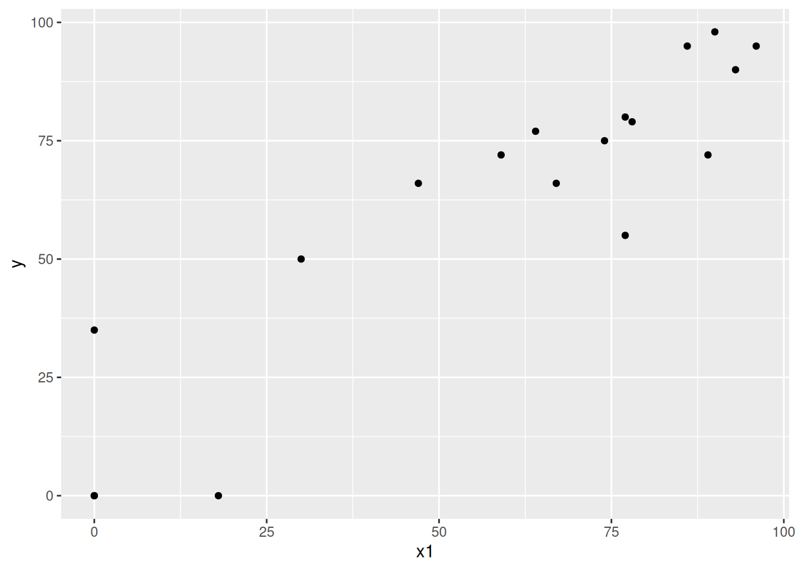
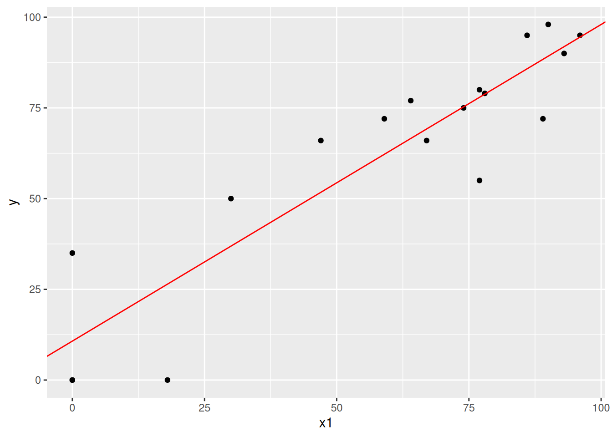
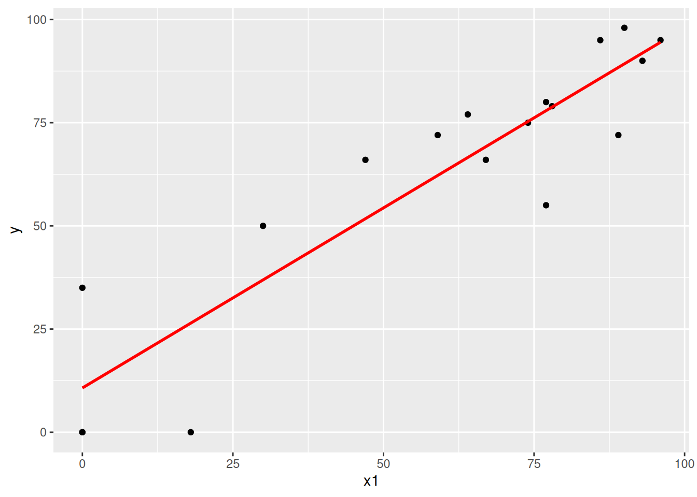
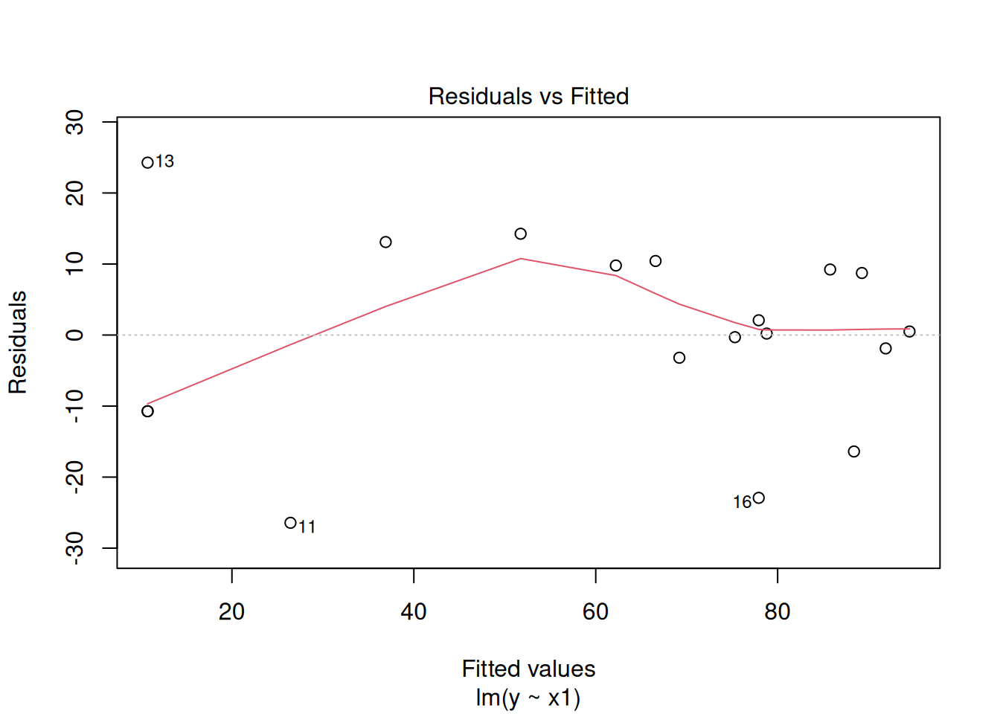
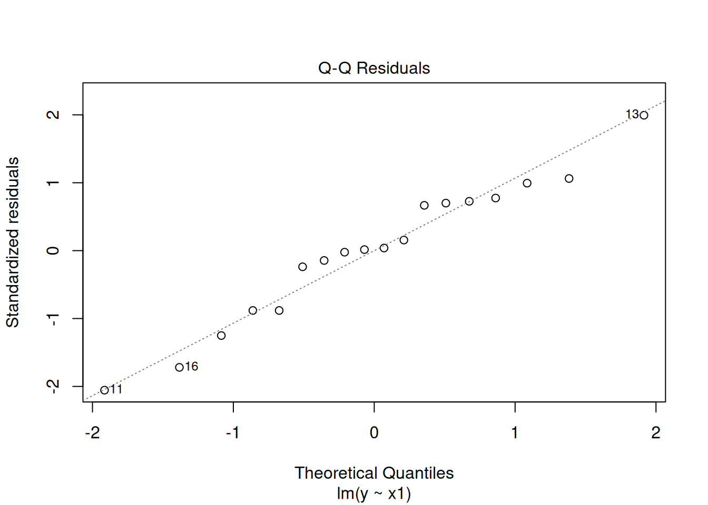
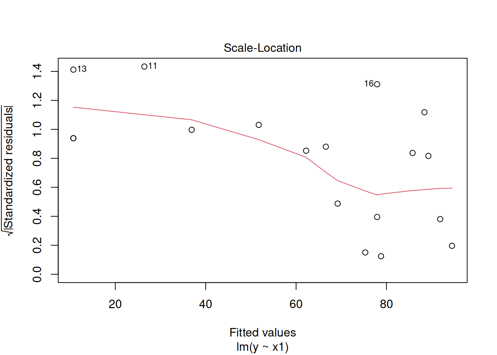
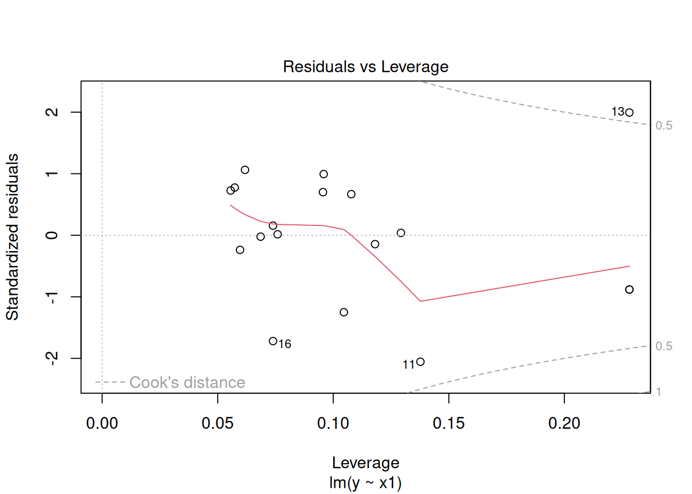

y1 <- c(72,60,56,41,32,30,39,42,37,33,32,63,54,47,91,56,79,81,78,46,39,32,60,35,39,50,43,48)
y2 <- c(66,53,57,29,32,35,39,43,40,29,30,45,46,51,79,68,65,80,55,38,35,30,50,37,36,34,37,54)
y3 <- c(76,66,64,36,35,34,31,31,31,27,34,74,60,52,100,47,70,68,67,37,34,30,67,48,39,37,39,57)
y4 <- c(77,63,58,38,36,26,27,25,25,36,28,63,52,43,75,50,61,58,60,38,37,32,54,39,31,40,50,43)Conversão de scripts em SAS para R com base nos exemplos apresentados em aula
Modelos Lineares I
1 Capítulos 1 a 3 - Covariância, Correlação e Distância de Mahalanobis
Exemplo de cálculo de matriz de Covariâncias e de Correlações amostrais, além da distância de Mahalanobis.
Fonte dos dados: Weights of Cork Boring (in Centigrams) in Four Directions for 28 trees. Applied Multivariate Statistics with SAS Software. Khattree & Naik(2003) - p. 11.
1.1 Vetores e Matriz
Para criar vetores no R, definimos um nome para cada vetor (y1, y2, y3 e y4), em seguida, utilizamos o operador <- e a função c() para atribuir valores a cada um dos objetos (vetores). Dentro de c(), declaramos seus valores, separados por vírgula.
Com a função cbind() juntamos os vetores y1, y2, y3 e y4, salvando-os em um objeto chamado Y. Utilizando a função colnames(), alteramos os nomes dos vetores ("North", "East", "South", "West").
North East South West
[1,] 72 66 76 77
[2,] 60 53 66 63
[3,] 56 57 64 58
[4,] 41 29 36 38
[5,] 32 32 35 36
[6,] 30 35 34 26
[7,] 39 39 31 27
[8,] 42 43 31 25
[9,] 37 40 31 25
[10,] 33 29 27 36
[11,] 32 30 34 28
[12,] 63 45 74 63
[13,] 54 46 60 52
[14,] 47 51 52 43
[15,] 91 79 100 75
[16,] 56 68 47 50
[17,] 79 65 70 61
[18,] 81 80 68 58
[19,] 78 55 67 60
[20,] 46 38 37 38
[21,] 39 35 34 37
[22,] 32 30 30 32
[23,] 60 50 67 54
[24,] 35 37 48 39
[25,] 39 36 39 31
[26,] 50 34 37 40
[27,] 43 37 39 50
[28,] 48 54 57 43Com a função class(), constatamos que o objeto Y é uma matriz (matrix).
class(Y)[1] "matrix" "array" proc iml;
y1 = {72,60,56,41,32,30,39,42,37,33,32,63,54,47, 91,56,79,81,78,46, 39,32,60,35,39,50,43,48};
y2 = {66,53,57,29,32,35,39,43,40,29,30,45,46,51, 79,68,65,80,55,38, 35,30,50,37,36,34,37,54};
y3 = {76,66,64,36,35,34,31,31,31,27,34,74,60,52,100,47,70,68,67,37, 34,30,67,48,39,37,39,57};
y4 = {77,63,58,38,36,26,27,25,25,36,28,63,52,43, 75,50,61,58,60,38, 37,32,54,39,31,40,50,43};Y = y1||y2||y3||y4;
create Cork var {North East South West};
append from Y;
Close Cork;1.2 Matriz de Variâncias e Covariâncias
Para obtermos a matriz de variâncias e covariâncias, precisamos dos seguintes objetos:
n: número de observações \(n\);In: matriz identidade \(\mathbf{I}\);jn: vetor coluna de 1’s \(\mathbf{j}\);Jnn: matriz de 1’s \(\mathbf{J}\).
As funções nrow() e ncol() nos retornam o número de linhas e colunas de um objeto, respectivamente.
No caso da matriz Y, apresenta dimensão \(28 \times 4\).
A função diag() cria uma matriz identidade. Basta inserir dentro da função a dimensão da matriz.
In <- diag(n)
In [,1] [,2] [,3] [,4] [,5] [,6] [,7] [,8] [,9] [,10] [,11] [,12] [,13]
[1,] 1 0 0 0 0 0 0 0 0 0 0 0 0
[2,] 0 1 0 0 0 0 0 0 0 0 0 0 0
[3,] 0 0 1 0 0 0 0 0 0 0 0 0 0
[4,] 0 0 0 1 0 0 0 0 0 0 0 0 0
[5,] 0 0 0 0 1 0 0 0 0 0 0 0 0
[6,] 0 0 0 0 0 1 0 0 0 0 0 0 0
[7,] 0 0 0 0 0 0 1 0 0 0 0 0 0
[8,] 0 0 0 0 0 0 0 1 0 0 0 0 0
[9,] 0 0 0 0 0 0 0 0 1 0 0 0 0
[10,] 0 0 0 0 0 0 0 0 0 1 0 0 0
[11,] 0 0 0 0 0 0 0 0 0 0 1 0 0
[12,] 0 0 0 0 0 0 0 0 0 0 0 1 0
[13,] 0 0 0 0 0 0 0 0 0 0 0 0 1
[14,] 0 0 0 0 0 0 0 0 0 0 0 0 0
[15,] 0 0 0 0 0 0 0 0 0 0 0 0 0
[16,] 0 0 0 0 0 0 0 0 0 0 0 0 0
[17,] 0 0 0 0 0 0 0 0 0 0 0 0 0
[18,] 0 0 0 0 0 0 0 0 0 0 0 0 0
[19,] 0 0 0 0 0 0 0 0 0 0 0 0 0
[20,] 0 0 0 0 0 0 0 0 0 0 0 0 0
[21,] 0 0 0 0 0 0 0 0 0 0 0 0 0
[22,] 0 0 0 0 0 0 0 0 0 0 0 0 0
[23,] 0 0 0 0 0 0 0 0 0 0 0 0 0
[24,] 0 0 0 0 0 0 0 0 0 0 0 0 0
[25,] 0 0 0 0 0 0 0 0 0 0 0 0 0
[26,] 0 0 0 0 0 0 0 0 0 0 0 0 0
[27,] 0 0 0 0 0 0 0 0 0 0 0 0 0
[28,] 0 0 0 0 0 0 0 0 0 0 0 0 0
[,14] [,15] [,16] [,17] [,18] [,19] [,20] [,21] [,22] [,23] [,24] [,25]
[1,] 0 0 0 0 0 0 0 0 0 0 0 0
[2,] 0 0 0 0 0 0 0 0 0 0 0 0
[3,] 0 0 0 0 0 0 0 0 0 0 0 0
[4,] 0 0 0 0 0 0 0 0 0 0 0 0
[5,] 0 0 0 0 0 0 0 0 0 0 0 0
[6,] 0 0 0 0 0 0 0 0 0 0 0 0
[7,] 0 0 0 0 0 0 0 0 0 0 0 0
[8,] 0 0 0 0 0 0 0 0 0 0 0 0
[9,] 0 0 0 0 0 0 0 0 0 0 0 0
[10,] 0 0 0 0 0 0 0 0 0 0 0 0
[11,] 0 0 0 0 0 0 0 0 0 0 0 0
[12,] 0 0 0 0 0 0 0 0 0 0 0 0
[13,] 0 0 0 0 0 0 0 0 0 0 0 0
[14,] 1 0 0 0 0 0 0 0 0 0 0 0
[15,] 0 1 0 0 0 0 0 0 0 0 0 0
[16,] 0 0 1 0 0 0 0 0 0 0 0 0
[17,] 0 0 0 1 0 0 0 0 0 0 0 0
[18,] 0 0 0 0 1 0 0 0 0 0 0 0
[19,] 0 0 0 0 0 1 0 0 0 0 0 0
[20,] 0 0 0 0 0 0 1 0 0 0 0 0
[21,] 0 0 0 0 0 0 0 1 0 0 0 0
[22,] 0 0 0 0 0 0 0 0 1 0 0 0
[23,] 0 0 0 0 0 0 0 0 0 1 0 0
[24,] 0 0 0 0 0 0 0 0 0 0 1 0
[25,] 0 0 0 0 0 0 0 0 0 0 0 1
[26,] 0 0 0 0 0 0 0 0 0 0 0 0
[27,] 0 0 0 0 0 0 0 0 0 0 0 0
[28,] 0 0 0 0 0 0 0 0 0 0 0 0
[,26] [,27] [,28]
[1,] 0 0 0
[2,] 0 0 0
[3,] 0 0 0
[4,] 0 0 0
[5,] 0 0 0
[6,] 0 0 0
[7,] 0 0 0
[8,] 0 0 0
[9,] 0 0 0
[10,] 0 0 0
[11,] 0 0 0
[12,] 0 0 0
[13,] 0 0 0
[14,] 0 0 0
[15,] 0 0 0
[16,] 0 0 0
[17,] 0 0 0
[18,] 0 0 0
[19,] 0 0 0
[20,] 0 0 0
[21,] 0 0 0
[22,] 0 0 0
[23,] 0 0 0
[24,] 0 0 0
[25,] 0 0 0
[26,] 1 0 0
[27,] 0 1 0
[28,] 0 0 1\[ \mathbf{I}_{(28)} = \begin{bmatrix} 1 & 0 & 0 & \dots & 0 \\ 0 & 1 & 0 & \dots & 0 \\ 0 & 0 & 1 &\dots & 0 \\ \vdots & \vdots & \vdots & \ddots & \vdots \\ 0 & 0 & 0 & \dots & 1 \end{bmatrix} \]
Com a função matrix(), podemos criar qualquer tipo de matriz, vetor ou escalar. Para isso, utilizamos três argumentos dentro da função:
data =: os elementos que compõem a matriz;nrow =: número de linhas da matriz;ncol =: número de colunas da matriz.
jn <- matrix(data = 1, nrow = n, ncol = 1)
jn [,1]
[1,] 1
[2,] 1
[3,] 1
[4,] 1
[5,] 1
[6,] 1
[7,] 1
[8,] 1
[9,] 1
[10,] 1
[11,] 1
[12,] 1
[13,] 1
[14,] 1
[15,] 1
[16,] 1
[17,] 1
[18,] 1
[19,] 1
[20,] 1
[21,] 1
[22,] 1
[23,] 1
[24,] 1
[25,] 1
[26,] 1
[27,] 1
[28,] 1Jnn <- matrix(data = 1, nrow = n, ncol = n)
Jnn [,1] [,2] [,3] [,4] [,5] [,6] [,7] [,8] [,9] [,10] [,11] [,12] [,13]
[1,] 1 1 1 1 1 1 1 1 1 1 1 1 1
[2,] 1 1 1 1 1 1 1 1 1 1 1 1 1
[3,] 1 1 1 1 1 1 1 1 1 1 1 1 1
[4,] 1 1 1 1 1 1 1 1 1 1 1 1 1
[5,] 1 1 1 1 1 1 1 1 1 1 1 1 1
[6,] 1 1 1 1 1 1 1 1 1 1 1 1 1
[7,] 1 1 1 1 1 1 1 1 1 1 1 1 1
[8,] 1 1 1 1 1 1 1 1 1 1 1 1 1
[9,] 1 1 1 1 1 1 1 1 1 1 1 1 1
[10,] 1 1 1 1 1 1 1 1 1 1 1 1 1
[11,] 1 1 1 1 1 1 1 1 1 1 1 1 1
[12,] 1 1 1 1 1 1 1 1 1 1 1 1 1
[13,] 1 1 1 1 1 1 1 1 1 1 1 1 1
[14,] 1 1 1 1 1 1 1 1 1 1 1 1 1
[15,] 1 1 1 1 1 1 1 1 1 1 1 1 1
[16,] 1 1 1 1 1 1 1 1 1 1 1 1 1
[17,] 1 1 1 1 1 1 1 1 1 1 1 1 1
[18,] 1 1 1 1 1 1 1 1 1 1 1 1 1
[19,] 1 1 1 1 1 1 1 1 1 1 1 1 1
[20,] 1 1 1 1 1 1 1 1 1 1 1 1 1
[21,] 1 1 1 1 1 1 1 1 1 1 1 1 1
[22,] 1 1 1 1 1 1 1 1 1 1 1 1 1
[23,] 1 1 1 1 1 1 1 1 1 1 1 1 1
[24,] 1 1 1 1 1 1 1 1 1 1 1 1 1
[25,] 1 1 1 1 1 1 1 1 1 1 1 1 1
[26,] 1 1 1 1 1 1 1 1 1 1 1 1 1
[27,] 1 1 1 1 1 1 1 1 1 1 1 1 1
[28,] 1 1 1 1 1 1 1 1 1 1 1 1 1
[,14] [,15] [,16] [,17] [,18] [,19] [,20] [,21] [,22] [,23] [,24] [,25]
[1,] 1 1 1 1 1 1 1 1 1 1 1 1
[2,] 1 1 1 1 1 1 1 1 1 1 1 1
[3,] 1 1 1 1 1 1 1 1 1 1 1 1
[4,] 1 1 1 1 1 1 1 1 1 1 1 1
[5,] 1 1 1 1 1 1 1 1 1 1 1 1
[6,] 1 1 1 1 1 1 1 1 1 1 1 1
[7,] 1 1 1 1 1 1 1 1 1 1 1 1
[8,] 1 1 1 1 1 1 1 1 1 1 1 1
[9,] 1 1 1 1 1 1 1 1 1 1 1 1
[10,] 1 1 1 1 1 1 1 1 1 1 1 1
[11,] 1 1 1 1 1 1 1 1 1 1 1 1
[12,] 1 1 1 1 1 1 1 1 1 1 1 1
[13,] 1 1 1 1 1 1 1 1 1 1 1 1
[14,] 1 1 1 1 1 1 1 1 1 1 1 1
[15,] 1 1 1 1 1 1 1 1 1 1 1 1
[16,] 1 1 1 1 1 1 1 1 1 1 1 1
[17,] 1 1 1 1 1 1 1 1 1 1 1 1
[18,] 1 1 1 1 1 1 1 1 1 1 1 1
[19,] 1 1 1 1 1 1 1 1 1 1 1 1
[20,] 1 1 1 1 1 1 1 1 1 1 1 1
[21,] 1 1 1 1 1 1 1 1 1 1 1 1
[22,] 1 1 1 1 1 1 1 1 1 1 1 1
[23,] 1 1 1 1 1 1 1 1 1 1 1 1
[24,] 1 1 1 1 1 1 1 1 1 1 1 1
[25,] 1 1 1 1 1 1 1 1 1 1 1 1
[26,] 1 1 1 1 1 1 1 1 1 1 1 1
[27,] 1 1 1 1 1 1 1 1 1 1 1 1
[28,] 1 1 1 1 1 1 1 1 1 1 1 1
[,26] [,27] [,28]
[1,] 1 1 1
[2,] 1 1 1
[3,] 1 1 1
[4,] 1 1 1
[5,] 1 1 1
[6,] 1 1 1
[7,] 1 1 1
[8,] 1 1 1
[9,] 1 1 1
[10,] 1 1 1
[11,] 1 1 1
[12,] 1 1 1
[13,] 1 1 1
[14,] 1 1 1
[15,] 1 1 1
[16,] 1 1 1
[17,] 1 1 1
[18,] 1 1 1
[19,] 1 1 1
[20,] 1 1 1
[21,] 1 1 1
[22,] 1 1 1
[23,] 1 1 1
[24,] 1 1 1
[25,] 1 1 1
[26,] 1 1 1
[27,] 1 1 1
[28,] 1 1 1Nos casos anteriores, criamos o vetor coluna de 1’s jn de dimensão \(28 \times 1\) e a matriz de 1’s Jnn de dimensão \(28 \times 28\).
\[ j_n = \mathbf{j}_{(28 \times 1)} = [1,1,...,1]' \]
\[ Jnn = \mathbf{J}_{(28 \times 28)} = \begin{bmatrix} 1 & 1 & 1 & \dots & 1 \\ 1 & 1 & 1 & \dots & 1 \\ 1 & 1 & 1 &\dots & 1 \\ \vdots & \vdots & \vdots & \ddots & \vdots \\ 1 & 1 & 1 & \dots & 1 \end{bmatrix} \]
Além disso, note que a matriz \(\mathbf{J}\) (Jnn) pode ser obtida por \(\mathbf{J} = \mathbf{j} \space \mathbf{j}'\), ou seja, a multiplicação do vetor coluna \(\mathbf{j}\) (jn) pela sua transposta.
No R, utilizamos a função t() para realizar a transposição de uma matriz ou vetor.
[,1] [,2] [,3] [,4] [,5] [,6] [,7] [,8] [,9] [,10] [,11] [,12] [,13]
[1,] 1 1 1 1 1 1 1 1 1 1 1 1 1
[2,] 1 1 1 1 1 1 1 1 1 1 1 1 1
[3,] 1 1 1 1 1 1 1 1 1 1 1 1 1
[4,] 1 1 1 1 1 1 1 1 1 1 1 1 1
[5,] 1 1 1 1 1 1 1 1 1 1 1 1 1
[6,] 1 1 1 1 1 1 1 1 1 1 1 1 1
[7,] 1 1 1 1 1 1 1 1 1 1 1 1 1
[8,] 1 1 1 1 1 1 1 1 1 1 1 1 1
[9,] 1 1 1 1 1 1 1 1 1 1 1 1 1
[10,] 1 1 1 1 1 1 1 1 1 1 1 1 1
[11,] 1 1 1 1 1 1 1 1 1 1 1 1 1
[12,] 1 1 1 1 1 1 1 1 1 1 1 1 1
[13,] 1 1 1 1 1 1 1 1 1 1 1 1 1
[14,] 1 1 1 1 1 1 1 1 1 1 1 1 1
[15,] 1 1 1 1 1 1 1 1 1 1 1 1 1
[16,] 1 1 1 1 1 1 1 1 1 1 1 1 1
[17,] 1 1 1 1 1 1 1 1 1 1 1 1 1
[18,] 1 1 1 1 1 1 1 1 1 1 1 1 1
[19,] 1 1 1 1 1 1 1 1 1 1 1 1 1
[20,] 1 1 1 1 1 1 1 1 1 1 1 1 1
[21,] 1 1 1 1 1 1 1 1 1 1 1 1 1
[22,] 1 1 1 1 1 1 1 1 1 1 1 1 1
[23,] 1 1 1 1 1 1 1 1 1 1 1 1 1
[24,] 1 1 1 1 1 1 1 1 1 1 1 1 1
[25,] 1 1 1 1 1 1 1 1 1 1 1 1 1
[26,] 1 1 1 1 1 1 1 1 1 1 1 1 1
[27,] 1 1 1 1 1 1 1 1 1 1 1 1 1
[28,] 1 1 1 1 1 1 1 1 1 1 1 1 1
[,14] [,15] [,16] [,17] [,18] [,19] [,20] [,21] [,22] [,23] [,24] [,25]
[1,] 1 1 1 1 1 1 1 1 1 1 1 1
[2,] 1 1 1 1 1 1 1 1 1 1 1 1
[3,] 1 1 1 1 1 1 1 1 1 1 1 1
[4,] 1 1 1 1 1 1 1 1 1 1 1 1
[5,] 1 1 1 1 1 1 1 1 1 1 1 1
[6,] 1 1 1 1 1 1 1 1 1 1 1 1
[7,] 1 1 1 1 1 1 1 1 1 1 1 1
[8,] 1 1 1 1 1 1 1 1 1 1 1 1
[9,] 1 1 1 1 1 1 1 1 1 1 1 1
[10,] 1 1 1 1 1 1 1 1 1 1 1 1
[11,] 1 1 1 1 1 1 1 1 1 1 1 1
[12,] 1 1 1 1 1 1 1 1 1 1 1 1
[13,] 1 1 1 1 1 1 1 1 1 1 1 1
[14,] 1 1 1 1 1 1 1 1 1 1 1 1
[15,] 1 1 1 1 1 1 1 1 1 1 1 1
[16,] 1 1 1 1 1 1 1 1 1 1 1 1
[17,] 1 1 1 1 1 1 1 1 1 1 1 1
[18,] 1 1 1 1 1 1 1 1 1 1 1 1
[19,] 1 1 1 1 1 1 1 1 1 1 1 1
[20,] 1 1 1 1 1 1 1 1 1 1 1 1
[21,] 1 1 1 1 1 1 1 1 1 1 1 1
[22,] 1 1 1 1 1 1 1 1 1 1 1 1
[23,] 1 1 1 1 1 1 1 1 1 1 1 1
[24,] 1 1 1 1 1 1 1 1 1 1 1 1
[25,] 1 1 1 1 1 1 1 1 1 1 1 1
[26,] 1 1 1 1 1 1 1 1 1 1 1 1
[27,] 1 1 1 1 1 1 1 1 1 1 1 1
[28,] 1 1 1 1 1 1 1 1 1 1 1 1
[,26] [,27] [,28]
[1,] 1 1 1
[2,] 1 1 1
[3,] 1 1 1
[4,] 1 1 1
[5,] 1 1 1
[6,] 1 1 1
[7,] 1 1 1
[8,] 1 1 1
[9,] 1 1 1
[10,] 1 1 1
[11,] 1 1 1
[12,] 1 1 1
[13,] 1 1 1
[14,] 1 1 1
[15,] 1 1 1
[16,] 1 1 1
[17,] 1 1 1
[18,] 1 1 1
[19,] 1 1 1
[20,] 1 1 1
[21,] 1 1 1
[22,] 1 1 1
[23,] 1 1 1
[24,] 1 1 1
[25,] 1 1 1
[26,] 1 1 1
[27,] 1 1 1
[28,] 1 1 1\[ \mathbf{J} = \mathbf{j} \space \mathbf{j}' = \begin{bmatrix} 1 \\ 1 \\ \vdots \\1 \end{bmatrix} \begin{bmatrix} 1 & 1 & \dots & 1 \end{bmatrix} = \begin{bmatrix} 1 & 1 & \dots & 1 \\ 1 & 1 & \dots & 1 \\ \vdots & \vdots & \ddots & \vdots \\ 1 & 1 & \dots & 1 \end{bmatrix} \]
A seguir, calcularemos a matriz de variâncias e covariâncias amostrais, dada pela equação:
\[\mathbf{\Sigma} = \frac{1}{n-1} \mathbf{Y}'(\mathbf{I} - \frac{1}{n}J) \mathbf{Y}\]
North East South West
North 290.4061 223.7526 288.4378 226.2712
East 223.7526 219.9299 229.0595 171.3743
South 288.4378 229.0595 350.0040 259.5410
West 226.2712 171.3743 259.5410 226.0040A função t() realiza a transposição de uma matriz ou vetor. Já o operador %*% realiza a multiplicação entre duas matrizes ou vetores conformes.
No R, temos a função cov() que realiza o cálculo da matriz de variâncias e covariâncias. Para isso, basta declarar dentro da função a matriz desejada.
cov(Y) North East South West
North 290.4061 223.7526 288.4378 226.2712
East 223.7526 219.9299 229.0595 171.3743
South 288.4378 229.0595 350.0040 259.5410
West 226.2712 171.3743 259.5410 226.0040\[ \mathbf{\Sigma} = \begin{bmatrix} \sigma^2_1 & \sigma_{12} & \sigma_{13} & \dots & \sigma_{1p} \\ \sigma_{21} & \sigma^2_2 & \sigma_{23} & \dots & \sigma_{2p} \\ \sigma_{31} & \sigma_{32} & \sigma^2_3 &\dots & \sigma_{p3} \\ \vdots & \vdots & \vdots & \ddots & \vdots \\ \sigma_{p1} & \sigma_{p2} & \sigma_{p3} & \dots & \sigma^2_p \end{bmatrix} \]
Os elementos da diagonal principal são as variâncias e os demais elementos, as covariâncias. Note que a matriz de variâncias e covariâncias é simétrica.
1.3 Matriz de Correlações
Para calcular a matriz de correlação (\(\mathbf{\rho}_{ij}\)), utilizamos a seguinte expressão:
\[\mathbf{\rho}_{ij} = \mathbf{D}_{\sigma}^{-1} \mathbf{\Sigma} \mathbf{D}_{\sigma}^{-1}\]
em que \(\mathbf{D}_{\sigma}\) é uma matriz diagonal com a raiz quadrada das variâncias, ou seja, a raiz quadrada da diagonal da matriz de variâncias e covariâncias (\(\mathbf{\Sigma}\)).
North East South West
17.04131 14.83003 18.70839 15.03343 [,1] [,2] [,3] [,4]
[1,] 1.0000000 0.8853667 0.9047173 0.8832188
[2,] 0.8853667 1.0000000 0.8256001 0.7686801
[3,] 0.9047173 0.8256001 1.0000000 0.9228082
[4,] 0.8832188 0.7686801 0.9228082 1.0000000A função sqrt() realiza a operação raiz quadrada. Já a solve(), calcula a inversa de uma matriz.
No R, temos a função cor() que realiza o cálculo da matriz de correlação. Novamente, basta declarar a matriz dentro da função.
cor(Y) North East South West
North 1.0000000 0.8853667 0.9047173 0.8832188
East 0.8853667 1.0000000 0.8256001 0.7686801
South 0.9047173 0.8256001 1.0000000 0.9228082
West 0.8832188 0.7686801 0.9228082 1.0000000\[ \mathbf{\rho} = \begin{bmatrix} 1 & \rho_{12} & \rho_{13} & \dots & \rho_{1p} \\ \rho_{21} & 1 & \rho_{23} & \dots & \rho_{2p} \\ \rho_{31} & \rho_{32} & 1 &\dots & \rho_{p3} \\ \vdots & \vdots & \vdots & \ddots & \vdots \\ \rho_{p1} & \rho_{p2} & \rho_{p3} & \dots & 1 \end{bmatrix} \]
Por fim, a partir da matriz de correlação (\(\mathbf{\rho}_{ij}\)), podemos retornar para a matriz de variâncias e covariâncias (\(\mathbf{\Sigma}\)) a partir da seguinte equação:
\[ \mathbf{\Sigma} = \mathbf{D}_{\sigma} \mathbf{\rho}_{ij} \mathbf{D}_{\sigma} \]
p = ncol(Y);
n = nrow(Y);
In = I(n);
jn = j(n,1,1);
Jnn = J(n,n,1);
Sigma = (1/(n-1))*t(Y)*(In-(1/n)*Jnn)*Y;
D = sqrt(diag(Sigma));
corr = inv(D)*Sigma*inv(D);
Verifica = D*corr*D;
title 'Matriz de variâncias e covariâncias amostrais utilizando proc iml';
print ,,Sigma[format=8.4],, 'Matriz de correlações:' ,, corr[format=8.5],, Verifica[format=8.4];1.4 Distância de Mahalanobis (Distância padronizada)
Primeiramente, calcularemos o vetor de médias (\(\mathbf{\mu}\)) da matriz \(\mathbf{Y}\).
\[\mathbf{\mu} = \frac{1}n \mathbf{j}' \mathbf{Y}\]
Com o vetor de médias (\(\mathbf{\mu}\)), calcularemos a distância de Mahalanobis (\(DM\)), dada pela seguinte expressão:
\[ DM = (\mathbf{y} - \mathbf{\mu})' \mathbf{\Sigma} (\mathbf{y} - \mathbf{\mu}) \]
DM2 <- rep(0, n)
for (i in 1:n) {
yi <- Y[i,]
DM <- as.numeric((yi - mi) %*% solve(Sigma) %*% t(yi - mi))
DM2[i] <- DM
}
DM2 [1] 7.619457 2.509622 2.714316 2.521244 1.744186 3.069220 2.212975
[8] 4.114008 2.800802 3.315503 2.099698 5.891095 1.062421 1.691059
[15] 8.996903 10.409160 4.075630 8.576964 7.124169 1.434898 1.086315
[22] 1.372791 2.110873 3.913168 1.647245 4.667263 5.412107 3.806908No R, podemos utilizar a função mahalanobis() para calcular a distância de Mahalanobis. Como argumentos, temos:
x =: matriz utilizada para o cálculo;center =: o vetor de médias (\(\mu\));cov =: a matriz de variâncias e covariâncias (\(\Sigma\)).
mahalanobis(x = Y, center = mi, cov = Sigma) [1] 7.619457 2.509622 2.714316 2.521244 1.744186 3.069220 2.212975
[8] 4.114008 2.800802 3.315503 2.099698 5.891095 1.062421 1.691059
[15] 8.996903 10.409160 4.075630 8.576964 7.124169 1.434898 1.086315
[22] 1.372791 2.110873 3.913168 1.647245 4.667263 5.412107 3.806908Ordenando os valores do vetor da distância de Mahalanobis, temos:
rank <- rank(DM2)
data.frame(Y, DM2, rank) North East South West DM2 rank
1 72 66 76 77 7.619457 25
2 60 53 66 63 2.509622 11
3 56 57 64 58 2.714316 13
4 41 29 36 38 2.521244 12
5 32 32 35 36 1.744186 7
6 30 35 34 26 3.069220 15
7 39 39 31 27 2.212975 10
8 42 43 31 25 4.114008 20
9 37 40 31 25 2.800802 14
10 33 29 27 36 3.315503 16
11 32 30 34 28 2.099698 8
12 63 45 74 63 5.891095 23
13 54 46 60 52 1.062421 1
14 47 51 52 43 1.691059 6
15 91 79 100 75 8.996903 27
16 56 68 47 50 10.409160 28
17 79 65 70 61 4.075630 19
18 81 80 68 58 8.576964 26
19 78 55 67 60 7.124169 24
20 46 38 37 38 1.434898 4
21 39 35 34 37 1.086315 2
22 32 30 30 32 1.372791 3
23 60 50 67 54 2.110873 9
24 35 37 48 39 3.913168 18
25 39 36 39 31 1.647245 5
26 50 34 37 40 4.667263 21
27 43 37 39 50 5.412107 22
28 48 54 57 43 3.806908 17A observação 13 apresenta a menor distância, enquanto a 16, a maior distância de Mahalanobis.
mi = (1/n)*t(jn)*y;
print 'Vetor de médias:' mi[format=5.2],,;DM2 = j(n,1,0);
i=1;
do while (i<=n);
yi= Y[i,];
DM = (yi-mi)*inv(Sigma)*t(yi-mi);
DM2[i] = DM;
i=i+1;
end;
rank = rank(DM2);
print'-----------------------------------------------------------------',
'Distância de Mahalanobis de cada ponto (y) ao vetor de médias(mi)',
'-----------------------------------------------------------------';
print ,,Y ' ' DM2[format=8.4] ' ' rank;
quit;
proc corr cov data=cork;
title 'Matriz de variâncias e covariâncias utilizando proc corr';
var north east south west;
run;2 Exemplo
Exemplo de cálculo de matriz de Covariâncias e de Correlações amostrais, além da distância de Mahalanobis.
Fonte dos dados: Weights of Cork Boring (in Centigrams) in Four Directions for 28 trees. Applied Multivariate Statistics with SAS Software. Khattree & Naik(2003) - p. 11.
2.1 Vetores e Matriz
Para criar vetores no R, definimos um nome para cada vetor (y1, y2, y3 e y4), em seguida, utilizamos o operador <- e a função c() para atribuir valores a cada um dos objetos (vetores). Dentro de c(), declaramos seus valores, separados por vírgula.
y1 <- c(72,60,56,41,32,30,39,42,37,33,32,63,54,47,91,56,79,81,78,46,39,32,60,35,39,50,43,48)
y2 <- c(66,53,57,29,32,35,39,43,40,29,30,45,46,51,79,68,65,80,55,38,35,30,50,37,36,34,37,54)
y3 <- c(76,66,64,36,35,34,31,31,31,27,34,74,60,52,100,47,70,68,67,37,34,30,67,48,39,37,39,57)
y4 <- c(77,63,58,38,36,26,27,25,25,36,28,63,52,43,75,50,61,58,60,38,37,32,54,39,31,40,50,43)Com a função cbind() juntamos os vetores y1, y2, y3 e y4, salvando-os em um objeto chamado Y. Utilizando a função colnames(), alteramos os nomes dos vetores ("North", "East", "South", "West").
North East South West
[1,] 72 66 76 77
[2,] 60 53 66 63
[3,] 56 57 64 58
[4,] 41 29 36 38
[5,] 32 32 35 36
[6,] 30 35 34 26
[7,] 39 39 31 27
[8,] 42 43 31 25
[9,] 37 40 31 25
[10,] 33 29 27 36
[11,] 32 30 34 28
[12,] 63 45 74 63
[13,] 54 46 60 52
[14,] 47 51 52 43
[15,] 91 79 100 75
[16,] 56 68 47 50
[17,] 79 65 70 61
[18,] 81 80 68 58
[19,] 78 55 67 60
[20,] 46 38 37 38
[21,] 39 35 34 37
[22,] 32 30 30 32
[23,] 60 50 67 54
[24,] 35 37 48 39
[25,] 39 36 39 31
[26,] 50 34 37 40
[27,] 43 37 39 50
[28,] 48 54 57 43Com a função class(), constatamos que o objeto Y é uma matriz (matrix).
class(Y)[1] "matrix" "array" proc iml;
y1 = {72,60,56,41,32,30,39,42,37,33,32,63,54,47, 91,56,79,81,78,46, 39,32,60,35,39,50,43,48};
y2 = {66,53,57,29,32,35,39,43,40,29,30,45,46,51, 79,68,65,80,55,38, 35,30,50,37,36,34,37,54};
y3 = {76,66,64,36,35,34,31,31,31,27,34,74,60,52,100,47,70,68,67,37, 34,30,67,48,39,37,39,57};
y4 = {77,63,58,38,36,26,27,25,25,36,28,63,52,43, 75,50,61,58,60,38, 37,32,54,39,31,40,50,43};Y = y1||y2||y3||y4;
create Cork var {North East South West};
append from Y;
Close Cork;2.2 Matriz de Variâncias e Covariâncias
Para obtermos a matriz de variâncias e covariâncias, precisamos dos seguintes objetos:
n: número de observações \(n\);In: matriz identidade \(\mathbf{I}\);jn: vetor coluna de 1’s \(\mathbf{j}\);Jnn: matriz de 1’s \(\mathbf{J}\).
As funções nrow() e ncol() nos retornam o número de linhas e colunas de um objeto, respectivamente.
No caso da matriz Y, apresenta dimensão \(28 \times 4\).
A função diag() cria uma matriz identidade. Basta inserir dentro da função a dimensão da matriz.
In <- diag(n)
In [,1] [,2] [,3] [,4] [,5] [,6] [,7] [,8] [,9] [,10] [,11] [,12] [,13]
[1,] 1 0 0 0 0 0 0 0 0 0 0 0 0
[2,] 0 1 0 0 0 0 0 0 0 0 0 0 0
[3,] 0 0 1 0 0 0 0 0 0 0 0 0 0
[4,] 0 0 0 1 0 0 0 0 0 0 0 0 0
[5,] 0 0 0 0 1 0 0 0 0 0 0 0 0
[6,] 0 0 0 0 0 1 0 0 0 0 0 0 0
[7,] 0 0 0 0 0 0 1 0 0 0 0 0 0
[8,] 0 0 0 0 0 0 0 1 0 0 0 0 0
[9,] 0 0 0 0 0 0 0 0 1 0 0 0 0
[10,] 0 0 0 0 0 0 0 0 0 1 0 0 0
[11,] 0 0 0 0 0 0 0 0 0 0 1 0 0
[12,] 0 0 0 0 0 0 0 0 0 0 0 1 0
[13,] 0 0 0 0 0 0 0 0 0 0 0 0 1
[14,] 0 0 0 0 0 0 0 0 0 0 0 0 0
[15,] 0 0 0 0 0 0 0 0 0 0 0 0 0
[16,] 0 0 0 0 0 0 0 0 0 0 0 0 0
[17,] 0 0 0 0 0 0 0 0 0 0 0 0 0
[18,] 0 0 0 0 0 0 0 0 0 0 0 0 0
[19,] 0 0 0 0 0 0 0 0 0 0 0 0 0
[20,] 0 0 0 0 0 0 0 0 0 0 0 0 0
[21,] 0 0 0 0 0 0 0 0 0 0 0 0 0
[22,] 0 0 0 0 0 0 0 0 0 0 0 0 0
[23,] 0 0 0 0 0 0 0 0 0 0 0 0 0
[24,] 0 0 0 0 0 0 0 0 0 0 0 0 0
[25,] 0 0 0 0 0 0 0 0 0 0 0 0 0
[26,] 0 0 0 0 0 0 0 0 0 0 0 0 0
[27,] 0 0 0 0 0 0 0 0 0 0 0 0 0
[28,] 0 0 0 0 0 0 0 0 0 0 0 0 0
[,14] [,15] [,16] [,17] [,18] [,19] [,20] [,21] [,22] [,23] [,24] [,25]
[1,] 0 0 0 0 0 0 0 0 0 0 0 0
[2,] 0 0 0 0 0 0 0 0 0 0 0 0
[3,] 0 0 0 0 0 0 0 0 0 0 0 0
[4,] 0 0 0 0 0 0 0 0 0 0 0 0
[5,] 0 0 0 0 0 0 0 0 0 0 0 0
[6,] 0 0 0 0 0 0 0 0 0 0 0 0
[7,] 0 0 0 0 0 0 0 0 0 0 0 0
[8,] 0 0 0 0 0 0 0 0 0 0 0 0
[9,] 0 0 0 0 0 0 0 0 0 0 0 0
[10,] 0 0 0 0 0 0 0 0 0 0 0 0
[11,] 0 0 0 0 0 0 0 0 0 0 0 0
[12,] 0 0 0 0 0 0 0 0 0 0 0 0
[13,] 0 0 0 0 0 0 0 0 0 0 0 0
[14,] 1 0 0 0 0 0 0 0 0 0 0 0
[15,] 0 1 0 0 0 0 0 0 0 0 0 0
[16,] 0 0 1 0 0 0 0 0 0 0 0 0
[17,] 0 0 0 1 0 0 0 0 0 0 0 0
[18,] 0 0 0 0 1 0 0 0 0 0 0 0
[19,] 0 0 0 0 0 1 0 0 0 0 0 0
[20,] 0 0 0 0 0 0 1 0 0 0 0 0
[21,] 0 0 0 0 0 0 0 1 0 0 0 0
[22,] 0 0 0 0 0 0 0 0 1 0 0 0
[23,] 0 0 0 0 0 0 0 0 0 1 0 0
[24,] 0 0 0 0 0 0 0 0 0 0 1 0
[25,] 0 0 0 0 0 0 0 0 0 0 0 1
[26,] 0 0 0 0 0 0 0 0 0 0 0 0
[27,] 0 0 0 0 0 0 0 0 0 0 0 0
[28,] 0 0 0 0 0 0 0 0 0 0 0 0
[,26] [,27] [,28]
[1,] 0 0 0
[2,] 0 0 0
[3,] 0 0 0
[4,] 0 0 0
[5,] 0 0 0
[6,] 0 0 0
[7,] 0 0 0
[8,] 0 0 0
[9,] 0 0 0
[10,] 0 0 0
[11,] 0 0 0
[12,] 0 0 0
[13,] 0 0 0
[14,] 0 0 0
[15,] 0 0 0
[16,] 0 0 0
[17,] 0 0 0
[18,] 0 0 0
[19,] 0 0 0
[20,] 0 0 0
[21,] 0 0 0
[22,] 0 0 0
[23,] 0 0 0
[24,] 0 0 0
[25,] 0 0 0
[26,] 1 0 0
[27,] 0 1 0
[28,] 0 0 1\[ \mathbf{I}_{(28)} = \begin{bmatrix} 1 & 0 & 0 & \dots & 0 \\ 0 & 1 & 0 & \dots & 0 \\ 0 & 0 & 1 &\dots & 0 \\ \vdots & \vdots & \vdots & \ddots & \vdots \\ 0 & 0 & 0 & \dots & 1 \end{bmatrix} \]
Com a função matrix(), podemos criar qualquer tipo de matriz, vetor ou escalar. Para isso, utilizamos três argumentos dentro da função:
data =: os elementos que compõem a matriz;nrow =: número de linhas da matriz;ncol =: número de colunas da matriz.
jn <- matrix(data = 1, nrow = n, ncol = 1)
jn [,1]
[1,] 1
[2,] 1
[3,] 1
[4,] 1
[5,] 1
[6,] 1
[7,] 1
[8,] 1
[9,] 1
[10,] 1
[11,] 1
[12,] 1
[13,] 1
[14,] 1
[15,] 1
[16,] 1
[17,] 1
[18,] 1
[19,] 1
[20,] 1
[21,] 1
[22,] 1
[23,] 1
[24,] 1
[25,] 1
[26,] 1
[27,] 1
[28,] 1Jnn <- matrix(data = 1, nrow = n, ncol = n)
Jnn [,1] [,2] [,3] [,4] [,5] [,6] [,7] [,8] [,9] [,10] [,11] [,12] [,13]
[1,] 1 1 1 1 1 1 1 1 1 1 1 1 1
[2,] 1 1 1 1 1 1 1 1 1 1 1 1 1
[3,] 1 1 1 1 1 1 1 1 1 1 1 1 1
[4,] 1 1 1 1 1 1 1 1 1 1 1 1 1
[5,] 1 1 1 1 1 1 1 1 1 1 1 1 1
[6,] 1 1 1 1 1 1 1 1 1 1 1 1 1
[7,] 1 1 1 1 1 1 1 1 1 1 1 1 1
[8,] 1 1 1 1 1 1 1 1 1 1 1 1 1
[9,] 1 1 1 1 1 1 1 1 1 1 1 1 1
[10,] 1 1 1 1 1 1 1 1 1 1 1 1 1
[11,] 1 1 1 1 1 1 1 1 1 1 1 1 1
[12,] 1 1 1 1 1 1 1 1 1 1 1 1 1
[13,] 1 1 1 1 1 1 1 1 1 1 1 1 1
[14,] 1 1 1 1 1 1 1 1 1 1 1 1 1
[15,] 1 1 1 1 1 1 1 1 1 1 1 1 1
[16,] 1 1 1 1 1 1 1 1 1 1 1 1 1
[17,] 1 1 1 1 1 1 1 1 1 1 1 1 1
[18,] 1 1 1 1 1 1 1 1 1 1 1 1 1
[19,] 1 1 1 1 1 1 1 1 1 1 1 1 1
[20,] 1 1 1 1 1 1 1 1 1 1 1 1 1
[21,] 1 1 1 1 1 1 1 1 1 1 1 1 1
[22,] 1 1 1 1 1 1 1 1 1 1 1 1 1
[23,] 1 1 1 1 1 1 1 1 1 1 1 1 1
[24,] 1 1 1 1 1 1 1 1 1 1 1 1 1
[25,] 1 1 1 1 1 1 1 1 1 1 1 1 1
[26,] 1 1 1 1 1 1 1 1 1 1 1 1 1
[27,] 1 1 1 1 1 1 1 1 1 1 1 1 1
[28,] 1 1 1 1 1 1 1 1 1 1 1 1 1
[,14] [,15] [,16] [,17] [,18] [,19] [,20] [,21] [,22] [,23] [,24] [,25]
[1,] 1 1 1 1 1 1 1 1 1 1 1 1
[2,] 1 1 1 1 1 1 1 1 1 1 1 1
[3,] 1 1 1 1 1 1 1 1 1 1 1 1
[4,] 1 1 1 1 1 1 1 1 1 1 1 1
[5,] 1 1 1 1 1 1 1 1 1 1 1 1
[6,] 1 1 1 1 1 1 1 1 1 1 1 1
[7,] 1 1 1 1 1 1 1 1 1 1 1 1
[8,] 1 1 1 1 1 1 1 1 1 1 1 1
[9,] 1 1 1 1 1 1 1 1 1 1 1 1
[10,] 1 1 1 1 1 1 1 1 1 1 1 1
[11,] 1 1 1 1 1 1 1 1 1 1 1 1
[12,] 1 1 1 1 1 1 1 1 1 1 1 1
[13,] 1 1 1 1 1 1 1 1 1 1 1 1
[14,] 1 1 1 1 1 1 1 1 1 1 1 1
[15,] 1 1 1 1 1 1 1 1 1 1 1 1
[16,] 1 1 1 1 1 1 1 1 1 1 1 1
[17,] 1 1 1 1 1 1 1 1 1 1 1 1
[18,] 1 1 1 1 1 1 1 1 1 1 1 1
[19,] 1 1 1 1 1 1 1 1 1 1 1 1
[20,] 1 1 1 1 1 1 1 1 1 1 1 1
[21,] 1 1 1 1 1 1 1 1 1 1 1 1
[22,] 1 1 1 1 1 1 1 1 1 1 1 1
[23,] 1 1 1 1 1 1 1 1 1 1 1 1
[24,] 1 1 1 1 1 1 1 1 1 1 1 1
[25,] 1 1 1 1 1 1 1 1 1 1 1 1
[26,] 1 1 1 1 1 1 1 1 1 1 1 1
[27,] 1 1 1 1 1 1 1 1 1 1 1 1
[28,] 1 1 1 1 1 1 1 1 1 1 1 1
[,26] [,27] [,28]
[1,] 1 1 1
[2,] 1 1 1
[3,] 1 1 1
[4,] 1 1 1
[5,] 1 1 1
[6,] 1 1 1
[7,] 1 1 1
[8,] 1 1 1
[9,] 1 1 1
[10,] 1 1 1
[11,] 1 1 1
[12,] 1 1 1
[13,] 1 1 1
[14,] 1 1 1
[15,] 1 1 1
[16,] 1 1 1
[17,] 1 1 1
[18,] 1 1 1
[19,] 1 1 1
[20,] 1 1 1
[21,] 1 1 1
[22,] 1 1 1
[23,] 1 1 1
[24,] 1 1 1
[25,] 1 1 1
[26,] 1 1 1
[27,] 1 1 1
[28,] 1 1 1Nos casos anteriores, criamos o vetor coluna de 1’s jn de dimensão \(28 \times 1\) e a matriz de 1’s Jnn de dimensão \(28 \times 28\).
\[ j_n = \mathbf{j}_{(28 \times 1)} = [1,1,...,1]' \]
\[ Jnn = \mathbf{J}_{(28 \times 28)} = \begin{bmatrix} 1 & 1 & 1 & \dots & 1 \\ 1 & 1 & 1 & \dots & 1 \\ 1 & 1 & 1 &\dots & 1 \\ \vdots & \vdots & \vdots & \ddots & \vdots \\ 1 & 1 & 1 & \dots & 1 \end{bmatrix} \]
Além disso, note que a matriz \(\mathbf{J}\) (Jnn) pode ser obtida por \(\mathbf{J} = \mathbf{j} \space \mathbf{j}'\), ou seja, a multiplicação do vetor coluna \(\mathbf{j}\) (jn) pela sua transposta.
No R, utilizamos a função t() para realizar a transposição de uma matriz ou vetor.
[,1] [,2] [,3] [,4] [,5] [,6] [,7] [,8] [,9] [,10] [,11] [,12] [,13]
[1,] 1 1 1 1 1 1 1 1 1 1 1 1 1
[2,] 1 1 1 1 1 1 1 1 1 1 1 1 1
[3,] 1 1 1 1 1 1 1 1 1 1 1 1 1
[4,] 1 1 1 1 1 1 1 1 1 1 1 1 1
[5,] 1 1 1 1 1 1 1 1 1 1 1 1 1
[6,] 1 1 1 1 1 1 1 1 1 1 1 1 1
[7,] 1 1 1 1 1 1 1 1 1 1 1 1 1
[8,] 1 1 1 1 1 1 1 1 1 1 1 1 1
[9,] 1 1 1 1 1 1 1 1 1 1 1 1 1
[10,] 1 1 1 1 1 1 1 1 1 1 1 1 1
[11,] 1 1 1 1 1 1 1 1 1 1 1 1 1
[12,] 1 1 1 1 1 1 1 1 1 1 1 1 1
[13,] 1 1 1 1 1 1 1 1 1 1 1 1 1
[14,] 1 1 1 1 1 1 1 1 1 1 1 1 1
[15,] 1 1 1 1 1 1 1 1 1 1 1 1 1
[16,] 1 1 1 1 1 1 1 1 1 1 1 1 1
[17,] 1 1 1 1 1 1 1 1 1 1 1 1 1
[18,] 1 1 1 1 1 1 1 1 1 1 1 1 1
[19,] 1 1 1 1 1 1 1 1 1 1 1 1 1
[20,] 1 1 1 1 1 1 1 1 1 1 1 1 1
[21,] 1 1 1 1 1 1 1 1 1 1 1 1 1
[22,] 1 1 1 1 1 1 1 1 1 1 1 1 1
[23,] 1 1 1 1 1 1 1 1 1 1 1 1 1
[24,] 1 1 1 1 1 1 1 1 1 1 1 1 1
[25,] 1 1 1 1 1 1 1 1 1 1 1 1 1
[26,] 1 1 1 1 1 1 1 1 1 1 1 1 1
[27,] 1 1 1 1 1 1 1 1 1 1 1 1 1
[28,] 1 1 1 1 1 1 1 1 1 1 1 1 1
[,14] [,15] [,16] [,17] [,18] [,19] [,20] [,21] [,22] [,23] [,24] [,25]
[1,] 1 1 1 1 1 1 1 1 1 1 1 1
[2,] 1 1 1 1 1 1 1 1 1 1 1 1
[3,] 1 1 1 1 1 1 1 1 1 1 1 1
[4,] 1 1 1 1 1 1 1 1 1 1 1 1
[5,] 1 1 1 1 1 1 1 1 1 1 1 1
[6,] 1 1 1 1 1 1 1 1 1 1 1 1
[7,] 1 1 1 1 1 1 1 1 1 1 1 1
[8,] 1 1 1 1 1 1 1 1 1 1 1 1
[9,] 1 1 1 1 1 1 1 1 1 1 1 1
[10,] 1 1 1 1 1 1 1 1 1 1 1 1
[11,] 1 1 1 1 1 1 1 1 1 1 1 1
[12,] 1 1 1 1 1 1 1 1 1 1 1 1
[13,] 1 1 1 1 1 1 1 1 1 1 1 1
[14,] 1 1 1 1 1 1 1 1 1 1 1 1
[15,] 1 1 1 1 1 1 1 1 1 1 1 1
[16,] 1 1 1 1 1 1 1 1 1 1 1 1
[17,] 1 1 1 1 1 1 1 1 1 1 1 1
[18,] 1 1 1 1 1 1 1 1 1 1 1 1
[19,] 1 1 1 1 1 1 1 1 1 1 1 1
[20,] 1 1 1 1 1 1 1 1 1 1 1 1
[21,] 1 1 1 1 1 1 1 1 1 1 1 1
[22,] 1 1 1 1 1 1 1 1 1 1 1 1
[23,] 1 1 1 1 1 1 1 1 1 1 1 1
[24,] 1 1 1 1 1 1 1 1 1 1 1 1
[25,] 1 1 1 1 1 1 1 1 1 1 1 1
[26,] 1 1 1 1 1 1 1 1 1 1 1 1
[27,] 1 1 1 1 1 1 1 1 1 1 1 1
[28,] 1 1 1 1 1 1 1 1 1 1 1 1
[,26] [,27] [,28]
[1,] 1 1 1
[2,] 1 1 1
[3,] 1 1 1
[4,] 1 1 1
[5,] 1 1 1
[6,] 1 1 1
[7,] 1 1 1
[8,] 1 1 1
[9,] 1 1 1
[10,] 1 1 1
[11,] 1 1 1
[12,] 1 1 1
[13,] 1 1 1
[14,] 1 1 1
[15,] 1 1 1
[16,] 1 1 1
[17,] 1 1 1
[18,] 1 1 1
[19,] 1 1 1
[20,] 1 1 1
[21,] 1 1 1
[22,] 1 1 1
[23,] 1 1 1
[24,] 1 1 1
[25,] 1 1 1
[26,] 1 1 1
[27,] 1 1 1
[28,] 1 1 1\[ \mathbf{J} = \mathbf{j} \space \mathbf{j}' = \begin{bmatrix} 1 \\ 1 \\ \vdots \\1 \end{bmatrix} \begin{bmatrix} 1 & 1 & \dots & 1 \end{bmatrix} = \begin{bmatrix} 1 & 1 & \dots & 1 \\ 1 & 1 & \dots & 1 \\ \vdots & \vdots & \ddots & \vdots \\ 1 & 1 & \dots & 1 \end{bmatrix} \]
A seguir, calcularemos a matriz de variâncias e covariâncias amostrais, dada pela equação:
\[\mathbf{\Sigma} = \frac{1}{n-1} \mathbf{Y}'(\mathbf{I} - \frac{1}{n}J) \mathbf{Y}\]
North East South West
North 290.4061 223.7526 288.4378 226.2712
East 223.7526 219.9299 229.0595 171.3743
South 288.4378 229.0595 350.0040 259.5410
West 226.2712 171.3743 259.5410 226.0040A função t() realiza a transposição de uma matriz ou vetor. Já o operador %*% realiza a multiplicação entre duas matrizes ou vetores conformes.
No R, temos a função cov() que realiza o cálculo da matriz de variâncias e covariâncias. Para isso, basta declarar dentro da função a matriz desejada.
cov(Y) North East South West
North 290.4061 223.7526 288.4378 226.2712
East 223.7526 219.9299 229.0595 171.3743
South 288.4378 229.0595 350.0040 259.5410
West 226.2712 171.3743 259.5410 226.0040\[ \mathbf{\Sigma} = \begin{bmatrix} \sigma^2_1 & \sigma_{12} & \sigma_{13} & \dots & \sigma_{1p} \\ \sigma_{21} & \sigma^2_2 & \sigma_{23} & \dots & \sigma_{2p} \\ \sigma_{31} & \sigma_{32} & \sigma^2_3 &\dots & \sigma_{p3} \\ \vdots & \vdots & \vdots & \ddots & \vdots \\ \sigma_{p1} & \sigma_{p2} & \sigma_{p3} & \dots & \sigma^2_p \end{bmatrix} \]
Os elementos da diagonal principal são as variâncias e os demais elementos, as covariâncias. Note que a matriz de variâncias e covariâncias é simétrica.
2.3 Matriz de Correlações
Para calcular a matriz de correlação (\(\mathbf{\rho}_{ij}\)), utilizamos a seguinte expressão:
\[\mathbf{\rho}_{ij} = \mathbf{D}_{\sigma}^{-1} \mathbf{\Sigma} \mathbf{D}_{\sigma}^{-1}\]
em que \(\mathbf{D}_{\sigma}\) é uma matriz diagonal com a raiz quadrada das variâncias, ou seja, a raiz quadrada da diagonal da matriz de variâncias e covariâncias (\(\mathbf{\Sigma}\)).
North East South West
17.04131 14.83003 18.70839 15.03343 [,1] [,2] [,3] [,4]
[1,] 1.0000000 0.8853667 0.9047173 0.8832188
[2,] 0.8853667 1.0000000 0.8256001 0.7686801
[3,] 0.9047173 0.8256001 1.0000000 0.9228082
[4,] 0.8832188 0.7686801 0.9228082 1.0000000A função sqrt() realiza a operação raiz quadrada. Já a solve(), calcula a inversa de uma matriz.
No R, temos a função cor() que realiza o cálculo da matriz de correlação. Novamente, basta declarar a matriz dentro da função.
cor(Y) North East South West
North 1.0000000 0.8853667 0.9047173 0.8832188
East 0.8853667 1.0000000 0.8256001 0.7686801
South 0.9047173 0.8256001 1.0000000 0.9228082
West 0.8832188 0.7686801 0.9228082 1.0000000\[ \mathbf{\rho} = \begin{bmatrix} 1 & \rho_{12} & \rho_{13} & \dots & \rho_{1p} \\ \rho_{21} & 1 & \rho_{23} & \dots & \rho_{2p} \\ \rho_{31} & \rho_{32} & 1 &\dots & \rho_{p3} \\ \vdots & \vdots & \vdots & \ddots & \vdots \\ \rho_{p1} & \rho_{p2} & \rho_{p3} & \dots & 1 \end{bmatrix} \]
Por fim, a partir da matriz de correlação (\(\mathbf{\rho}_{ij}\)), podemos retornar para a matriz de variâncias e covariâncias (\(\mathbf{\Sigma}\)) a partir da seguinte equação:
\[ \mathbf{\Sigma} = \mathbf{D}_{\sigma} \mathbf{\rho}_{ij} \mathbf{D}_{\sigma} \]
p = ncol(Y);
n = nrow(Y);
In = I(n);
jn = j(n,1,1);
Jnn = J(n,n,1);
Sigma = (1/(n-1))*t(Y)*(In-(1/n)*Jnn)*Y;
D = sqrt(diag(Sigma));
corr = inv(D)*Sigma*inv(D);
Verifica = D*corr*D;
title 'Matriz de variâncias e covariâncias amostrais utilizando proc iml';
print ,,Sigma[format=8.4],, 'Matriz de correlações:' ,, corr[format=8.5],, Verifica[format=8.4];2.4 Distância de Mahalanobis (Distância padronizada)
Primeiramente, calcularemos o vetor de médias (\(\mathbf{\mu}\)) da matriz \(\mathbf{Y}\).
\[\mathbf{\mu} = \frac{1}n \mathbf{j}' \mathbf{Y}\]
Com o vetor de médias (\(\mathbf{\mu}\)), calcularemos a distância de Mahalanobis (\(DM\)), dada pela seguinte expressão:
\[ DM = (\mathbf{y} - \mathbf{\mu})' \mathbf{\Sigma} (\mathbf{y} - \mathbf{\mu}) \]
DM2 <- rep(0, n)
for (i in 1:n) {
yi <- Y[i,]
DM <- as.numeric((yi - mi) %*% solve(Sigma) %*% t(yi - mi))
DM2[i] <- DM
}
DM2 [1] 7.619457 2.509622 2.714316 2.521244 1.744186 3.069220 2.212975
[8] 4.114008 2.800802 3.315503 2.099698 5.891095 1.062421 1.691059
[15] 8.996903 10.409160 4.075630 8.576964 7.124169 1.434898 1.086315
[22] 1.372791 2.110873 3.913168 1.647245 4.667263 5.412107 3.806908No R, podemos utilizar a função mahalanobis() para calcular a distância de Mahalanobis. Como argumentos, temos:
x =: matriz utilizada para o cálculo;center =: o vetor de médias (\(\mu\));cov =: a matriz de variâncias e covariâncias (\(\Sigma\)).
mahalanobis(x = Y, center = mi, cov = Sigma) [1] 7.619457 2.509622 2.714316 2.521244 1.744186 3.069220 2.212975
[8] 4.114008 2.800802 3.315503 2.099698 5.891095 1.062421 1.691059
[15] 8.996903 10.409160 4.075630 8.576964 7.124169 1.434898 1.086315
[22] 1.372791 2.110873 3.913168 1.647245 4.667263 5.412107 3.806908Ordenando os valores do vetor da distância de Mahalanobis, temos:
rank <- rank(DM2)
data.frame(Y, DM2, rank) North East South West DM2 rank
1 72 66 76 77 7.619457 25
2 60 53 66 63 2.509622 11
3 56 57 64 58 2.714316 13
4 41 29 36 38 2.521244 12
5 32 32 35 36 1.744186 7
6 30 35 34 26 3.069220 15
7 39 39 31 27 2.212975 10
8 42 43 31 25 4.114008 20
9 37 40 31 25 2.800802 14
10 33 29 27 36 3.315503 16
11 32 30 34 28 2.099698 8
12 63 45 74 63 5.891095 23
13 54 46 60 52 1.062421 1
14 47 51 52 43 1.691059 6
15 91 79 100 75 8.996903 27
16 56 68 47 50 10.409160 28
17 79 65 70 61 4.075630 19
18 81 80 68 58 8.576964 26
19 78 55 67 60 7.124169 24
20 46 38 37 38 1.434898 4
21 39 35 34 37 1.086315 2
22 32 30 30 32 1.372791 3
23 60 50 67 54 2.110873 9
24 35 37 48 39 3.913168 18
25 39 36 39 31 1.647245 5
26 50 34 37 40 4.667263 21
27 43 37 39 50 5.412107 22
28 48 54 57 43 3.806908 17A observação 13 apresenta a menor distância, enquanto a 16, a maior distância de Mahalanobis.
mi = (1/n)*t(jn)*y;
print 'Vetor de médias:' mi[format=5.2],,;DM2 = j(n,1,0);
i=1;
do while (i<=n);
yi= Y[i,];
DM = (yi-mi)*inv(Sigma)*t(yi-mi);
DM2[i] = DM;
i=i+1;
end;
rank = rank(DM2);
print'-----------------------------------------------------------------',
'Distância de Mahalanobis de cada ponto (y) ao vetor de médias(mi)',
'-----------------------------------------------------------------';
print ,,Y ' ' DM2[format=8.4] ' ' rank;
quit;
proc corr cov data=cork;
title 'Matriz de variâncias e covariâncias utilizando proc corr';
var north east south west;
run;3 Capítulo 4 - Distribuição Normal Multivariada
3.1 Gráfico da Normal Bivariada
Construiremos o gráfico da normal bivariada utilizando o pacote plotly. Este pacote permite confeccionar gráficos dinâmicos tridimensionais.
install.packages("plotly")Para construir o gráfico da normal bivariada, primeiramente, definimos os valores dos vetores das variáveis y1 e y2.
y1 <- seq(from = -4, to = 4, by = 0.1)
y1 [1] -4.0 -3.9 -3.8 -3.7 -3.6 -3.5 -3.4 -3.3 -3.2 -3.1 -3.0 -2.9 -2.8 -2.7 -2.6
[16] -2.5 -2.4 -2.3 -2.2 -2.1 -2.0 -1.9 -1.8 -1.7 -1.6 -1.5 -1.4 -1.3 -1.2 -1.1
[31] -1.0 -0.9 -0.8 -0.7 -0.6 -0.5 -0.4 -0.3 -0.2 -0.1 0.0 0.1 0.2 0.3 0.4
[46] 0.5 0.6 0.7 0.8 0.9 1.0 1.1 1.2 1.3 1.4 1.5 1.6 1.7 1.8 1.9
[61] 2.0 2.1 2.2 2.3 2.4 2.5 2.6 2.7 2.8 2.9 3.0 3.1 3.2 3.3 3.4
[76] 3.5 3.6 3.7 3.8 3.9 4.0y2 <- seq(from = -4, to = 4, by = 0.1)
y2 [1] -4.0 -3.9 -3.8 -3.7 -3.6 -3.5 -3.4 -3.3 -3.2 -3.1 -3.0 -2.9 -2.8 -2.7 -2.6
[16] -2.5 -2.4 -2.3 -2.2 -2.1 -2.0 -1.9 -1.8 -1.7 -1.6 -1.5 -1.4 -1.3 -1.2 -1.1
[31] -1.0 -0.9 -0.8 -0.7 -0.6 -0.5 -0.4 -0.3 -0.2 -0.1 0.0 0.1 0.2 0.3 0.4
[46] 0.5 0.6 0.7 0.8 0.9 1.0 1.1 1.2 1.3 1.4 1.5 1.6 1.7 1.8 1.9
[61] 2.0 2.1 2.2 2.3 2.4 2.5 2.6 2.7 2.8 2.9 3.0 3.1 3.2 3.3 3.4
[76] 3.5 3.6 3.7 3.8 3.9 4.0A função seq() cria uma sequência de valores e possui três argumentos:
from =: valor em que a sequência começa;to =: valor em que a sequência termina;by =: de quanto em quanto a sequência é construída.
Em seguida, calculamos a densidade bivariada, dada pela seguinte equação:
\[ \phi = \frac{1}{2\pi \sqrt{1-r^2}} exp\left\{-\frac{y_1^2 - 2r y_1 y_2 + y_2^2}{2(1-r^2)}\right\} \]
em que \(r\) é o coeficiente de correlação entre y1 e y2, variando de -1 a 1.
O valor do coeficiente de correlação será salvo no objeto r. Já o objeto pi armazena o valor de \(\pi\) com seis casas decimais.
Para verificar as alterações gráficas, redefina o valor do objeto r (valor entre -1 e 1).
r <- -0.75 # Modificar este valor para verificar as alterações gráficas
pi[1] 3.141593Para realizar o cálculo da densidade bivariada no R, criamos uma função (function()) que executa a equação definida anteriormente para cada um dos valores de y1 e y2, gerando a matriz final, salva no objeto z.
Com isso, podemos criar o gráfico de densidade da normal bivariada.
plot_ly(x = y1, y = y2, z = z, type = "surface") |>
layout(title = paste("Densidade Normal Bivariada (r =", r, ")"))Com a função plot_ly(), definimos os objetos que compõem os eixos x, y e z, além do estilo do gráfico (type = "surface"). Em seguida, utilizando a função layout(), inserimos o título do gráfico.
%let r=-0.75; * Fixa o coeficiente de correlação entre y1 e y2;
data Normal;
pi=3.1416;
do y1=-4 to 4 by 0.1;
do y2=-4 to 4 by 0.1;
phi=exp(-(y1*y1-2*&r*y1*y2+y2*y2)/2/(1-&r*&r))/2/pi/sqrt(1-&r*&r);
output;
end;
end;
run;
goptions reset=all border;
proc g3d data=Normal;
title 'Densidade Normal Bivariada (r =' &r ')';
plot y1*y2=phi / rotate=-20;
run;3.2 Propriedades
A seguir, serão apresentados exemplos para ilustrar as propriedades da distribuição normal multivariada.
3.2.1 Exemplo 1
Para os exemplos dos Teoremas 1, 2 e 3 considere um vetor aleatório \(\mathbf{y} \sim N_3(\mathbf{\mu}, \mathbf{\Sigma})\), em que:
\[ \mathbf{\mu} = \begin{bmatrix} 3 \\ 1 \\ 2 \end{bmatrix} \space e \space \mathbf{\Sigma} = \begin{bmatrix} 4 & 0 & 2 \\ 0 & 1 & -1 \\ 2 & -1 & 3 \\ \end{bmatrix} \]
3.2.1.1 Teorema 1.1
Seja \(\mathbf{y} \sim N_p(\mathbf{\mu}, \mathbf{\Sigma})\) e \(\mathbf{a}\) um vetor \(p \times 1\) de constantes. Então, a variável aleatória \(z\) é dada por:
\[z = \mathbf{a'}\mathbf{y} \sim N(\mathbf{a' \mu}, \mathbf{a'\Sigma a})\]
Como exemplo, considere:
\[ z = y_1 - 2y_2 + y_3 \text{ , em que } \mathbf{a} = \begin{bmatrix} 1 \\ -2 \\ 1 \end{bmatrix} \]
Com isso, a variável aleatória \(z\) fica:
\[z = \mathbf{a'y} \sim N(\mathbf{a' \mu} = 3, \mathbf{a'\Sigma a} = 19)\]
a = {1, -2, 1};
mi_z = t(a) * mi;
var_z = t(a)*Sigma*a;
print y mi Sigma,,,,, 'item (i) ',,'z = y1-2y2+y3 ' mi_z var_z;3.2.1.2 Teorema 1.2
Seja \(\mathbf{y} \sim N_p(\mathbf{\mu}, \mathbf{\Sigma})\) e \(\mathbf{A}\) uma matriz \(k \times p\) de constantes e posto \(k \le p\). Então, o vetor aleatório \(\mathbf{z}\) é dado por:
\[\mathbf{z} = \mathbf{A} \mathbf{y} \sim N_k(\mathbf{A \mu}, \mathbf{A\Sigma A'})\]
Agora, considere as seguintes combinações lineares \(z_1\) e \(z_2\):
\[ \begin{aligned} z_1 = y_1 - y_2 + y_3 \space \text{ e } \space z_2 = 3y_1 + y_2 - 2y_3 \\ \mathbf{z} = \begin{bmatrix} \mathbf{z_1} \\ \mathbf{z_2} \end{bmatrix} \text{ = } \begin{bmatrix} 1 & -1 & 1 \\ 3 & 1 & -2 \end{bmatrix} \begin{bmatrix} y_1 \\ y_2 \\ y_3 \end{bmatrix} \text{ = } \mathbf{Ay} \end{aligned} \]
[,1] [,2] [,3]
[1,] 1 -1 1
[2,] 3 1 -2E_z1z2 <- A %*% mi
E_z1z2 [,1]
[1,] 4
[2,] 6 [,1] [,2]
[1,] 14 4
[2,] 4 29Pelo teorema, o vetor aleatório fica:
\[ \mathbf{z} = \mathbf{Ay} \sim N_2 \left( \mathbf{A \mu} = \begin{bmatrix} 4 \\ 6 \end{bmatrix}, \mathbf{A\Sigma A'} = \begin{bmatrix} 14 & 4 \\ 4 & 29 \end{bmatrix} \right) \]
ZZ = {'z1 = y1-y2+y3','z2 = 3y1+y2-2y3'};
A = {1 -1 1, 3 1 -2};
mi_ZZ = A*mi;
Sigma_ZZ = A*Sigma*t(A);
print 'item (ii)',, ZZ ' ' mi_ZZ ' ' Sigma_ZZ;3.2.1.3 Teorema 2
Se \(\mathbf{y} \sim N_p(\mathbf{\mu, \Sigma})\), então qualquer subvetor \(r \times 1\) de \(\mathbf{y}\) tem uma distribuição normal \(r\)-variada com médias, variâncias e covariâncias iguais às da distribuição normal \(p\)-variada original.
Como exemplo, considere: \(y_1 \sim N(3,4)\), \(y_2 \sim N(1,1)\) e \(y_3 \sim N(2, 3)\).
Dessa forma, o vetor \(\begin{bmatrix} y_1 \\ y_2\end{bmatrix}\):
[,1] [,2] [,3]
[1,] 1 0 0
[2,] 0 1 0mi_12 <- A12 %*% mi
mi_12 [,1]
[1,] 3
[2,] 1 [,1] [,2]
[1,] 4 0
[2,] 0 1\[ \begin{bmatrix} y_1 \\ y_2 \end{bmatrix} \sim N_2\left( \begin{bmatrix} 3 \\ 1 \end{bmatrix}, \begin{bmatrix} 4 & 0 \\ 0 & 1 \end{bmatrix} \right) \\ \]
Enquanto isso, o vetor \(\begin{bmatrix} y_1 \\ y_3\end{bmatrix}\):
[,1] [,2] [,3]
[1,] 1 0 0
[2,] 0 0 1mi_13 <- A13 %*% mi
mi_13 [,1]
[1,] 3
[2,] 2 [,1] [,2]
[1,] 4 2
[2,] 2 3\[ \begin{bmatrix} y_1 \\ y_3 \end{bmatrix} \sim N_2\left( \begin{bmatrix} 3 \\ 2 \end{bmatrix}, \begin{bmatrix} 4 & 2 \\ 2 & 3 \end{bmatrix} \right) \]
A12 = {1 0 0, 0 1 0};
mi_12 = A12*mi;
Sigma_12 = A12*Sigma*t(A12);
print mi_12 Sigma_12;
A13 = {1 0 0, 0 0 1};
mi_13 = A13*mi;
Sigma_13 = A13*Sigma*t(A13);
print mi_13 Sigma_13;3.2.1.4 Teorema 3
Se o vetor particionado \(\mathbf{v} = \begin{bmatrix} \mathbf{y} \\ \mathbf{x} \end{bmatrix} \sim N_{p+q}(\mathbf{\mu, \Sigma})\) então os subvetores aleatórios \(\mathbf{y}\) e \(\mathbf{x}\) são independentes se \(\mathbf{\Sigma}_{xy} = 0\).
3.2.2 Exemplo 2
3.2.2.1 Teorema 4
Se \(\mathbf{y}\) e \(\mathbf{x}\) têm distribuição conjunta normal multivariada com \(\mathbf{\Sigma}_{yx} \ne 0\) então a distribuição condicional de \(\mathbf{y}\) dado \(\mathbf{x}\), \(f(\mathbf{y} \mid \mathbf{x})\), é normal multivariada com vetor de médias e matriz de covariâncias dados por:
\[ \begin{aligned} E(\mathbf{y} \mid \mathbf{x}) = \mathbf{\mu}_y + \mathbf{\Sigma}_{yx} \mathbf{\Sigma}_{xx}^{-1}(\mathbf{x} - \mathbf{\mu}_x) \\ cov(\mathbf{y} \mid \mathbf{x}) = \mathbf{\Sigma}_{yy} - \mathbf{\Sigma}_{yx} \mathbf{\Sigma}_{xx}^{-1} \mathbf{\Sigma}_{xy} \end{aligned} \]
Para ilustrar o Teorema 4, considere o vetor aleatório \(\mathbf{v} \sim N_4(\mathbf{\mu, \Sigma})\) em que:
\[ \begin{aligned} \mathbf{\mu} = \begin{bmatrix} 2 \\ 5 \\ -2 \\ 1 \end{bmatrix} \text{ e } \mathbf{\Sigma} = \begin{bmatrix} 9 & 0 & 3 & 3 \\ 0 & 1 & -1 & 2 \\ 3 & -1 & 6 & -3 \\ 3 & 2 & -3 & 7 \\ \end{bmatrix} \end{aligned} \]
options nocenter ps=1000;
proc iml;
reset fuzz;
mi = {2,5,-2,1};
Sigma = {9 0 3 3, 0 1 -1 2, 3 -1 6 -3, 3 2 -3 7};
print v mi Sigma;Se \(\mathbf{v} = \begin{bmatrix} y_1, y_2, x_1, x_2 \end{bmatrix} '\) é um vetor particionado dessa forma, então:
\[ \mathbf{\mu_y} = \begin{bmatrix} 2 \\ 5 \end{bmatrix} , \mathbf{\mu_x} = \begin{bmatrix} -2 \\ 1 \end{bmatrix} \\ \]
\[ \mathbf{\Sigma_{yy}} = \begin{bmatrix} 9 & 0 \\ 0 & 1 \end{bmatrix} , \mathbf{\Sigma_{xx}} \begin{bmatrix} 6 & -3 \\ -3 & 7 \end{bmatrix} , \mathbf{\Sigma_{yx}} \begin{bmatrix} 3 & 3 \\ -1 & 2 \end{bmatrix} \]
Ay = {1 0 0 0, 0 1 0 0};
mi_y = Ay*mi;
Sigma_yy = Ay*Sigma*t(Ay);
Ax = {0 0 1 0, 0 0 0 1};
mi_x = Ax*mi;
Sigma_xx = Ax*Sigma*t(Ax);
Sigma_yx = Ay*Sigma*t(Ax);
print mi_y Sigma_yy,, mi_x Sigma_xx,, Sigma_yx;Para calcular \(cov(\mathbf{y} \mid \mathbf{x}) = \mathbf{\Sigma}_{yy} - \mathbf{\Sigma}_{yx} \mathbf{\Sigma}_{xx}^{-1} \mathbf{\Sigma}_{xy}\) procedemos da seguinte maneira:
[,1] [,2]
[1,] 3.8181818 -0.7272727
[2,] -0.7272727 0.4242424\[ cov(\mathbf{y} \mid \mathbf{x}) = \begin{bmatrix} 3,82 & -0,73 \\ -0,73 & 0,42 \end{bmatrix} \]
cov_ydx = Sigma_yy-Sigma_yx*inv(Sigma_xx)*t(Sigma_yx);
print Sigma_yy[format=6.0],, cov_ydx[format=6.2];Note que a variância de \(y_1\) e de \(y_2\) são maiores do que as variâncias condicionais:
Sigma_yy [,1] [,2]
[1,] 9 0
[2,] 0 1cov_ydx [,1] [,2]
[1,] 3.8181818 -0.7272727
[2,] -0.7272727 0.4242424\[ \begin{aligned} var(y_1) = 9 \text{ e } var(y_1 \mid x_1, x_2) = 3,82 \\ var(y_2) = 1 \text{ e } var(y_2 \mid x_1, x_2) = 0,42 \end{aligned} \]
3.2.3 Exemplo 3
3.2.3.1 Teorema 4 (Corolário)
Considere:
\[ \mathbf{v} = \begin{bmatrix} y, & x_1, & \dots, & x_q \end{bmatrix} ' = \begin{bmatrix} y \\ \mathbf{x'} \end{bmatrix} \text{ com } \mathbf{\mu} = \begin{bmatrix} \mu_y \\ \mathbf{\mu_x} \end{bmatrix} \text{ e } \mathbf{\Sigma} = \begin{bmatrix} \sigma_y^2 & \mathbf{\sigma}_{yx}' \\ \mathbf{\sigma}_{yx} & \mathbf{\Sigma}_{xx} \end{bmatrix} \text{, } \]
então \(y \mid \mathbf{x}\) tem distribuição normal univariada com:
\[ \begin{aligned} E(y \mid \mathbf{x}) = \mu_y + \mathbf{\sigma}_{yx}' \mathbf{\Sigma}_{xx}^{-1} (\mathbf{x} - \mathbf{\mu}_x) \\ var(y \mid \mathbf{x}) = \sigma_{y}^2 - \mathbf{\sigma}_{yx}' \mathbf{\Sigma}_{xx}^{-1} \mathbf{\sigma}_{yx} \end{aligned} \]
Como exemplo, seguimos com o vetor \(\mathbf{v}\) utilizado no Teorema 4- 3.2.2.1.
\[ \mathbf{v} \sim N_4(\mathbf{\mu}, \mathbf{\Sigma}) \text{ , } \mathbf{\mu} = \begin{bmatrix} 2 \\ 5 \\ -2 \\ 1 \end{bmatrix} \text{ e } \mathbf{\Sigma} = \begin{bmatrix} 9 & 0 & 3 & 3 \\ 0 & 1 & -1 & 2 \\ 3 & -1 & 6 & -3 \\ 3 & 2 & -3 & 7 \\ \end{bmatrix} \]
options nocenter ps=1000;
proc iml;
reset fuzz;
mi = {2,5,-2,1};
Sigma = {9 0 3 3, 0 1 -1 2, 3 -1 6 -3, 3 2 -3 7};
print v mi Sigma;Se \(\mathbf{v} = \begin{bmatrix} y, & x_1, & x_2, & x_3 \end{bmatrix}'\) então:
\[\mu_y = 2 \text{ e } var(y) = 9 \\\]
\[ \mathbf{\mu}_x = \begin{bmatrix} 5 \\ -2 \\ 1 \end{bmatrix} \text{ , } \mathbf{\Sigma}_{xx} = \begin{bmatrix} 1 & -1 & 2 \\ -1 & 6 & -3 \\ 2 & -3 & 7 \end{bmatrix} \text{ e } \mathbf{\sigma}_{yx} = \begin{bmatrix} 0 \\ 3 \\ 3 \end{bmatrix} \]
Ay = {1 0 0 0};
mi_y = Ay*mi;
Sigma_yy = Ay*Sigma*t(Ay);
Ax = {0 1 0 0, 0 0 1 0, 0 0 0 1};
mi_x = Ax*mi;
Sigma_xx = Ax*Sigma*t(Ax);
Sigma_yx = Ay*Sigma*t(Ax);
print mi_y Sigma_yy,, mi_x Sigma_xx,, Sigma_yx;Pelo Corolário, temos:
\[ var(y \mid x_1, x_2, x_3) = \sigma_{y}^2 - \mathbf{\sigma}_{yx}' \mathbf{\Sigma}_{xx}^{-1} \mathbf{\sigma}_{yx} \]
Portanto, \(var(y \mid x_1, x_2, x_3) = 2.571\).
Note que a variância de \(y\) é maior do que a variância condicional:
Sigma_yy [,1]
[1,] 9cov_ydx [,1]
[1,] 2.571429\[ \begin{aligned} var(y) &= 9 \\ var(y \mid x_1, x_2, x_3) &= 2.571 \end{aligned} \]
cov_ydx = Sigma_yy-Sigma_yx*inv(Sigma_xx)*t(Sigma_yx);
print Sigma_yy[format=6.0],, cov_ydx[format=6.2];3.3 Correlação Parcial
Considere um vetor \(\mathbf{v}\), formado por um subconjunto de \(y's\) que inclui \(y_1\) e \(y_2\), sendo denotado por \(\mathbf{y}\). O outro subconjunto de \(y's\) que inclui \(y_3\) e \(y_4\) é denotado por \(\mathbf{x}\).
\[ \mathbf{v} = \begin{bmatrix} \mathbf{y} \\ \mathbf{x} \end{bmatrix} \text{, em que } \mathbf{y} = \begin{bmatrix} y_1, ..., y_2 \end{bmatrix} \text{' e } \mathbf{x} = \begin{bmatrix} y_3, ..., y_4 \end{bmatrix} \text{'} \]
Vamos comparar o coeficiente de correlação parcial entre \(y_1\) e \(y_2\) (\(\rho_{12}\)) com o coeficiente de correlação parcial condicional de \(y_1\) e \(y_2\) dado \(y_3\) e \(y_4\) (\(\rho_{12.34}\)).
Para isso, utilizaremos a seguinte matriz de variâncias e covariâncias:
\[ \mathbf{\Sigma} = \begin{bmatrix} 9 & 0 & 3 & 3 \\ 0 & 1 & -1 & 2 \\ 3 & -1 & 6 & -3 \\ 3 & 2 & -3 & 7 \\ \end{bmatrix} \text{.} \]
Primeiramente, calcularemos a correlação linear entre as variáveis \(y_1\) e \(y_2\), ou seja, \(\rho_{12}\) (vide Section 1.3).
Com a matriz de variâncias e covariâncias salva no objeto Sigma, calculamos a raiz quadrada da diagonal de Sigma, ou seja, a raiz quadrada das variâncias (D).
Sigma <- matrix(
c(9, 0, 3, 3, 0, 1, -1, 2, 3, -1, 6, -3, 3, 2, -3, 7),
nrow = 4, byrow = TRUE
)
Sigma [,1] [,2] [,3] [,4]
[1,] 9 0 3 3
[2,] 0 1 -1 2
[3,] 3 -1 6 -3
[4,] 3 2 -3 7[1] 3.000000 1.000000 2.449490 2.645751Com a raiz quadrada das variâncias (D), calculamos os coeficientes de correlação por meio da seguinte expressão:
\[\mathbf{\rho} = \mathbf{D}_{\sigma}^{-1} \mathbf{\Sigma} \mathbf{D}_{\sigma}^{-1}\]
[,1] [,2] [,3] [,4]
[1,] 1.0000000 0.0000000 0.4082483 0.3779645
[2,] 0.0000000 1.0000000 -0.4082483 0.7559289
[3,] 0.4082483 -0.4082483 1.0000000 -0.4629100
[4,] 0.3779645 0.7559289 -0.4629100 1.0000000Assim, verificamos que as variáveis \(y_1\) e \(y_2\) são não correlacionadas (\(\rho_{12} = \rho_{21} = 0\)).
options nocenter ps=1000;
proc iml;
reset fuzz;
Sigma = {9 0 3 3,
0 1 -1 2,
3 -1 6 -3,
3 2 -3 7};
D = sqrt(diag(Sigma));
Ro = inv(D)*Sigma*inv(D);
print Sigma ' ' Ro[format=6.2];Para calcular o coeficiente de correlação parcial entre \(y_1\) e \(y_2\) dada a ocorrência de \(y_3\) e \(y_4\) (\(\rho_{12.34}\)), particionaremos \(\Sigma\) da seguinte maneira:
\[ \mathbf{\Sigma}_{yy} = \begin{bmatrix} 9 & 0 \\ 0 & 1 \end{bmatrix} \text{ , } \mathbf{\Sigma}_{xx} = \begin{bmatrix} 6 & -3 \\ -3 & 7 \end{bmatrix} ,\mathbf{\Sigma}_{yx} = \begin{bmatrix} 3 & 3 \\ -1 & 2 \end{bmatrix} \]
Para particionar \(\mathbf{\Sigma}\), utilizaremos o Teorema 2 3.2.1.3.
A primeira partição (\(\mathbf{\Sigma}_{yy}\)) fica:
[,1] [,2] [,3] [,4]
[1,] 1 0 0 0
[2,] 0 1 0 0 [,1] [,2]
[1,] 9 0
[2,] 0 1Note que esta partição corresponde ao \(\rho_{12} = 0\):
[1] 3 1 [,1] [,2]
[1,] 1 0
[2,] 0 1Para a partição \(\mathbf{\Sigma}_{xx}\) temos:
[,1] [,2] [,3] [,4]
[1,] 0 0 1 0
[2,] 0 0 0 1 [,1] [,2]
[1,] 6 -3
[2,] -3 7Por fim, a partição \(\mathbf{\Sigma}_{yx}\):
Usando o Teorema 4 3.2.2.1, obtemos a matriz de covariâncias condicionais de \(y_1\) e \(y_2\) dado \(y_3\) e \(y_4\):
\[cov(y \mid x) = \mathbf{\Sigma}_{yy} - \mathbf{\Sigma}_{yx} \mathbf{\Sigma}_{xx}^{-1} \mathbf{\Sigma}_{xy}\]
[,1] [,2]
[1,] 3.8181818 -0.7272727
[2,] -0.7272727 0.4242424Note que \(\mathbf{\Sigma}\) é uma matriz simétrica, logo \(\mathbf{\Sigma}_{yx} = \mathbf{\Sigma}'_{xy} \iff \mathbf{\Sigma}_{xy} = \mathbf{\Sigma}'_{yx}\).
Assim, podemos calcular o coeficiente de correlação parcial \(\rho_{12.34}\):
[1] 1.9540168 0.6513389 [,1] [,2]
[1,] 1.0000000 -0.5714286
[2,] -0.5714286 1.0000000Portanto, conhecendo os valores de \(y_3\) e \(y_4\), a correlação parcial entre \(y_1\) e \(y_2\) é negativa (\(\rho_{12.34} = -0,571\)) e diferente da correlação linear simples (\(\rho_{12} = 0\)).
Ro_yy [,1] [,2]
[1,] 1 0
[2,] 0 1Ro_ydx [,1] [,2]
[1,] 1.0000000 -0.5714286
[2,] -0.5714286 1.0000000Ay = {1 0 0 0, 0 1 0 0};
Sigma_yy = Ay*Sigma*t(Ay);
Dyy = sqrt(diag(Sigma_yy));
Ro_yy = inv(Dyy)*Sigma_yy*inv(Dyy);
Ax = {0 0 1 0, 0 0 0 1};
Sigma_xx = Ax*Sigma*t(Ax);
Sigma_yx = Ay*Sigma*t(Ax);
cov_ydx = Sigma_yy-Sigma_yx*inv(Sigma_xx)*t(Sigma_yx);
D = sqrt(diag(cov_ydx));
Ro_ydx = inv(D)*cov_ydx*inv(D);
print Ro_yy[format=8.2] ' ' Ro_ydx[format=8.3];4 Capítulo 6 - Regressão Linear Simples
4.1 Estimação e Teste de Hipóteses
O modelo de regressão linear simples para \(n\) observações pode ser escrito como:
\[ y_i = \beta_0 + \beta_1 x_i + \epsilon_i \space , \quad \text{para } i = 1, \dots,n \]
em que:
\(y\) é a variável resposta;
\(x_i\) é a variável regressora (única variável preditora de \(y\));
\(\beta_0 \text{ e } \beta_1\) são os parâmetros do modelo;
\(\epsilon_i\) o termo de erro do modelo.
Como suposições do modelo, temos:
\(E(\epsilon_i) = 0, \forall \space i = 1,\dots,n\) e \(E(y_i) = \beta_0 + \beta_1 x_i\), ou seja, \(y_i\) só depende de \(x_i\) e que outras variações são aleatórias;
\(var(\epsilon_i) = \sigma^2, \forall \space i = 1,\dots,n\) e \(var(y_i) = \sigma^2\), ou seja, a variância não depende dos valores de \(x_i\) (homocedasticidade);
\(cov(\epsilon_i, \epsilon_j) = 0, \forall \space i \ne j\) e \(cov(y_i, y_j) = 0\), portanto, não correlacionados entre si.
O exemplo a seguir trata da seguinte situação: Estudantes de Estatística alegam que as tarefas de casa não ajudam a prepará-los para o exame final. Os escores do exame (\(y\)) e das tarefas (\(x\)) para os 18 alunos da classe foram:
O objeto y, variável resposta, corresponde aos escores na prova e o x1, variável regressora, aos escores nas tarefas.
options nocenter ls=90 ps=1000;
title 'Exemplo 6.2. Relation between exam score (y) and homework score (x)';
proc iml;
y = {95,80,0,0,79,77,72,66,98,90, 0,95,35,50,72,55,75,66};
x1 = {96,77,0,0,78,64,89,47,90,93,18,86, 0,30,59,77,74,67};4.1.1 Análise exploratória
Para visualizar a dispersão dos dados, construiremos um gráfico de pontos (gráfico de dispersão) entre as notas dos alunos na prova (y) e nas tarefas de casa (x1). Para isso, utilizaremos os recursos do pacote ggplot2.
notas <- data.frame(y, x1)
notas y x1
1 95 96
2 80 77
3 0 0
4 0 0
5 79 78
6 77 64
7 72 89
8 66 47
9 98 90
10 90 93
11 0 18
12 95 86
13 35 0
14 50 30
15 72 59
16 55 77
17 75 74
18 66 67ggplot(data = notas, aes(x = x1, y = y)) +
geom_point()
Primeiramente, criamos um data frame com as notas dos alunos. Em seguida, com a função ggplot(), atribuímos a variável nota nas tarefas (x1) ao eixo das abscissas e a nota na prova (y) ao eixo das ordenadas. Com a geom_point(), adicionamos a camada gráfica referente à geometria de pontos, ou seja, a geometria do gráfico de dispersão. Note que as funções ggplot() e geom_point() são ligadas pelo operador +.
4.1.2 Estimação dos parâmetros \(\beta_0\) e \(\beta_1\)
Para estimar os parâmetros \(\beta_0\) e \(\beta_1\), utilizaremos o Método dos Mínimos Quadrados Ordinários (MQO). O método consiste em achar os estimadores \(\hat\beta_0\) e \(\hat\beta_1\) que minimizem a soma de quadrados dos desvios \(\sum^n_{i=1} (y_i - \hat{y}_i)^2\).
Primeiramente, criaremos os seguintes objetos:
n: número de observações \(n\);jn: vetor coluna de 1’s \(\mathbf{j}\);Jnn: matriz de 1’s \(\mathbf{J}\);In: matriz identidade \(\mathbf{I}\).
n <- length(y)
n[1] 18jn <- matrix(data = 1, nrow = n, ncol = 1)
jn [,1]
[1,] 1
[2,] 1
[3,] 1
[4,] 1
[5,] 1
[6,] 1
[7,] 1
[8,] 1
[9,] 1
[10,] 1
[11,] 1
[12,] 1
[13,] 1
[14,] 1
[15,] 1
[16,] 1
[17,] 1
[18,] 1 [,1] [,2] [,3] [,4] [,5] [,6] [,7] [,8] [,9] [,10] [,11] [,12] [,13]
[1,] 1 1 1 1 1 1 1 1 1 1 1 1 1
[2,] 1 1 1 1 1 1 1 1 1 1 1 1 1
[3,] 1 1 1 1 1 1 1 1 1 1 1 1 1
[4,] 1 1 1 1 1 1 1 1 1 1 1 1 1
[5,] 1 1 1 1 1 1 1 1 1 1 1 1 1
[6,] 1 1 1 1 1 1 1 1 1 1 1 1 1
[7,] 1 1 1 1 1 1 1 1 1 1 1 1 1
[8,] 1 1 1 1 1 1 1 1 1 1 1 1 1
[9,] 1 1 1 1 1 1 1 1 1 1 1 1 1
[10,] 1 1 1 1 1 1 1 1 1 1 1 1 1
[11,] 1 1 1 1 1 1 1 1 1 1 1 1 1
[12,] 1 1 1 1 1 1 1 1 1 1 1 1 1
[13,] 1 1 1 1 1 1 1 1 1 1 1 1 1
[14,] 1 1 1 1 1 1 1 1 1 1 1 1 1
[15,] 1 1 1 1 1 1 1 1 1 1 1 1 1
[16,] 1 1 1 1 1 1 1 1 1 1 1 1 1
[17,] 1 1 1 1 1 1 1 1 1 1 1 1 1
[18,] 1 1 1 1 1 1 1 1 1 1 1 1 1
[,14] [,15] [,16] [,17] [,18]
[1,] 1 1 1 1 1
[2,] 1 1 1 1 1
[3,] 1 1 1 1 1
[4,] 1 1 1 1 1
[5,] 1 1 1 1 1
[6,] 1 1 1 1 1
[7,] 1 1 1 1 1
[8,] 1 1 1 1 1
[9,] 1 1 1 1 1
[10,] 1 1 1 1 1
[11,] 1 1 1 1 1
[12,] 1 1 1 1 1
[13,] 1 1 1 1 1
[14,] 1 1 1 1 1
[15,] 1 1 1 1 1
[16,] 1 1 1 1 1
[17,] 1 1 1 1 1
[18,] 1 1 1 1 1In <- diag(n)
In [,1] [,2] [,3] [,4] [,5] [,6] [,7] [,8] [,9] [,10] [,11] [,12] [,13]
[1,] 1 0 0 0 0 0 0 0 0 0 0 0 0
[2,] 0 1 0 0 0 0 0 0 0 0 0 0 0
[3,] 0 0 1 0 0 0 0 0 0 0 0 0 0
[4,] 0 0 0 1 0 0 0 0 0 0 0 0 0
[5,] 0 0 0 0 1 0 0 0 0 0 0 0 0
[6,] 0 0 0 0 0 1 0 0 0 0 0 0 0
[7,] 0 0 0 0 0 0 1 0 0 0 0 0 0
[8,] 0 0 0 0 0 0 0 1 0 0 0 0 0
[9,] 0 0 0 0 0 0 0 0 1 0 0 0 0
[10,] 0 0 0 0 0 0 0 0 0 1 0 0 0
[11,] 0 0 0 0 0 0 0 0 0 0 1 0 0
[12,] 0 0 0 0 0 0 0 0 0 0 0 1 0
[13,] 0 0 0 0 0 0 0 0 0 0 0 0 1
[14,] 0 0 0 0 0 0 0 0 0 0 0 0 0
[15,] 0 0 0 0 0 0 0 0 0 0 0 0 0
[16,] 0 0 0 0 0 0 0 0 0 0 0 0 0
[17,] 0 0 0 0 0 0 0 0 0 0 0 0 0
[18,] 0 0 0 0 0 0 0 0 0 0 0 0 0
[,14] [,15] [,16] [,17] [,18]
[1,] 0 0 0 0 0
[2,] 0 0 0 0 0
[3,] 0 0 0 0 0
[4,] 0 0 0 0 0
[5,] 0 0 0 0 0
[6,] 0 0 0 0 0
[7,] 0 0 0 0 0
[8,] 0 0 0 0 0
[9,] 0 0 0 0 0
[10,] 0 0 0 0 0
[11,] 0 0 0 0 0
[12,] 0 0 0 0 0
[13,] 0 0 0 0 0
[14,] 1 0 0 0 0
[15,] 0 1 0 0 0
[16,] 0 0 1 0 0
[17,] 0 0 0 1 0
[18,] 0 0 0 0 1As operações matriciais para obter \(\hat\beta_1\) e \(\hat\beta_0\) são:
\[ \begin{align} \hat\beta_1 &= \frac{\left[\mathbf{x}' \left(\mathbf{I} - \frac{1}n \mathbf{J} \right) \mathbf{y}\right]} {\left[\mathbf{x}' \left(\mathbf{I} - \frac{1}n \mathbf{J} \right) \mathbf{x}\right]} \\ \hat\beta_0 &= \frac{1}n \mathbf{j}' (\mathbf{y} - \beta_1 \mathbf{x}) \end{align} \]
Beta1 <- as.numeric(t(x1) %*% (In - (1 / n) * Jnn) %*% y / (t(x1) %*% (In - (1 / n) * Jnn) %*% x1))
Beta1[1] 0.8726465Beta0 <- as.numeric((1 / n) * t(jn) %*% (y - Beta1 * x1))
Beta0[1] 10.72691O R possui a função lm(), que nos retorna as estimativas dos parâmetros de um modelo linear. Para isso, dentro da função, colocamos os valores de y e x1 ligados pelo operador ~, que representa uma fórmula.
lm(y ~ x1)
Call:
lm(formula = y ~ x1)
Coefficients:
(Intercept) x1
10.7269 0.8726 Com isso, a equação predita fica:
\[\hat{y}_i = 10.7269 + 0.8726 x_i\]
Graficamente, temos:
ggplot(data = notas, aes(x = x1, y = y)) +
geom_point() +
geom_abline(intercept = 10.7269, slope = 0.8726, color = "red")
Com a função geom_abline(), declaramos o \(\hat\beta_0 = 10.7269\) no argumento intercept = e \(\hat\beta_1 = 0.8726\) no argumento slope =.
Também podemos utilizar a função geom_smooth() para construir a reta de regressão. Essa função calcula, automaticamente, os valores do \(\hat\beta_0\) e \(\hat\beta_1\) para construir a reta.
ggplot(data = notas, aes(x = x1, y = y)) +
geom_point() +
geom_smooth(method = "lm", color = "red", se = FALSE)
n = nrow(y);
jn = j(n,1,1);
Jnn = j(n,n,1);
In = I(n);
X = jn||x1;
y_barra = (1/n)*Jnn*y;
Tot = y-y_barra;
SQTotal = t(Tot)*(Tot);
* pág.135;
Beta1 = t(x1)*(In-(1/n)*Jnn)*y/(t(x1)*(In-(1/n)*Jnn)*x1);
Beta0 = (1/n)*t(jn)*(y - Beta1*x1);
print 'Estimativas dos parâmetros da reta:' Beta0[format=8.4] Beta1[format=8.4],,,;4.1.3 Estimação da variância (\(\sigma^2\))
Para estimar a variância \(\sigma^2\), utilizamos a seguinte expressão:
\[ s^2 = \frac{(\mathbf{y} - \mathbf{\hat{y}})' \space (\mathbf{y} - \mathbf{\hat{y}})}{n-2} = \frac{SQRes}{n-2} \]
Em que \(SQRes\) é a soma de quadrados dos resíduos e \(\hat{y}\), os valores estimados de \(\mathbf{y}\).
y_hat <- Beta0 + Beta1 * x1
y_hat [1] 94.50098 77.92069 10.72691 10.72691 78.79334 66.57629 88.39245 51.74130
[9] 89.26510 91.88304 26.43455 85.77451 10.72691 36.90631 62.21306 77.92069
[17] 75.30275 69.19423Res <- y - y_hat
Res [1] 0.4990229 2.0793072 -10.7269091 -10.7269091 0.2066607 10.4237122
[7] -16.3924513 14.2587034 8.7349022 -1.8830375 -26.4345469 9.2254883
[13] 24.2730909 13.0936946 9.7869449 -22.9206928 -0.3027532 -3.1942274 [,1]
[1,] 3071.229s2 <- as.numeric(SQRes / (n - 2))
s2[1] 191.9518Para calcular o resíduo padronizado, dividimos o resíduo pelo desvio padrão da variância estimada (\(\sqrt{s^2}\)).
res_pad <- Res / sqrt(s2)
res_pad [1] 0.03601839 0.15007989 -0.77424509 -0.77424509 0.01491632 0.75236099
[7] -1.18317166 1.02916236 0.63046633 -0.13591357 -1.90798839 0.66587578
[13] 1.75197917 0.94507454 0.70640050 -1.65436600 -0.02185207 -0.23055242| Valores observados(`y`) | Valores estimados(`y_hat`) | Resíduo(`Res`) | Resíduo Padronizado(`res_pad`) |
|---|---|---|---|
| 95 | 94.5010 | 0.4990 | 0.0360 |
| 80 | 77.9207 | 2.0793 | 0.1501 |
| 0 | 10.7269 | -10.7269 | -0.7742 |
| 0 | 10.7269 | -10.7269 | -0.7742 |
| 79 | 78.7933 | 0.2067 | 0.0149 |
| 77 | 66.5763 | 10.4237 | 0.7524 |
| 72 | 88.3925 | -16.3925 | -1.1832 |
| 66 | 51.7413 | 14.2587 | 1.0292 |
| 98 | 89.2651 | 8.7349 | 0.6305 |
| 90 | 91.8830 | -1.8830 | -0.1359 |
| 0 | 26.4345 | -26.4345 | -1.9080 |
| 95 | 85.7745 | 9.2255 | 0.6659 |
| 35 | 10.7269 | 24.2731 | 1.7520 |
| 50 | 36.9063 | 13.0937 | 0.9451 |
| 72 | 62.2131 | 9.7869 | 0.7064 |
| 55 | 77.9207 | -22.9207 | -1.6544 |
| 75 | 75.3028 | -0.3028 | -0.0219 |
| 66 | 69.1942 | -3.1942 | -0.2306 |
Variância dos dados originais e desvio padrão estimado:
| Variância dos dados originais (`var_y`) | Variância de y|x (`s2`) | Desvio padrão de y|x (`s`) |
|---|---|---|
| 1055.546 | 191.9518 | 13.8547 |
k = 1;
y_hat = Beta0 + Beta1*x1;
Reg = y_hat-y_barra;
SQReg = t(Reg)*Reg;
Res = y-y_hat;
SQRes = t(Res)*Res;
s2 = SQRes/(n-k-1);
* s2 = (t(y)*y - t(Beta)*t(X)*y)/(n-k-1);
res_pad = res/sqrt(s2);
*pág. 141;
print 'Valores observados(y) e estimados(y_hat), residuo(res) e residuo padronizado(res_pad):',
'--------------------------------------------------------------------------------------';
print y ' ' y_hat [format=8.4] ' ' res [format=8.4] ' ' res_pad [format=8.4],,,;var_y = (t(y)*(In - (1/n)*Jnn)*y)/(n-1); * Calcula a variância amostral de y;
s = sqrt(s2);
print 'Variância dos dados originais:' var_y [format=10.4],,
'Variância de y|x: ' s2[format=10.4],,
'Desvio padrão de y|x : ' s[format=10.4] ,,,;4.1.4 Teste de Hipóteses e Intervalo de Confiança para \(\beta_1\)
Realizaremos um teste de hipótese \(H_0: \beta_1 = 0\), com a suposição que \(y_i \sim N(\beta_0+ \beta_1x_i, \space \sigma^2)\) ou \(\epsilon_i \sim N(0, \sigma^2)\).
Das propriedades de \(\hat\beta_1\) e \(s^2\), a estatística t é dada por:
\[ t = \frac{\hat\beta_1}{\sqrt{\frac{s^2}{\sum^n_{i=1}(x_i-\bar{x})^2}}} = \frac{\hat\beta_1}{\text{Erro padrão}} \]
[,1]
[1,] 58.05556 [,1]
[1,] 43.78905stderr_Beta0 <- sqrt(var_Beta0)
stderr_Beta0 [,1]
[1,] 6.617329 [,1]
[1,] 0.009828088stderr_Beta1 <- sqrt(var_Beta1)
stderr_Beta1 [,1]
[1,] 0.09913671Como valores da estatística t, temos:
t0 <- Beta0 / stderr_Beta0
t0 [,1]
[1,] 1.621033t1 <- Beta1 / stderr_Beta1
t1 [,1]
[1,] 8.802456Para construir os limites de intervalo de confiança:
\[ \hat\beta \pm t_{\alpha/2, n-2} \sqrt{\frac{s^2}{\sum^n_{i=1}(x_i-\bar{x})^2}} \]
onde \(t_{(\alpha/2, n-2)}\) é o percentil de ordem \(100(1-\alpha)\%\) da distribuição \(t\) com \(n-2\) graus de liberdade e \(\alpha\) é o nível de significância do teste.
ttab <- qt(0.975, n - 2) # quantil t com probabilidade 0.975 e gl = n-2
ttab[1] 2.119905liminf0 <- Beta0 - ttab * stderr_Beta0
liminf0 [,1]
[1,] -3.301202limsup0 <- Beta0 + ttab * stderr_Beta0
limsup0 [,1]
[1,] 24.75502liminf1 <- Beta1 - ttab * stderr_Beta1
liminf1 [,1]
[1,] 0.6624861limsup1 <- Beta1 + ttab * stderr_Beta1
limsup1 [,1]
[1,] 1.082807Dado que o \(t\) calculado para \(\beta_1\) é maior que o limite superior, temos evidências para rejeitar \(H_0: \beta_1 = 0\), com nível de significância de 5%.
| Parâmetro | Estimado | Variância | Erro Padrão | t | IC 95% |
|---|---|---|---|---|---|
| Bo | 10.7269 | 43.7890 | 6.6173 | 1.6210 | [-3.301 , 24.755] |
| B1 | 0.8726 | 0.0098 | 0.0991 | 8.8025 | [0.662 , 1.083] |
ttab = tinv(0.975,n-2);
liminf0 = Beta0-ttab*stderr_Beta0; limsup0 = Beta0+ttab*stderr_Beta0;
liminf1 = Beta1-ttab*stderr_Beta1; limsup1 = Beta1+ttab*stderr_Beta1;
*pág.146;
print Beta0[format=10.4] var_Beta0[format=10.4] stderr_Beta0[format=10.4]
' I.C.(Beta0,95%) = ' liminf0[format=10.4] limsup0[format=10.4] ,,,
Beta1[format=10.4] var_Beta1[format=10.4] stderr_Beta1[format=10.4]
' I.C.(Beta1,95%) = ' liminf1[format=10.4] limsup1[format=10.4] ,,,;4.1.5 Coeficiente de Determinação (\(R^2\))
O coeficiente de determinação (\(R^2\)) indica a proporção da variação em \(y\) que é explicada pelo modelo ou que é devida à regressão em \(x\). É definido como:
\[R^2 = \frac{SQReg}{SQTotal} = 1 - \frac{SQRes}{SQTotal}\]
em que:
\(SQReg\) é a soma de quadrados da regressão;
\(SQRes\) é a soma de quadrados dos resíduos;
\(SQTotal\) é a soma de quadrados total (\(SQTotal = SQReg + SQRes\)).
Para calcular \(SQReg\):
y_barra <- (1 / n) * Jnn %*% y
y_barra [,1]
[1,] 61.38889
[2,] 61.38889
[3,] 61.38889
[4,] 61.38889
[5,] 61.38889
[6,] 61.38889
[7,] 61.38889
[8,] 61.38889
[9,] 61.38889
[10,] 61.38889
[11,] 61.38889
[12,] 61.38889
[13,] 61.38889
[14,] 61.38889
[15,] 61.38889
[16,] 61.38889
[17,] 61.38889
[18,] 61.38889Reg <- y_hat - y_barra
Reg [,1]
[1,] 33.1120882
[2,] 16.5318039
[3,] -50.6619797
[4,] -50.6619797
[5,] 17.4044505
[6,] 5.1873989
[7,] 27.0035624
[8,] -9.6475923
[9,] 27.8762089
[10,] 30.4941486
[11,] -34.9543420
[12,] 24.3856228
[13,] -50.6619797
[14,] -24.4825835
[15,] 0.8241662
[16,] 16.5318039
[17,] 13.9138643
[18,] 7.8053385 [,1]
[1,] 14873.05Já \(SQTotal\):
Tot <- y - y_barra
Tot [,1]
[1,] 33.611111
[2,] 18.611111
[3,] -61.388889
[4,] -61.388889
[5,] 17.611111
[6,] 15.611111
[7,] 10.611111
[8,] 4.611111
[9,] 36.611111
[10,] 28.611111
[11,] -61.388889
[12,] 33.611111
[13,] -26.388889
[14,] -11.388889
[15,] 10.611111
[16,] -6.388889
[17,] 13.611111
[18,] 4.611111 [,1]
[1,] 17944.28SQTotal <- SQReg + SQRes
SQTotal [,1]
[1,] 17944.28Assim, o coeficiente de determinação é dado por:
R2 <- SQReg / SQTotal
R2 [,1]
[1,] 0.8288463O coeficiente de correlação (\(r\)) é dado pela raiz quadrada do coeficiente de determinação (\(R^2\)).
r <- sqrt(R2)
r [,1]
[1,] 0.91041| Coeficiente de determinação (R2) | Coeficiente de correlação (r) |
|---|---|
| 0.8288 | 0.9104 |
A estatística t para testar \(H_0: \beta_1 = 0\) também pode ser expressa em termos de \(r\):
\[ t = \frac{r \space \sqrt{n - 2}}{\sqrt{1-r^2}} \]
[,1]
[1,] 8.802456tcalc2 <- Beta1 / stderr_Beta1
tcalc2 [,1]
[1,] 8.802456Com a estatística t, calculamos o p-valor da seguinte maneira:
Onde a função pt() retorna a função de distribuição da estatística t.
Dado que o p-valor é menor que \(\alpha = 0,05\), rejeitamos \(H_0: \beta_1 = 0\).
Por fim, podemos ter uma visão geral dos resultados da análise de regressão com a função summary(), a partir do modelo criado com a função lm().
Call:
lm(formula = y ~ x1)
Residuals:
Min 1Q Median 3Q Max
-26.4345 -8.8437 0.3528 9.6466 24.2731
Coefficients:
Estimate Std. Error t value Pr(>|t|)
(Intercept) 10.72691 6.61733 1.621 0.125
x1 0.87265 0.09914 8.802 1.57e-07 ***
---
Signif. codes: 0 '***' 0.001 '**' 0.01 '*' 0.05 '.' 0.1 ' ' 1
Residual standard error: 13.85 on 16 degrees of freedom
Multiple R-squared: 0.8288, Adjusted R-squared: 0.8181
F-statistic: 77.48 on 1 and 16 DF, p-value: 1.571e-07plot(modelo)



R2 = SQReg/SQTotal; * Coeficiente de determinação - R2';
corr = sqrt(R2);
print ' SQTotal = SQReg + SQRes',,
SQTotal[format=12.4] SQReg[format=12.4] SQRes[format=12.4],,,
'Coeficiente de determinação (R2): ' R2[format=10.4],,,
'Coeficiente de correlação (r): ' corr[format=10.4],,,;
tcalc1 = Beta1/stderr_Beta1; * Para testar H0: Beta1 = 0;
tcalc2 = corr*sqrt(n-2)/(sqrt(1-corr**2));
p_valor = 2*(1-cdf('t',abs(tcalc1),n-2));
print 'H0: Beta1 = 0 ' tcalc1[format=10.4] tcalc2[format=10.4] p_valor[format=10.4];
quit;5 Capítulo 7 e 8 - Regressão Linear Múltipla
5.1 Estimação
Em regressão múltipla, assumimos uma relação linear da variável resposta \(y\) com mais de uma variável preditora \(x_1, x_2, \dots, x_k\), a fim de predizer os valores de \(y\). O modelo pode ser representado da seguinte maneira:
\[ y_i = \beta_0 + \beta_1x_{i1} + \beta_2x_{i2} + \dots \beta_kx_{ik} + \epsilon_i \space, \quad i = 1,2, \dots , n \space \text{observações} \]
Matricialmente, o modelo é dado por:
\[ \begin{bmatrix} y_1 \\ y_2 \\ \vdots \\ y_n \end{bmatrix} = \begin{bmatrix} 1 & x_{11} & x_{12} & \dots & x_{1k} \\ 1 & x_{21} & x_{22} & \dots & x_{2k} \\ \vdots & \vdots & \vdots & \ddots & \vdots\\ 1 & x_{n1} & x_{n2} & \dots & x_{nk} \end{bmatrix} \begin{bmatrix} \beta_0 \\ \beta_1 \\ \beta_2 \\ \vdots \\ \beta_k \end{bmatrix} + \begin{bmatrix} \epsilon_1 \\ \epsilon_2 \\ \vdots \\ \epsilon_k \end{bmatrix} \]
\[\mathbf{y} = \mathbf{X} \boldsymbol{\beta} + \boldsymbol{\epsilon}\]
\(\mathbf{y}\): vetor dos valores observados \(n \times 1\);
\(\mathbf{X}\): matriz das variáveis preditoras \(n \times (k + 1)\), com \(n > (k+1)\) e posto \(k + 1\);
\(\boldsymbol{\beta}\): vetor de parâmetros \((k + 1) \times 1\);
\(\boldsymbol{\epsilon}\): vetor de erros \(n \times 1\).
Como suposições do modelos, temos:
\(E(\boldsymbol{\epsilon}) = 0\) ou \(E(\mathbf{y}) = \mathbf{X} \boldsymbol{\beta}\);
\(cov(\boldsymbol{\epsilon}) = \sigma^2\mathbf{I}\) ou \(cov(\mathbf{y}) = \sigma^2\mathbf{I}\).
Os parâmetros \(\beta\) são denominados coeficientes parciais de regressão, pois expressam o seu efeito coletivo em \(E(\mathbf{y})\) na presença das demais variáveis no modelo. Por exemplo, \(\beta_1\) mostra o efeito da variável \(x_1\) sobre \(E(\mathbf{y})\) na presença das demais variáveis \(x\). Caso seja retirado algum \(x\) deste modelo, o efeito de \(x_1\) pode ser diferente.
Para representar esta diferença, utilizamos um asterisco nos parâmetros beta (\(\beta^*\)) do modelo reduzido.
\[ \begin{align} y &= \beta_0 + \beta_1x_1 + \beta_2x_2 + \epsilon \\ y &= \beta_0^* + \beta^*_1x_1 + \epsilon \\ \end{align} \]
A primeira equação é referente ao modelo completo, cujos valores de \(\beta_0\) e \(\beta_1\) serão diferentes de \(\beta^*_0\) e \(\beta^*_1\), respectivos ao modelo reduzido, caso retirarmos \(x_2\) do modelo completo.
O exemplo a seguir é baseado em Freund e Minton (1979, p. 36-39), cujos dados estão representados a seguir.
| Obs | y | x1 | x2 |
|---|---|---|---|
| 1 | 2 | 0 | 2 |
| 2 | 3 | 2 | 6 |
| 3 | 2 | 2 | 7 |
| 4 | 7 | 2 | 5 |
| 5 | 6 | 4 | 9 |
| 6 | 8 | 4 | 8 |
| 7 | 10 | 4 | 7 |
| 8 | 7 | 6 | 10 |
| 9 | 8 | 6 | 11 |
| 10 | 12 | 6 | 9 |
| 11 | 11 | 8 | 15 |
| 12 | 14 | 8 | 13 |
options nodate nocenter ps=1000;
proc iml;
reset fuzz;
*pág.159;
y = {2,3,2,7,6,8,10,7,8,12,11,14};
x1 = {0,2,2,2,4,4,4,6,6,6,8,8};
x2 = {2,6,7,5,9,8,7,10,11,9,15,13};5.1.1 Estimação dos parâmetros \(\beta\)
Para estimar os parâmetros \(\beta\), utilizamos o Método dos Mínimos Quadrados Ordinários (MQO), com base em uma amostra de \(n\) observações \((y_i, x_{i1},x_{i2},\dots,x_{ik})\) para \(i = 1,2, \dots , n\).
Dessa forma, precisamos criar os seguintes objetos:
n: número de observações \(n\);jn: vetor coluna de 1’s \(\mathbf{j}\);Jnn: matriz de 1’s \(\mathbf{J}\);In: matriz identidade \(\mathbf{I}\).
n <- length(y)
n[1] 12jn <- matrix(data = 1, nrow = n, ncol = 1)
jn [,1]
[1,] 1
[2,] 1
[3,] 1
[4,] 1
[5,] 1
[6,] 1
[7,] 1
[8,] 1
[9,] 1
[10,] 1
[11,] 1
[12,] 1 [,1] [,2] [,3] [,4] [,5] [,6] [,7] [,8] [,9] [,10] [,11] [,12]
[1,] 1 1 1 1 1 1 1 1 1 1 1 1
[2,] 1 1 1 1 1 1 1 1 1 1 1 1
[3,] 1 1 1 1 1 1 1 1 1 1 1 1
[4,] 1 1 1 1 1 1 1 1 1 1 1 1
[5,] 1 1 1 1 1 1 1 1 1 1 1 1
[6,] 1 1 1 1 1 1 1 1 1 1 1 1
[7,] 1 1 1 1 1 1 1 1 1 1 1 1
[8,] 1 1 1 1 1 1 1 1 1 1 1 1
[9,] 1 1 1 1 1 1 1 1 1 1 1 1
[10,] 1 1 1 1 1 1 1 1 1 1 1 1
[11,] 1 1 1 1 1 1 1 1 1 1 1 1
[12,] 1 1 1 1 1 1 1 1 1 1 1 1In <- diag(n)
In [,1] [,2] [,3] [,4] [,5] [,6] [,7] [,8] [,9] [,10] [,11] [,12]
[1,] 1 0 0 0 0 0 0 0 0 0 0 0
[2,] 0 1 0 0 0 0 0 0 0 0 0 0
[3,] 0 0 1 0 0 0 0 0 0 0 0 0
[4,] 0 0 0 1 0 0 0 0 0 0 0 0
[5,] 0 0 0 0 1 0 0 0 0 0 0 0
[6,] 0 0 0 0 0 1 0 0 0 0 0 0
[7,] 0 0 0 0 0 0 1 0 0 0 0 0
[8,] 0 0 0 0 0 0 0 1 0 0 0 0
[9,] 0 0 0 0 0 0 0 0 1 0 0 0
[10,] 0 0 0 0 0 0 0 0 0 1 0 0
[11,] 0 0 0 0 0 0 0 0 0 0 1 0
[12,] 0 0 0 0 0 0 0 0 0 0 0 1Vale a ressalva de que o vetor de \(\beta_0\) corresponde ao vetor coluna de 1’s \(\mathbf{j}\) (jn):
x0 <- jn
colnames(x0) <- ("x0")
x0 x0
[1,] 1
[2,] 1
[3,] 1
[4,] 1
[5,] 1
[6,] 1
[7,] 1
[8,] 1
[9,] 1
[10,] 1
[11,] 1
[12,] 1Em seguida, criaremos três objetos, cada qual respectivo às possíveis combinações entre as variáveis preditoras. Calcularemos as equações de predição de \(y\) sobre:
- \(x_1\) sozinho;
X01 <- cbind(x0, x1)
X01 x0 x1
[1,] 1 0
[2,] 1 2
[3,] 1 2
[4,] 1 2
[5,] 1 4
[6,] 1 4
[7,] 1 4
[8,] 1 6
[9,] 1 6
[10,] 1 6
[11,] 1 8
[12,] 1 8- \(x_2\) sozinho;
X02 <- cbind(x0, x2)
X02 x0 x2
[1,] 1 2
[2,] 1 6
[3,] 1 7
[4,] 1 5
[5,] 1 9
[6,] 1 8
[7,] 1 7
[8,] 1 10
[9,] 1 11
[10,] 1 9
[11,] 1 15
[12,] 1 13- \(x_1\) e \(x_2\) em conjunto.
X012 <- cbind(x0, x1, x2)
X012 x0 x1 x2
[1,] 1 0 2
[2,] 1 2 6
[3,] 1 2 7
[4,] 1 2 5
[5,] 1 4 9
[6,] 1 4 8
[7,] 1 4 7
[8,] 1 6 10
[9,] 1 6 11
[10,] 1 6 9
[11,] 1 8 15
[12,] 1 8 13Para cada caso anterior, unimos os vetores das variáveis preditoras, formando a matriz \(\mathbf{X}\) (X01, X02, X012) do modelo matricial \(\mathbf{y} = \mathbf{X} \boldsymbol{\beta} + \boldsymbol{\epsilon}\).
Para obter os etimadores dos \(\beta 's\) de cada um dos três modelos, utilizamos o MQO que minimiza a soma de quadrados dos desvios (\(\sum^n_{i=1} (y_i - \hat{y}_i)^2\)), onde
\[ \hat{y}_i = \hat{\beta}_0 + \hat{\beta}_1x_{i1} + \hat{\beta}_2x_{i2} + \dots \hat{\beta}_kx_{ik} \]
é um estimador de \(E(y_i)\).
Assim, o vetor \(\hat {\boldsymbol{\beta}} = [\hat \beta_0,\hat \beta_1,\dots,\hat \beta_k]'\) que minimiza a soma de quadrados dos desvios é dado por:
\[ \hat{\boldsymbol{\beta}} = (\mathbf{X'X})^{-1} \mathbf{X}' \mathbf{y} \]
[,1]
x0 5.375394
x1 3.011830
x2 -1.285489Dessa forma, obtemos as seguintes equações de predição de \(y\):
\[ \begin{align} \hat{y} &= 1,86 + 1,30 x_1 \\ \hat{y} &= 0,86 + 0,78 x_2\\ \hat{y} &= 5,38 + 3,01 x_1 - 1,29 x_2 \end{align} \]
Como citado anteriormente, os coeficientes de \(x_1\) e \(x_2\) diferem de acordo com o modelo proposto.
Como propriedades dos estimadores de MQO \(\hat {\boldsymbol{\beta}}\):
Se \(E(\mathbf{y}) = \mathbf{X}\boldsymbol{\beta}\) então \(\hat{\boldsymbol{\beta}}\) é um estimador não viesado de \(\boldsymbol{\beta}\);
Se \(cov(\mathbf{y}) = \sigma^2\mathbf{I}\), então \(cov(\hat {\boldsymbol{\beta}}) = \sigma^2(\mathbf{X'X})^{-1}\).
n = nrow(y);
In = I(n);
Jnn = J(n,n,1);
x0 = j(n,1,1); *cria um vetor nx1 de uns;
x01 = x0||x1;
x02 = x0||x2;
x012 = x0||x1||x2;
* Estima vetor Beta nos três modelos;
Beta01 = inv(t(X01)*X01)*t(X01)*y;
Beta02 = inv(t(X02)*X02)*t(X02)*y;
Beta012 = inv(t(X012)*X012)*t(X012)*y;
print ' Modelo: y = b0 + b1*x1 + e => Beta = ' Beta01[format=10.4],,,
' Modelo: y = b0 + b2*x2 + e => Beta = ' Beta02[format=10.4],,,
' Modelo: y = b0 + b1*x1 + b2*x2 + e => Beta = ' Beta012[format=10.4],,,,;
print Beta01[format=10.4] Beta02[format=10.4] Beta012[format=10.4];5.1.2 Estimação da variância (\(\sigma^2\))
Estimaremos a variância \(\sigma^2\) do modelo completo por uma média das variâncias das amostras:
\[ s^2 = \frac{\mathbf{y'y} - \hat {\boldsymbol{\beta}'}' \mathbf{X'} \mathbf{y}}{n-k-1} = \frac{\text{SQResíduo}}{n-k-1} \]
onde \(n\) é o tamanho amostral e \(k\), o número de variáveis \(x\).
No objeto k, definimos o número de variáveis \(x\) do modelo completo, ou seja, duas variáveis (\(x_1\) e \(x_2\)). Além disso, anteriormente, já definimos ao objeto n o número de observações (12 observações).
k <- 2
k[1] 2n[1] 12Dessa forma, com a expressão apresentada anteriormente, obtemos a variância estimada \(s^2\).
Note
A variância estimada \(s^2\) também poderia ser calculada da seguinte maneira, como realizado na Section 4.1.3 para o caso da regressão linear simples:
k <- 2
y_hat <- X012 %*% Beta012
colnames(y_hat) <- ("y_hat")
res <- y - y_hat
SQRes <- t(res) %*% res
s2 <- as.numeric(SQRes / (n - k - 1))Para verificar se \(s^2\) é um estimador não viesado de \(cov(\hat{\boldsymbol{\beta}})\):
\[\widehat{cov(\hat{\boldsymbol{\beta}})} = s^2(\mathbf{X'X})^{-1}\]
x0 x1 x2
x0 2.7573880 0.6871161 -0.6469600
x1 0.6871161 0.4584492 -0.3145564
x2 -0.6469600 -0.3145564 0.2364750Dessa forma, temos:
\[ \begin{align} s^2 &= 2,829 \\ \widehat{cov} &= \begin{bmatrix} 2.757 & 0,687 & -0,647 \\ 0,687 & 0,458 & -0,315 \\ -0,647 & -0,315 & 0,236 \end{bmatrix} \end{align} \]
*pág.168;
* Ajusta modelo com x1 e x2 + vetor de estimativas da resposta + resíduos do modelo;
X = x0||x1||x2;
Beta = inv(t(X)*X)*t(X)*y;
y_hat = X*Beta;
Nome = {'Beta0','Beta1','Beta2'};
print Nome Beta[format=10.4] ' ' X ' ' y[format=10.] ' ' y_hat[format=10.4],,;
* Calcula estimativa de sigma2 no modelo inicial;
res = y-y_hat;
SQRes = t(res)*res;
s2 = SQRes/(n-k-1);
cov_Beta = s2*inv(t(X)*X);
print s2[format=10.3] cov_Beta[format=10.5];;5.1.3 Modelo de Regressão na Forma Centrada
O modelo de regressão múltipla pode ser escrito, para cada \(y_i\), em termos das variáveis \(x\) centradas em suas respectivas médias:
\[ \begin{align} y_i &= \beta_0 + \beta_1x_{i1} + \beta_2x_{i2} + \dots \beta_kx_{ik} + \epsilon_i \\ &= \alpha + \beta_1(x_{i1} - \bar{x}_1) + \beta_2(x_{i2} - \bar{x}_2) + \dots + \beta_k(x_{ik} - \bar{x}_k) + \epsilon_i \end{align} \]
em que \(\alpha = \beta_0 + \beta_1\bar{x}_1 + \beta_2\bar{x}_2 + \dots + \beta_k\bar{x}_k\), com \(\bar{x}_j = \frac{(\sum^n_{i=1} x_{ij})}n\), \(j = 1,2,\dots,k\).
Na forma matricial, temos:
\[ \mathbf{y} = \begin{bmatrix} \mathbf{j} & \mathbf{X}_c \end{bmatrix} \begin{bmatrix} \alpha \\ \boldsymbol{\beta_1} \end{bmatrix} + \boldsymbol{\epsilon} \]
onde \(\mathbf{j}\) é o vetor coluna de 1’s, \(\boldsymbol{\beta_1} = [\boldsymbol{\beta_1,\beta_2,\dots,\beta_k}]'\) e
\[ \mathbf{X}_c = \left(\mathbf{I} - \frac{1}n \mathbf{J}\right) \mathbf{X_1} = \begin{bmatrix} x_{11} - \bar{x}_1 & x_{12} - \bar{x}_2 & \dots & x_{1k} - \bar{x}_k \\ x_{21} - \bar{x}_1 & x_{22} - \bar{x}_2 & \dots & x_{2k} - \bar{x}_k \\ \vdots & \vdots & \ddots & \vdots & \\ x_{n1} - \bar{x}_1 & x_{n2} - \bar{x}_2 & \dots & x_{nk} - \bar{x}_k \\ \end{bmatrix} \]
em que \(\mathbf{X_1} = \begin{bmatrix}\mathbf{x_1} & \mathbf{x_2} & \dots & \mathbf{x_k}\end{bmatrix}\).
Os estimadores de MQO de \(\alpha\) e \(\boldsymbol{\beta_1}\) são dados por:
\[ \begin{bmatrix} \hat{\alpha} \\ \hat{\boldsymbol{\beta_1}} \end{bmatrix} = \begin{bmatrix} \bar{y} \\ (\mathbf{X'_c X_c})^{-1} \mathbf{X'_c} \mathbf{y} \end{bmatrix} \]
Na forma centrada, o vetor ajustado \(\hat{\mathbf{y}}\) fica:
\[ \hat{\mathbf{y}} = \hat{\alpha}\mathbf{j} + \hat{\beta_1} (\mathbf{x_1} - \bar{\mathbf{x}}_1) + \hat{\beta_2} (\mathbf{x_2} - \bar{\mathbf{x}}_2) + \dots + \hat{\beta_k} (\mathbf{x_k} - \bar{\mathbf{x}}_k) \]
Obtendo a matriz \(\mathbf{X_1} = \begin{bmatrix}\mathbf{x_1} & \mathbf{x_2} & \dots & \mathbf{x_k}\end{bmatrix}\):
x1x2 <- cbind(x1, x2)
x1x2 x1 x2
[1,] 0 2
[2,] 2 6
[3,] 2 7
[4,] 2 5
[5,] 4 9
[6,] 4 8
[7,] 4 7
[8,] 6 10
[9,] 6 11
[10,] 6 9
[11,] 8 15
[12,] 8 13Em seguida, obtendo os valores dos \(x\) centrados a partir da expressão \(\mathbf{X_c} = \left(\mathbf{I} - \frac{1}n \mathbf{J}\right) \mathbf{X_1}\):
x1x2c <- (In - (1 / n) * Jnn) %*% x1x2
x1x2c x1 x2
[1,] -4.3333333 -6.5
[2,] -2.3333333 -2.5
[3,] -2.3333333 -1.5
[4,] -2.3333333 -3.5
[5,] -0.3333333 0.5
[6,] -0.3333333 -0.5
[7,] -0.3333333 -1.5
[8,] 1.6666667 1.5
[9,] 1.6666667 2.5
[10,] 1.6666667 0.5
[11,] 3.6666667 6.5
[12,] 3.6666667 4.5Xc <- cbind(x0, x1x2c)
Xc x0 x1 x2
[1,] 1 -4.3333333 -6.5
[2,] 1 -2.3333333 -2.5
[3,] 1 -2.3333333 -1.5
[4,] 1 -2.3333333 -3.5
[5,] 1 -0.3333333 0.5
[6,] 1 -0.3333333 -0.5
[7,] 1 -0.3333333 -1.5
[8,] 1 1.6666667 1.5
[9,] 1 1.6666667 2.5
[10,] 1 1.6666667 0.5
[11,] 1 3.6666667 6.5
[12,] 1 3.6666667 4.5Com a matriz \(\mathbf{X_c}\), obtemos as estimativas dos coeficientes de regressão \(\beta\) com os \(x\) centrados a partir da seguinte expressão:
\[ \hat{\boldsymbol{\beta_1}} = (\mathbf{X'_c X_c})^{-1} \mathbf{X'_c} \mathbf{y} \]
Para calcular a estimativa de \(\sigma^2\) no modelo centrado, utilizamos a mesma expressão do modelo original:
\[ s^2 = \frac{\mathbf{y'y} - \hat {\boldsymbol{\beta_1}}' \mathbf{X_c'} \mathbf{y}}{n-k-1} = \frac{\text{SQResíduo}}{n-k-1} \]
Note
Mais uma vez, a variância estimada \(s^2\) também poderia ser calculada da seguinte maneira, como realizado na Section 4.1.3 para o caso da regressão linear simples:
y_hatc <- Xc %*% Betac
colnames(y_hatc) <- ("y_hatc")
res_c <- y - y_hatc
SQRes_c <- t(res_c) %*% res_c
s2c <- as.numeric(SQRes / (n - k - 1))Novamente, para verificar se \(s^2\) é um estimador não viesado de \(cov(\hat{\boldsymbol{\beta}})\):
\[\widehat{cov(\hat{\boldsymbol{\beta}})} = s^2(\mathbf{X'X})^{-1}\]
x0 x1 x2
x0 2.7573880 0.6871161 -0.6469600
x1 0.6871161 0.4584492 -0.3145564
x2 -0.6469600 -0.3145564 0.2364750Dessa forma, temos o mesmo resultado do modelo original:
\[ \begin{align} s^2 &= 2,829 \\ \widehat{cov} &= \begin{bmatrix} 2.757 & 0,687 & -0,647 \\ 0,687 & 0,458 & -0,315 \\ -0,647 & -0,315 & 0,236 \end{bmatrix} \end{align} \]
x1x2 = x1||x2;
x1x2c = (In - (1/n)*Jnn)*x1x2;
Xc = x0||x1x2c;
BetaC = inv(t(Xc)*Xc)*t(Xc)*y;
y_hatc = Xc*Betac;
XcLXc = t(Xc)*Xc;
*pág. 175;
k = 2;
res = y - y_hat;
SQRes = t(res)*res;
s2c = (1/(n-k-1))*SQRes;
cov_Betac = s2*inv(t(X)*X);
Nome = {'Beta0c','Beta1c','Beta2c'};
print 'Estimativas dos parâmetros com colunas x1 e x2 centradas nas médias';
print Nome Betac[format=10.4] ' ' Xc[format=10.4] ' ' y ' ' y_hatC[format=10.4],;
print s2c[format=10.5] cov_Betac[format=10.5];5.1.4 Coeficiente de Determinação na Regressão com x-fixos
Para calcular o coeficiente de determinação \(R^2\) com x-fixos:
\[ R^2 = \frac{\mathbf{y'}\left[\mathbf{X(X'X)}^{-1}\mathbf{X'} - \frac{1}n \mathbf{J}\right]\mathbf{y}}{\mathbf{y'}[\mathbf{I} - \frac{1}n \mathbf{J}]\mathbf{y}} = \frac{\text{SQReg}}{\text{SQTot}} \]
em que \(SQReg\) é a soma de quadrados da regressão com \(k\) graus de liberdade, associada somente ao efeito das variáveis regressoras \(x\); e \(SQTot\), a soma de quadrados total corrigida com \(n - 1\) graus de liberdade.
[,1]
[1,] 139.541 [,1]
[1,] 165R2 <- SQReg / SQTot
R2 [,1]
[1,] 0.8457031A partir do coeficiente de determinação \(R^2\), podemos calcular o coeficiente de determinação ajustado (\(R^2 \text{ ajustado}\)). Esta medida penaliza a inclusão de regressores ao modelo, visto que a inserção de inúmeras variáveis, mesmo que tenham pouco poder preditivo, aumentam o valor do \(R^2\). O modelo proposto é dado por:
\[ R^2_{aj} = \frac{(n - 1) R^2-k}{n - k - 1} \]
em que \(n\) é o número de observações e \(k\), o número de variáveis \(x\).
R2aj <- ((n - 1) * R2 - k) / (n - k - 1)
R2aj [,1]
[1,] 0.8114149Comparativamente, percebe-se que o \(R^2_{aj}\) é mais rigoroso em relação ao \(R^2\).
\[ \begin{align} R^2 &= 0,8457 \\ R^2_{aj} &= 0,8114 \end{align} \]
Todavia, para esta situação, ambos indicam uma boa qualidade no ajuste do modelo.
*pág.195;
* Calcula coeficiente de determinação;
SQreg = t(y)*(X*inv(t(X)*X)*t(X)-(1/n)*Jnn)*y;
SQTot = t(y)*(In-(1/n)*Jnn)*y;
R2 = SQReg/SQTot;
R2aj = ((n-1)*R2-k)/(n-k-1);
print R2[format=10.4] R2aj[format=10.4];5.1.5 Resumo dos resultados
Nota-se que o modelo original e o na forma centrada obtiveram diferentes coeficientes estimados.
| Beta | Beta Centrado | |
|---|---|---|
| x0 | 5.375394 | 7.500000 |
| x1 | 3.011830 | 3.011830 |
| x2 | -1.285489 | -1.285489 |
Apesar disso, os estimadores de \(\sigma^2\) de ambos os modelos são os mesmos, bem como \(cov(\hat\beta)\) e os valores estimados \(\mathbf{\hat y}\).
| s2 | s2 centrado |
|---|---|
| 2.828777 | 2.828777 |
Cov_Beta: x0 x1 x2
x0 2.7574 0.6871 -0.6470
x1 0.6871 0.4584 -0.3146
x2 -0.6470 -0.3146 0.2365Cov_Beta Centrado: x0 x1 x2
x0 2.7574 0.6871 -0.6470
x1 0.6871 0.4584 -0.3146
x2 -0.6470 -0.3146 0.2365| y_hat | y_hat centrado |
|---|---|
| 2.804 | 2.804 |
| 3.686 | 3.686 |
| 2.401 | 2.401 |
| 4.972 | 4.972 |
| 5.853 | 5.853 |
| 7.139 | 7.139 |
| 8.424 | 8.424 |
| 10.591 | 10.591 |
| 9.306 | 9.306 |
| 11.877 | 11.877 |
| 10.188 | 10.188 |
| 12.759 | 12.759 |
5.2 Teste de Hipótese - Exemplo 1
Desenvolveremos testes de hipóteses para os parâmetros do vetor \(\boldsymbol{\beta} = [\beta_1, \beta_2,\dots, \beta_k]'\) no modelo de regressão múltipla
\[\mathbf{y} = \mathbf{X} \boldsymbol{\beta} + \boldsymbol{\epsilon}\]
Faremos as mesmas suposições do Section 5.1, em que \(\boldsymbol{\epsilon} \sim N_n(\mathbf{0}, \sigma^2\mathbf{I})\) ou \(\mathbf{y} \sim N_n(\mathbf{X}\boldsymbol{\beta},\sigma^2\mathbf{I})\), onde \(\mathbf{X}\) é uma matriz \(n \times(k+1)\), de posto \(k+1 < n\), sendo \(n\) o número de observações e \(k\), o número de variáveis \(x\).
Isso garante que as somas de quadrados da regressão e dos resíduos são formas quadráticas independentes, sendo pressuposições importantes para a realização da análise de variância.
Do Section 5.1, sabemos que:
- Modelo de regressão múltipla na forma centrada:
\[ \mathbf{y} = \begin{bmatrix} \mathbf{j} & \mathbf{X}_c \end{bmatrix} \begin{bmatrix} \alpha \\ \boldsymbol{\beta_1} \end{bmatrix} + \boldsymbol{\epsilon} = \alpha \mathbf{j} + \mathbf{X}_c \boldsymbol{\beta_1} + \boldsymbol{\epsilon} \]
em que
\[\mathbf{X}_c = \left(\mathbf{I} - \frac{1}n \mathbf{J}\right) \mathbf{X_1}\]
e \(\mathbf{X_1} = \begin{bmatrix}\mathbf{x_1} & \mathbf{x_2} & \dots & \mathbf{x_k}\end{bmatrix}\).
- Estimadores de MQO de \(\alpha\) e \(\boldsymbol{\beta_1}\):
\[ \begin{bmatrix} \hat{\alpha} \\ \hat{\boldsymbol{\beta_1}} \end{bmatrix} = \begin{bmatrix} \bar{y} \\ (\mathbf{X'_c X_c})^{-1} \mathbf{X'_c} \mathbf{y} \end{bmatrix} \]
- Soma de quadrados da regressão (
SQReg):
\[ SQReg = \mathbf{y'}\left[\mathbf{X(X'X)}^{-1}\mathbf{X'} - \frac{1}n \mathbf{J}\right]\mathbf{y} \space, \quad \text{ com k graus de liberdade} \]
- Soma de quadrados total corrigida (
SQTot):
\[ SQTot = \mathbf{y'}[\mathbf{I} - \frac{1}n \mathbf{J}]\mathbf{y} \space, \quad \text{ com n-1 graus de liberdade} \]
- Soma de quadrados de resíduo (
SQRes):
\[ SQRes = \mathbf{y'} (\mathbf{I - X(X'X)^{-1}X')y} \space, \quad \text{ com (n-k-1) graus de liberdade} \]
Para o exemplo, utilizaremos os mesmos dados do Section 5.1.
| Obs | y | x1 | x2 |
|---|---|---|---|
| 1 | 2 | 0 | 2 |
| 2 | 3 | 2 | 6 |
| 3 | 2 | 2 | 7 |
| 4 | 7 | 2 | 5 |
| 5 | 6 | 4 | 9 |
| 6 | 8 | 4 | 8 |
| 7 | 10 | 4 | 7 |
| 8 | 7 | 6 | 10 |
| 9 | 8 | 6 | 11 |
| 10 | 12 | 6 | 9 |
| 11 | 11 | 8 | 15 |
| 12 | 14 | 8 | 13 |
y <- c(2, 3, 2, 7, 6, 8, 10, 7, 8, 12, 11, 14)
x0 <- matrix(data = 1, nrow = length(y), ncol = 1)
colnames(x0) <- ("x0")
x1 <- c(0, 2, 2, 2, 4, 4, 4, 6, 6, 6, 8, 8)
x2 <- c(2, 6, 7, 5, 9, 8, 7, 10, 11, 9, 15, 13)
X <- cbind(x0, x1, x2)
X x0 x1 x2
[1,] 1 0 2
[2,] 1 2 6
[3,] 1 2 7
[4,] 1 2 5
[5,] 1 4 9
[6,] 1 4 8
[7,] 1 4 7
[8,] 1 6 10
[9,] 1 6 11
[10,] 1 6 9
[11,] 1 8 15
[12,] 1 8 13k <- 2 # número de variáveis regressoras x
n <- length(y)
jn <- matrix(data = 1, nrow = n, ncol = 1)
Jnn <- jn %*% t(jn)
In <- diag(n)
X12 <- cbind(x1, x2)
X12 x1 x2
[1,] 0 2
[2,] 2 6
[3,] 2 7
[4,] 2 5
[5,] 4 9
[6,] 4 8
[7,] 4 7
[8,] 6 10
[9,] 6 11
[10,] 6 9
[11,] 8 15
[12,] 8 13Xc <- (In - (1 / n) * Jnn) %*% X12 # Matriz X12 centrada
Xc x1 x2
[1,] -4.3333333 -6.5
[2,] -2.3333333 -2.5
[3,] -2.3333333 -1.5
[4,] -2.3333333 -3.5
[5,] -0.3333333 0.5
[6,] -0.3333333 -0.5
[7,] -0.3333333 -1.5
[8,] 1.6666667 1.5
[9,] 1.6666667 2.5
[10,] 1.6666667 0.5
[11,] 3.6666667 6.5
[12,] 3.6666667 4.5proc iml;
* Exemplo 8.1 - usando dados do Exemplo 7.2 (Tabela 7.1);
* (Freund & Minton, 1979, pág.36-39);
y = {2,3,2,7,6,8,10,7,8,12,11,14};
X = {1 0 2,1 2 6,1 2 7,1 2 5,1 4 9,1 4 8,1 4 7,1 6 10,1 6 11,1 6 9,1 8 15,1 8 13};
print y ' ' X;n = nrow(y);
k = 2; * número de variáveis regressoras x's;
X1 = X[,2:3];
In = I(n);
Jnn = J(n,n,1);
Xc = (In - (1/n)*Jnn)*X1; * Matriz X1 centrada;5.2.1 Teste de Regressão Global (Geral)
Como hipóteses do teste de regressão global, assumiremos:
\[ \begin{align} H_0&: \boldsymbol{\beta_1} = 0 \\ H_a&: \text{Pelo menos um dos } \beta's \text{ não é nulo} \end{align} \]
onde \(\boldsymbol{\beta_1} = [\beta_1, \dots, \beta_k]'\).
Em outras palavras:
\[ \begin{align} H_0&: \text{Nenhum dos x's prediz y} \\ H_a&: \text{Pelo menos uma das variáveis x's é importante na predição de y} \end{align} \]
O quadro da ANOVA para o teste F de \(H_0: \boldsymbol{\beta_1} = 0\) é:
| FV | gl | QM | F |
|---|---|---|---|
| Devida a Beta1 | k | SQReg / k | QMReg / QMRes |
| Resíduo | n - k - 1 | SQRes / (n - k - 1) | |
| Total | n - 1 | SQTot / (n - 1) |
onde \(n\) são os números de observações e \(k\), o número de variáveis \(x\).
A soma de quadrados e os graus de liberdade totais são obtidos da seguinte maneira:
Já a soma de quadrados, quadrado médio e os graus de liberdade da regressão:
[,1]
x1 3.011830
x2 -1.285489 [,1]
[1,] 139.541gl_reg <- k
gl_reg[1] 2QMReg <- SQReg / gl_reg
QMReg [,1]
[1,] 69.7705Para os resíduos, temos as seguintes soma de quadrados, quadrado médio e graus de liberdade:
SQRes <- SQTot - SQReg
SQRes [,1]
[1,] 25.45899gl_res <- n - k - 1
gl_res[1] 9QMRes <- SQRes / gl_res
QMRes [,1]
[1,] 2.828777A estatística F e o p-valor:
Fcalc1 <- QMReg / QMRes
Fcalc1 [,1]
[1,] 24.66455p_valor1 <- 1 - pf(Fcalc1, k, n - k - 1)
p_valor1 [,1]
[1,] 0.0002226422Dessa forma, o quadro da ANOVA para o teste \(H_0: \boldsymbol{\beta_1} = 0\) fica:
| FV | gl | SQ | QM | Fcal | Ftab | p-valor (5%) |
|---|---|---|---|---|---|---|
| Regressão | 2 | 139.541 | 69.771 | 24.665 | 4.26 | 0.000223 |
| Resíduo | 9 | 25.459 | 2.829 | |||
| Total | 11 | 165.000 |
Dado que o \(F_{cal} > F_{tab}\), para \(F(0.05, 2, 9)\), há evidência para rejeitarmos \(H_0: \boldsymbol{\beta_1} = 0\) ao nível de 5% de significância, ou seja, pelo menos uma das variáveis regressoras, \(x_1\) ou \(x_2\), é importante para predizer \(y\). Da mesma maneira, o p-valor corrobora com o resultado, pois é menor que 0,05.
* Cálculo das SQ´s para testar hipótese H0: Beta1 = 0;
SQTotal = t(y)*(In - (1/n)*Jnn)*y; * Calcula SQTotal;
gl_total = n-1;
Beta1 = inv(t(Xc)*Xc)*t(Xc)*y; * Calcula Beta1;
SQReg = t(Beta1)*t(Xc)*y;
gl_reg = k;
QMReg = SQReg/gl_reg;
SQRes = SQTotal - SQReg;
gl_res = n-k-1;
QMRes = SQRes/gl_res;
Fcalc1 = QMReg/QMRes;
p_valor1 = 1-cdf('F',Fcalc1,k,n-k-1);
print 'Seção 8.1: TESTE DE REGRESSÃO GLOBAL - H0: Beta1 = 0',;
print 'Regressão' gl_reg SQReg[format=10.4] QMReg[format=10.4] Fcalc1[format=10.3] p_valor1[format=10.6],,
'Resíduo ' gl_res SQRes[format=10.4] QMRes[format=10.4],,
'Total ' gl_total SQTotal[format=10.4],,,,;5.2.1.1 Teste para um subconjunto de \(\beta's\)
Neste caso, estamos interessados em testar a hipótese de que um subconjunto das variáveis regressoras \(x's\) não é importante para predizer \(y\).
Como hipóteses do teste de regressão, assumiremos:
\[ \begin{align} H_0&: \boldsymbol{\beta_2} = 0 \\ H_a&: \boldsymbol{\beta_2} \ne 0 \end{align} \]
O modelo completo, que inclui todas as variáveis, pode ser escrito como:
\[ \mathbf{y} = \mathbf{X} \boldsymbol{\beta} + \boldsymbol{\epsilon} = \begin{bmatrix} \mathbf{X_1} & \mathbf{X_2} \end{bmatrix} \begin{bmatrix} \boldsymbol{\beta_1} \\ \boldsymbol{\beta_2} \end{bmatrix} + \boldsymbol{\epsilon} = \mathbf{X_1} \boldsymbol{\beta_1} + \mathbf{X}_2 \boldsymbol{\beta_2} + \boldsymbol{\epsilon} \]
onde \(\boldsymbol{\beta_2}\) apresenta os parâmetros a serem testados em \(H_0: \boldsymbol{\beta_2} = 0\).
Já o modelo reduzido pela hipótese \(H_0: \boldsymbol{\beta_2} = 0\) será:
\[ \mathbf{y} = \mathbf{X_1} \boldsymbol{\beta_1}^* + \boldsymbol{\epsilon}^* \]
Seja \(h\) o número de parâmetros em \(\boldsymbol{\beta_2}\), temos:
\(\mathbf{X_2}\) uma matriz \(n \times h\) e \(\boldsymbol{\beta_2}\) \(h \times 1\);
\(\mathbf{X_1}\) uma matriz \(n \times (k+1-h)\) e \(\boldsymbol{\beta_1}\) \((k+1-h) \times 1\).
No caso do nosso exemplo, sob a hipótese \(H_0: \boldsymbol{\beta_2} = 0\), os vetores de parâmetros ficam:
\[ \boldsymbol{\beta_1} = \begin{bmatrix} \beta_0 \\ \beta_1 \end{bmatrix} \text{ e } \boldsymbol{\beta_2} = \beta_2 \]
X01 <- cbind(x0, x1) # Variáveis importantes em X1Beta1
X01 x0 x1
[1,] 1 0
[2,] 1 2
[3,] 1 2
[4,] 1 2
[5,] 1 4
[6,] 1 4
[7,] 1 4
[8,] 1 6
[9,] 1 6
[10,] 1 6
[11,] 1 8
[12,] 1 8X2 <- as.matrix(x2) # Variáveis desprezíveis em X2Beta2
X2 [,1]
[1,] 2
[2,] 6
[3,] 7
[4,] 5
[5,] 9
[6,] 8
[7,] 7
[8,] 10
[9,] 11
[10,] 9
[11,] 15
[12,] 13Para desenvolver uma estatística para testar \(H_0: \boldsymbol{\beta_2} = 0\), precisamos escrever as somas de quadrados em termos de formas quadráticas de \(\mathbf{y}\), dado por:
\[ SQ(\boldsymbol{\beta_2} \mid \beta_1) = \mathbf{y'} [\mathbf{A_1-A_2}] \mathbf{y} \]
onde \(A_1 = \mathbf{X(X'X)^{-1}X'}\) e \(A_2 = \mathbf{X_1(X'_1X_1)^{-1}X'_1}\).
[,1] [,2] [,3] [,4] [,5] [,6]
[1,] 0.39432177 0.189274448 0.12776025 0.25078864 0.045741325 0.10725552
[2,] 0.18927445 0.190851735 0.24132492 0.14037855 0.141955836 0.09148265
[3,] 0.12776025 0.241324921 0.37539432 0.10725552 0.220820189 0.08675079
[4,] 0.25078864 0.140378549 0.10725552 0.17350158 0.063091483 0.09621451
[5,] 0.04574132 0.141955836 0.22082019 0.06309148 0.159305994 0.08044164
[6,] 0.10725552 0.091482650 0.08675079 0.09621451 0.080441640 0.08517350
[7,] 0.16876972 0.041009464 -0.04731861 0.12933754 0.001577287 0.08990536
[8,] 0.02523659 -0.007886435 -0.06782334 0.05205047 0.018927445 0.07886435
[9,] -0.03627760 0.042586751 0.06624606 0.01892744 0.097791798 0.07413249
[10,] 0.08675079 -0.058359621 -0.20189274 0.08517350 -0.059936909 0.08359621
[11,] -0.24132492 0.044164038 0.17981073 -0.09148265 0.194006309 0.05835962
[12,] -0.11829653 -0.056782334 -0.08832808 -0.02523659 0.036277603 0.06782334
[,7] [,8] [,9] [,10] [,11] [,12]
[1,] 0.168769716 0.025236593 -0.03627760 0.08675079 -0.24132492 -0.11829653
[2,] 0.041009464 -0.007886435 0.04258675 -0.05835962 0.04416404 -0.05678233
[3,] -0.047318612 -0.067823344 0.06624606 -0.20189274 0.17981073 -0.08832808
[4,] 0.129337539 0.052050473 0.01892744 0.08517350 -0.09148265 -0.02523659
[5,] 0.001577287 0.018927445 0.09779180 -0.05993691 0.19400631 0.03627760
[6,] 0.089905363 0.078864353 0.07413249 0.08359621 0.05835962 0.06782334
[7,] 0.178233438 0.138801262 0.05047319 0.22712934 -0.07728707 0.09936909
[8,] 0.138801262 0.165615142 0.10567823 0.22555205 0.07255521 0.19242902
[9,] 0.050473186 0.105678233 0.12933754 0.08201893 0.20820189 0.16088328
[10,] 0.227129338 0.225552050 0.08201893 0.36908517 -0.06309148 0.22397476
[11,] -0.077287066 0.072555205 0.20820189 -0.06309148 0.49369085 0.22239748
[12,] 0.099369085 0.192429022 0.16088328 0.22397476 0.22239748 0.28548896 [,1] [,2] [,3] [,4] [,5] [,6]
[1,] 0.34905660 0.22641509 0.22641509 0.22641509 0.10377358 0.10377358
[2,] 0.22641509 0.16037736 0.16037736 0.16037736 0.09433962 0.09433962
[3,] 0.22641509 0.16037736 0.16037736 0.16037736 0.09433962 0.09433962
[4,] 0.22641509 0.16037736 0.16037736 0.16037736 0.09433962 0.09433962
[5,] 0.10377358 0.09433962 0.09433962 0.09433962 0.08490566 0.08490566
[6,] 0.10377358 0.09433962 0.09433962 0.09433962 0.08490566 0.08490566
[7,] 0.10377358 0.09433962 0.09433962 0.09433962 0.08490566 0.08490566
[8,] -0.01886792 0.02830189 0.02830189 0.02830189 0.07547170 0.07547170
[9,] -0.01886792 0.02830189 0.02830189 0.02830189 0.07547170 0.07547170
[10,] -0.01886792 0.02830189 0.02830189 0.02830189 0.07547170 0.07547170
[11,] -0.14150943 -0.03773585 -0.03773585 -0.03773585 0.06603774 0.06603774
[12,] -0.14150943 -0.03773585 -0.03773585 -0.03773585 0.06603774 0.06603774
[,7] [,8] [,9] [,10] [,11] [,12]
[1,] 0.10377358 -0.01886792 -0.01886792 -0.01886792 -0.14150943 -0.14150943
[2,] 0.09433962 0.02830189 0.02830189 0.02830189 -0.03773585 -0.03773585
[3,] 0.09433962 0.02830189 0.02830189 0.02830189 -0.03773585 -0.03773585
[4,] 0.09433962 0.02830189 0.02830189 0.02830189 -0.03773585 -0.03773585
[5,] 0.08490566 0.07547170 0.07547170 0.07547170 0.06603774 0.06603774
[6,] 0.08490566 0.07547170 0.07547170 0.07547170 0.06603774 0.06603774
[7,] 0.08490566 0.07547170 0.07547170 0.07547170 0.06603774 0.06603774
[8,] 0.07547170 0.12264151 0.12264151 0.12264151 0.16981132 0.16981132
[9,] 0.07547170 0.12264151 0.12264151 0.12264151 0.16981132 0.16981132
[10,] 0.07547170 0.12264151 0.12264151 0.12264151 0.16981132 0.16981132
[11,] 0.06603774 0.16981132 0.16981132 0.16981132 0.27358491 0.27358491
[12,] 0.06603774 0.16981132 0.16981132 0.16981132 0.27358491 0.27358491 [,1]
[1,] 19.76742Tendo a soma de quadrados \(SQ(\boldsymbol{\beta_2} \mid \beta_1)\), podemos calcular o seu quadrado médio (\(QM(\boldsymbol{\beta_2} \mid \beta_1)\)), bem como a estatística F e o p-valor.
h <- ncol(X2) # Número de parâmetros x em Beta2 (g.l de Beta2|Beta1)
h[1] 1QMB2_B1 <- SQB2_B1 / h
QMB2_B1 [,1]
[1,] 19.76742Fcalc2 <- QMB2_B1 / QMRes
Fcalc2 [,1]
[1,] 6.987976p_valor2 <- 1 - pf(Fcalc2, h, n - k - 1)
p_valor2 [,1]
[1,] 0.02676076Dessa forma, o quadro da ANOVA para o teste \(H_0: \boldsymbol{\beta_2} = 0\) fica:
| FV | gl | SQ | QM | Fcal | Ftab | p-valor (5%) |
|---|---|---|---|---|---|---|
| Devida a Beta2 ajust. Beta1 | 1 | 19.767 | 19.767 | 6.988 | 5.12 | 0.026761 |
| Resíduo | 9 | 25.459 | 2.829 | |||
| Total | 11 | 165.000 |
Dado que o \(F_{cal} > F_{tab}\), para \(F(0.05, 1, 9)\), há evidência para rejeitarmos \(H_0: \boldsymbol{\beta_2} = 0\) ao nível de 5% de significância, ou seja, os termos de segunda ordem (em \(\boldsymbol{\beta_2}\)) não são todos nulos e são importantes para a predição de \(\mathbf{y}\).
* SQ´s para testar hipótese H0: Beta2 = 0;
X1 = X[,1:2]; * Variáveis importantes em X1Beta1;
X2 = X[,3]; * Variáveis desprezíveis em X2Beta2;
A1 = X*inv(t(X)*X)*t(X);
A2 = X1*inv(t(X1)*X1)*t(X1);
h = ncol(X2);
SQB2_B1 = t(y)*(A1-A2)*y;
QMB2_B1 = SQB2_B1/h;
Fcalc2 = QMB2_B1/QMRes;
p_valor2 = 1-cdf('F',Fcalc2,h,n-k-1);
print 'Seção 8.2: TESTE PARA SUBCONJUNTO DOS BETA´S - H0: Beta2 = 0',
' (MODELO COMPLETO versus MODELO REDUZIDO)',;
print 'Beta2 | Beta1' h SQB2_B1[format=10.4] QMB2_B1[format=10.4] Fcalc2[format=10.4] p_valor2[format=10.4],
'Resíduo ' gl_res SQRes[format=10.4] QMRes[format=10.4],,,,;5.2.2 Hipótese Linear Geral
Na hipótese linear geral, assumimos a hipótese \(H_0: \mathbf{C} \boldsymbol{\beta} = 0\), onde \(\mathbf{C}\) é uma matriz de coeficientes \(q \times (k+1)\) e de posto \(q \le k+1\).
\[ \begin{align} H_0 &: \mathbf{C} \boldsymbol{\beta} = 0 \\ H_a &: \mathbf{C} \boldsymbol{\beta} \ne 0 \end{align} \]
Dessa maneira, podemos expressar qualquer tipo de hipótese, de acordo com os coeficientes presentes na matriz \(\mathbf{C}\).
Para o exemplo até então utilizado, podemos formular a hipótese \(H_0: \boldsymbol{\beta_1} = \boldsymbol{\beta_2} = 0\) usando a hipótese linear geral.
\[ \begin{align} H_0 &: \boldsymbol{\beta_1} = \boldsymbol{\beta_2} = 0 \\ H_0 &: \mathbf{C} \boldsymbol{\beta} = \begin{bmatrix} 0 & 1 & 0 \\ 0 & 0 & 1 \end{bmatrix} \begin{bmatrix} \beta_0 \\ \beta_1 \\ \beta_2 \end{bmatrix} = \begin{bmatrix} 0 \\ 0 \end{bmatrix} \\ H_0 &: \begin{bmatrix} \beta_1 \\ \beta_2 \end{bmatrix} = \begin{bmatrix} 0 \\ 0 \end{bmatrix} \end{align} \]
[,1] [,2] [,3]
[1,] 0 1 0
[2,] 0 0 1 [,1]
x0 5.375394
x1 3.011830
x2 -1.285489CBeta <- C %*% Beta
CBeta [,1]
[1,] 3.011830
[2,] -1.285489A soma de quadrados da hipótese (\(SQHip\)) é dado por:
\[ SQHip = (\mathbf{C} \hat{\boldsymbol{\beta}})'[\mathbf{C (X'X)^{-1} C'}]^{-1} (\mathbf{C} \hat{\boldsymbol{\beta}}) \]
com \(q = \text{ posto}(\mathbf{C}) = \text{número linhas de }\mathbf{C}\) graus de liberdade.
[,1]
[1,] 139.541gl_hip <- nrow(C)
gl_hip[1] 2QMHip <- SQHip / gl_hip
QMHip [,1]
[1,] 69.7705Fcalc3 <- QMHip / QMRes
Fcalc3 [,1]
[1,] 24.66455p_valor3 <- 1 - pf(Fcalc3, gl_hip, n - k - 1)
p_valor3 [,1]
[1,] 0.0002226422Dessa forma, o quadro da ANOVA para o teste \(H_0: \boldsymbol{\beta_1} = \boldsymbol{\beta_2} = 0\) utilizando a hipótese linear geral, fica:
| FV | gl | SQ | QM | Fcal | Ftab | p-valor (5%) |
|---|---|---|---|---|---|---|
| H0:B1=B2=0 | 2 | 139.541 | 69.771 | 24.665 | 4.26 | 0.000223 |
| Resíduo | 9 | 25.459 | 2.829 | |||
| Total | 11 | 165.000 |
Dado que o \(F_{cal} > F_{tab}\), para \(F(0.05, 2, 9)\), há evidência para rejeitarmos \(H_0: \boldsymbol{\beta_1} = \boldsymbol{\beta_2} = 0\) ao nível de 5% de significância.
*Hipótese Linear Geral H0: C*Beta = 0 ou H0: beta1=beta2=0;
C = {0 1 0, 0 0 1};
gl_hip = nrow(C);
Beta = inv(t(X)*X)*t(X)*y;
SQHip = t(C*Beta)*inv(C*inv(t(X)*X)*t(C))*C*Beta;
QMHip = SQHip/gl_hip;
Fcalc3 = QMHip/QMRes;
p_valor3 = 1-cdf('F',Fcalc3,gl_hip,n-k-1);
print 'Seção 8.3: H0: B1 = B2 = 0 usando HIPÓTESE LINEAR GERAL',;
print 'H0: B1 = B2 = 0 ' gl_hip SQHip[format=10.4] QMHip[format=10.4] Fcalc3[format=10.3] p_valor3[format=10.6],,
'Resíduo ' gl_res SQRes[format=10.4] QMRes[format=10.4],,,,;5.3 Teste de Hipótese - Exemplo 2
Warning in options(scipen = 999999, knitr.kable.NA = ""): invalid 'scipen'
999999, used 9999Nesta seção, traremos outro exemplo de teste de hipótese em regressão linear múltipla.
Considere uma reação química para formar um determinado material desejado. Seja a variável dependente \(y_2\) o percentual convertido no material desejado e \(y_1\) e \(y_1\) o percentual de material não convertido.
Como variáveis preditoras temos:
\(x_1\) = Temperatura (°C);
\(x_2\) = Concentração do reagente (%);
\(x_3\) = Tempo de reação (horas).
O modelo completo de regressão múltipla de \(y_2\) é dado por:
\[ \begin{align} y_2 = &\beta_0 + \beta_1x_1 + \beta_2x_2 + \beta_3x_3 + \beta_4x_1^2 + \beta_5x_2^2 + \beta_6x_3^2 + \beta_7x_1x_2 +\\ &+ \beta_8x_1x_3 + \beta_9x_2x_3 + \epsilon \end{align} \]
Os dados estão descritos a seguir:
| y1 | y2 | x1 | x2 | x3 |
|---|---|---|---|---|
| 41.5 | 45.9 | 162 | 23.0 | 3.0 |
| 33.8 | 53.3 | 162 | 23.0 | 8.0 |
| 27.7 | 57.5 | 162 | 30.0 | 5.0 |
| 21.7 | 58.8 | 162 | 30.0 | 8.0 |
| 19.9 | 60.6 | 172 | 25.0 | 5.0 |
| 15.0 | 58.0 | 172 | 25.0 | 8.0 |
| 12.2 | 58.6 | 172 | 30.0 | 5.0 |
| 4.3 | 52.4 | 172 | 30.0 | 8.0 |
| 19.3 | 56.9 | 167 | 27.5 | 6.5 |
| 6.4 | 55.4 | 177 | 27.5 | 6.5 |
| 37.6 | 46.9 | 157 | 27.5 | 6.5 |
| 18.0 | 57.3 | 167 | 32.5 | 6.5 |
| 26.3 | 55.0 | 167 | 22.5 | 6.5 |
| 9.9 | 58.9 | 167 | 27.5 | 9.5 |
| 25.0 | 50.3 | 167 | 27.5 | 3.5 |
| 14.1 | 61.1 | 177 | 20.0 | 6.5 |
| 15.2 | 62.9 | 177 | 20.0 | 6.5 |
| 15.9 | 60.0 | 160 | 34.0 | 7.5 |
| 19.6 | 60.6 | 160 | 34.0 | 7.5 |
y1 <- c(41.5,33.8,27.7,21.7,19.9,15.0,12.2,4.3,19.3,6.4,37.6,18.0,26.3,9.9,25.0,14.1,15.2,15.9,19.6)
y2 <- c(45.9,53.3,57.5,58.8,60.6,58.0,58.6,52.4,56.9,55.4,46.9,57.3,55.0,58.9,50.3,61.1,62.9,60.0,60.6)
n <- length(y2)
x0 <- rep(1, n)
x1 <- c(162,162,162,162,172,172,172,172,167,177,157,167,167,167,167,177,177,160,160)
x2 <- c(23,23,30,30,25,25,30,30,27.5,27.5,27.5,32.5,22.5,27.5,27.5,20,20,34,34)
x3 <- c(3,8,5,8,5,8,5,8,6.5,6.5,6.5,6.5,6.5,9.5,3.5,6.5,6.5,7.5,7.5)
x11 <- x1*x1
x22 <- x2*x2
x33 <- x3*x3
x12 <- x1*x2
x13 <- x1*x3
x23 <- x2*x3X <- cbind(x0, x1, x2, x3, x11, x22, x33, x12, x13, x23)
X x0 x1 x2 x3 x11 x22 x33 x12 x13 x23
[1,] 1 162 23.0 3.0 26244 529.00 9.00 3726.0 486.0 69.00
[2,] 1 162 23.0 8.0 26244 529.00 64.00 3726.0 1296.0 184.00
[3,] 1 162 30.0 5.0 26244 900.00 25.00 4860.0 810.0 150.00
[4,] 1 162 30.0 8.0 26244 900.00 64.00 4860.0 1296.0 240.00
[5,] 1 172 25.0 5.0 29584 625.00 25.00 4300.0 860.0 125.00
[6,] 1 172 25.0 8.0 29584 625.00 64.00 4300.0 1376.0 200.00
[7,] 1 172 30.0 5.0 29584 900.00 25.00 5160.0 860.0 150.00
[8,] 1 172 30.0 8.0 29584 900.00 64.00 5160.0 1376.0 240.00
[9,] 1 167 27.5 6.5 27889 756.25 42.25 4592.5 1085.5 178.75
[10,] 1 177 27.5 6.5 31329 756.25 42.25 4867.5 1150.5 178.75
[11,] 1 157 27.5 6.5 24649 756.25 42.25 4317.5 1020.5 178.75
[12,] 1 167 32.5 6.5 27889 1056.25 42.25 5427.5 1085.5 211.25
[13,] 1 167 22.5 6.5 27889 506.25 42.25 3757.5 1085.5 146.25
[14,] 1 167 27.5 9.5 27889 756.25 90.25 4592.5 1586.5 261.25
[15,] 1 167 27.5 3.5 27889 756.25 12.25 4592.5 584.5 96.25
[16,] 1 177 20.0 6.5 31329 400.00 42.25 3540.0 1150.5 130.00
[17,] 1 177 20.0 6.5 31329 400.00 42.25 3540.0 1150.5 130.00
[18,] 1 160 34.0 7.5 25600 1156.00 56.25 5440.0 1200.0 255.00
[19,] 1 160 34.0 7.5 25600 1156.00 56.25 5440.0 1200.0 255.00options nodate nocenter ps=1000 ls=120;
proc iml;
reset noprint;
*pág.245;
y1 = {41.5,33.8,27.7,21.7,19.9,15.0,12.2,4.3,19.3,6.4,37.6,18.0,26.3,9.9,25.0,14.1,15.2,15.9,19.6};
* y1 = % de material que não reagiu;
y2 = {45.9,53.3,57.5,58.8,60.6,58.0,58.6,52.4,56.9,55.4,46.9,57.3,55.0,58.9,50.3,61.1,62.9,60.0,60.6};
* y2 = % convertida ao material desejado;
n = nrow(y1);
print n;
In = I(n);
Jnn = J(n,n,1);
* c1 = temperatura; * c2 = concentração de reagente; * c3 = tempo de reação;
c0 = j(n,1,1);
c1 = {162,162,162,162,172,172,172,172,167,177,157,167,167,167,167,177,177,160,160};
c2 = {23,23,30,30,25,25,30,30,27.5,27.5,27.5,32.5,22.5,27.5,27.5,20,20,34,34};
c3 = {3,8,5,8,5,8,5,8,6.5,6.5,6.5,6.5,6.5,9.5,3.5,6.5,6.5,7.5,7.5};
c11 = c1#c1; * eleva C1 ao quadrado;
c22 = c2#c2;
c33 = c3#c3;
c12 = c1#c2;
c13 = c1#c3;
c23 = c2#c3;
X = c0||c1||c2||c3||c11||c22||c33||c12||c13||c23;5.3.1 Modelo Completo
Para estimar os parâmetros \(\beta\) do modelo completo, utilizamos o Método dos Mínimos Quadrados Ordinários (MQO):
\[ \hat{\boldsymbol{\beta}} = (\mathbf{X'X})^{-1} \mathbf{X}' \mathbf{y} \]
Além disso, calcularemos as somas de quadrados e o quadrado médio do modelo completo.
\[ \begin{align} &SQReg = \mathbf{y'}\left[\mathbf{X(X'X)}^{-1}\mathbf{X'} - \frac{1}n \mathbf{J}\right]\mathbf{y}, \\ &\text{ com k graus de liberdade} \end{align} \]
\[ SQTot = \mathbf{y'}[\mathbf{I} - \frac{1}n \mathbf{J}]\mathbf{y} \space, \quad \text{ com n-1 graus de liberdade} \]
\[ SQRes = SQTot - SQReg = \mathbf{y'} (\mathbf{I - X(X'X)^{-1}X')y} \space, \quad \text{ com (n-k-1) graus de liberdade} \]
[,1]
x0 -2282.9283
x1 22.8600
x2 21.4148
x3 33.6097
x11 -0.0538
x22 -0.0077
x33 -0.0859
x12 -0.1234
x13 -0.1863
x23 -0.0341 [,1]
[1,] 400.4642gltotal <- n - 1
gltotal[1] 18SQRes <- SQTotal - SQReg
SQRes [,1]
[1,] 60.67545gl_res <- n - k - 1
gl_res[1] 9QMRes <- SQRes / gl_res
QMRes [,1]
[1,] 6.741717Beta = inv(t(X)*X)*t(X)*y2;
print Beta[format=12.4];* Modelo completo;
SQTotal = t(y2)*(In-(1/n)*Jnn)*y2;
gltotal = n-1;
SQReg = t(y2)*(X*inv(t(X)*X)*t(X)-(1/n)*Jnn)*y2;
k = ncol(X)-1;
gl_reg = k;
SQRes = SQTotal-SQReg;
glres = n-k-1;
QMRes = SQRes/glres;
print 'Modelo completo:',,, gl_reg SQReg[format=10.4] SQRes[format=10.4] SQTotal[format=10.4],,,;5.3.2 Hipótese 1
Como primeira hipótese ao nosso modelo, assumiremos \(H_0: \beta_4 = \beta_5 = \beta_6 = \beta_7 = \beta_8 = \beta_9 = 0\), ou seja, vamos testar se os termos de segunda ordem do modelo não são importantes na predição de \(y_2\).
\[ \begin{align} H_0&: \beta_4 = \beta_5 = \beta_6 = \beta_7 = \beta_8 = \beta_9 = 0 \\ H_a&: \text{Pelo menos um dos } \beta's \text{ não é nulo} \end{align} \]
Com essa hipótese, temos como modelo reduzido:
\[y_2 = \beta_0^* + \beta_1^*x_1 + \beta_2^*x_2 + \beta_3^*x_3 + \epsilon^*\]
X1 <- cbind(x0, x1, x2, x3)
X1 x0 x1 x2 x3
[1,] 1 162 23.0 3.0
[2,] 1 162 23.0 8.0
[3,] 1 162 30.0 5.0
[4,] 1 162 30.0 8.0
[5,] 1 172 25.0 5.0
[6,] 1 172 25.0 8.0
[7,] 1 172 30.0 5.0
[8,] 1 172 30.0 8.0
[9,] 1 167 27.5 6.5
[10,] 1 177 27.5 6.5
[11,] 1 157 27.5 6.5
[12,] 1 167 32.5 6.5
[13,] 1 167 22.5 6.5
[14,] 1 167 27.5 9.5
[15,] 1 167 27.5 3.5
[16,] 1 177 20.0 6.5
[17,] 1 177 20.0 6.5
[18,] 1 160 34.0 7.5
[19,] 1 160 34.0 7.5A seguir, calcularemos os graus de liberdade, somas de quadrados, quadrados médios, estatística F e p-valor do modelo reduzido.
[,1]
[1,] 151.0022gl_regB1 <- ncol(X1) - 1
gl_regB1[1] 3SQB2_B1 <- SQReg - SQReg1
SQB2_B1 [,1]
[1,] 188.7866gl_regB2 <- gl_reg - gl_regB1
h <- gl_regB2
h[1] 6QMB2_B1 <- SQB2_B1 / h
QMB2_B1 [,1]
[1,] 31.46443Fcalc1 <- QMB2_B1 / QMRes
Fcalc1 [,1]
[1,] 4.667124p_valor1 <- 1 - pf(Fcalc1, h, gl_res)
p_valor1 [,1]
[1,] 0.01983638Dessa forma, o quadro da ANOVA sob a hipótese \(H_0: \beta_4 = \beta_5 = \beta_6 = \beta_7 = \beta_8 = \beta_9 = 0\) usando a abordagem de modelo completo e modelo reduzido, fica:
| FV | gl | SQ | QM | Fcal | Ftab | p-valor (5%) |
|---|---|---|---|---|---|---|
| H0 | 6 | 188.787 | 31.464 | 4.667 | 3.37 | 0.019836 |
| Resíduo | 9 | 60.675 | 6.742 | |||
| Total | 18 | 400.464 |
Dado que o \(F_{cal} > F_{tab}\), para \(F(0.05, 6, 9)\), há evidência para rejeitarmos \(H_0: \beta_4 = \beta_5 = \beta_6 = \beta_7 = \beta_8 = \beta_9 = 0\) ao nível de 5% de significância, ou seja, os termos de segunda ordem não são todos nulos e são importantes para a predição de \(\mathbf{y_2}\).
* ----------------------------------------------------------------------------;
* Modelo completo vs reduzido para testar H0: B11 = B22 = B33 = B12 = B13 = B23 = 0 ;
* ----------------------------------------------------------------------------;
X1 = c0||c1||c2||c3;
gl_regB1 = ncol(X1)-1;
* Modelo reduzido (1);
SQReg1 = t(y2)*(X1*inv(t(X1)*X1)*t(X1)-(1/n)*Jnn)*y2;
SQB2_B1 = SQReg - SQReg1;
gl_regB2 = gl_reg - gl_regB1;
h = gl_regB2;
QMB2_B1 = SQB2_B1/h;
Fcalc1 = QMB2_B1/QMRes;
p_valor1 = 1-cdf('F',Fcalc1,h,glres);
print '------------------------------------------------------------',
'Teste da hipótese H01: B11 = B22 = B33 = B12 = B13 = B23 = 0',
'usando abordagem Modelo completo x Modelo reduzido',
'------------------------------------------------------------';
print 'g.l. do modelo completo .............................................' gl_reg,
'g.l. do modelo reduzido por H0: B11 = B22 = B33 = B12 = B13 = B23 = 0' gl_regB1,
'g.l. da diferença (Modelo completo - Modelo reduzido)................' h,,;
print 'Quadro de ANOVA para testar H01: B11 = B22 = B33 = B12 = B13 = B23 = 0',,
'H01 ' h SQB2_B1[format=10.4] QMB2_B1[format=10.4] Fcalc1[format=10.4] p_valor1[format=10.4],,
'Resíduo ' glres SQRes[format=10.4] QMRes[format=10.4],,
'Total ' gltotal SQTotal[format=10.4],,,,;5.3.3 Hipótese 2
Também podemos testar se todos os termos lineares do modelo são nulos, ou seja, \(H_0: \beta_1 = \beta_2 = \beta_3 = 0\).
\[ \begin{align} H_0&: \beta_1 = \beta_2 = \beta_3 = 0 \\ H_a&: \text{Pelo menos um dos } \beta's \text{ não é nulo} \end{align} \]
Com essa hipótese, temos como modelo reduzido:
\[y_2 = \beta_4^*x_1^2 + \beta_5^*x_2^2 + \beta_6^*x_3^2 + \beta_7^*x_1x_2 + \beta_8^*x_1x_3 + \beta_9^*x_2x_3 + \epsilon^*\]
X1 <- cbind(x0, x11, x22, x33, x12, x13, x23)
X1 x0 x11 x22 x33 x12 x13 x23
[1,] 1 26244 529.00 9.00 3726.0 486.0 69.00
[2,] 1 26244 529.00 64.00 3726.0 1296.0 184.00
[3,] 1 26244 900.00 25.00 4860.0 810.0 150.00
[4,] 1 26244 900.00 64.00 4860.0 1296.0 240.00
[5,] 1 29584 625.00 25.00 4300.0 860.0 125.00
[6,] 1 29584 625.00 64.00 4300.0 1376.0 200.00
[7,] 1 29584 900.00 25.00 5160.0 860.0 150.00
[8,] 1 29584 900.00 64.00 5160.0 1376.0 240.00
[9,] 1 27889 756.25 42.25 4592.5 1085.5 178.75
[10,] 1 31329 756.25 42.25 4867.5 1150.5 178.75
[11,] 1 24649 756.25 42.25 4317.5 1020.5 178.75
[12,] 1 27889 1056.25 42.25 5427.5 1085.5 211.25
[13,] 1 27889 506.25 42.25 3757.5 1085.5 146.25
[14,] 1 27889 756.25 90.25 4592.5 1586.5 261.25
[15,] 1 27889 756.25 12.25 4592.5 584.5 96.25
[16,] 1 31329 400.00 42.25 3540.0 1150.5 130.00
[17,] 1 31329 400.00 42.25 3540.0 1150.5 130.00
[18,] 1 25600 1156.00 56.25 5440.0 1200.0 255.00
[19,] 1 25600 1156.00 56.25 5440.0 1200.0 255.00Novamente, calcularemos os graus de liberdade, somas de quadrados, quadrados médios, estatística F e p-valor para o novo modelo reduzido.
[,1]
[1,] 246.654gl_regB1 <- ncol(X1) - 1
gl_regB1[1] 6SQB2_B1 <- SQReg - SQReg1
SQB2_B1 [,1]
[1,] 93.1348gl_regB2 <- gl_reg - gl_regB1
h <- gl_regB2
h[1] 3QMB2_B1 <- SQB2_B1 / h
QMB2_B1 [,1]
[1,] 31.04493Fcalc2 <- QMB2_B1 / QMRes
Fcalc2 [,1]
[1,] 4.6049p_valor2 <- 1 - pf(Fcalc2, h, gl_res)
p_valor2 [,1]
[1,] 0.03234981Dessa forma, o quadro da ANOVA sob a hipótese \(H_0: \beta_1 = \beta_2 = \beta_3 = 0\) usando a abordagem de modelo completo e modelo reduzido, fica:
| FV | gl | SQ | QM | Fcal | Ftab | p-valor (5%) |
|---|---|---|---|---|---|---|
| H0 | 3 | 93.135 | 31.045 | 4.605 | 3.86 | 0.03235 |
| Resíduo | 9 | 60.675 | 6.742 | |||
| Total | 18 | 400.464 |
Dado que o \(F_{cal} > F_{tab}\), para \(F(0.05, 3, 9)\), há evidência para rejeitarmos \(H_0: \beta_1 = \beta_2 = \beta_3 = 0\) ao nível de 5% de significância, ou seja, pelo menos um dos termos lineares do modelo não são nulos (\(x_1\), \(x_2\) ou \(x_3\)), sendo importante para predizer \(\mathbf{y_2}\).
* ---------------------------------------------------------------;
* Modelo completo vs reduzido para testar H02: B1 = B2 = B3 = 0 ;
* ---------------------------------------------------------------;
* Modelo reduzido (2);
X1 = c0||c11||c22||c33||c12||c13||c23;
gl_regB1 = ncol(X1)-1;
SQReg1 = t(y2)*(X1*inv(t(X1)*X1)*t(X1)-(1/n)*Jnn)*y2;
SQB2_B1 = SQReg - SQReg1;
gl_regB2 = gl_reg - gl_regB1;
h = gl_regB2;
QMB2_B1 = SQB2_B1/h;
Fcalc2 = QMB2_B1/QMRes;
p_valor2 = 1-cdf('F',Fcalc2,h,glres);
print '--------------------------------------------------',
'Teste da Hipótese H02: B1 = B2 = B3 = 0 ',
'usando abordagem Modelo completo x Modelo reduzido',
'--------------------------------------------------',;
print 'g.l. do modelo completo ................................' gl_reg,
'g.l. do modelo reduzido por H0: B1 = B2 = B3 = 0 .......' gl_regB1,
'g.l. da diferença (Modelo completo - Modelo reduzido)...' h,,;
print 'Quadro de ANOVA para testar H02: B1 = B2 = B3 = 0',,
'H02 ' h SQB2_B1[format=10.4] QMB2_B1[format=10.4] Fcalc2[format=10.4] p_valor2[format=10.4],,
'Resíduo ' glres SQRes[format=10.4] QMRes[format=10.4],,
'Total ' gltotal SQTotal[format=10.4],,,,;5.3.4 Hipótese Linear Geral
Os detalhes sobre a hipótese linear geral estão na Section 5.2.2.
\[ \begin{align} H_0 &: \mathbf{C} \boldsymbol{\beta} = 0 \\ H_a &: \mathbf{C} \boldsymbol{\beta} \ne 0 \end{align} \]
Aqui, realizaremos o teste sobre a hipótese \(H_0: \beta_1 = \beta_2 = \beta_3 = 0\) com a seguinte proposta de matriz de coeficientes \(\mathbf{C}\).
\[ \begin{align} H_0 &: \beta_1 = \beta_2 = \beta_3 = 0 \\ H_0 &: \mathbf{C} \boldsymbol{\beta} = \begin{bmatrix} 0 & 1 & 0 & 0 & 0 & 0 & 0 & 0 & 0 & 0 \\ 0 & 0 & 1 & 0 & 0 & 0 & 0 & 0 & 0 & 0 \\ 0 & 0 & 0 & 1 & 0 & 0 & 0 & 0 & 0 & 0 \\ \end{bmatrix} \begin{bmatrix} \beta_0 \\ \beta_1 \\ \beta_2 \\ \beta_3 \end{bmatrix} = \begin{bmatrix} 0 \\ 0 \\ 0 \end{bmatrix} \\ H_0 &: \begin{bmatrix} \beta_1 \\ \beta_2 \\ \beta_3 \end{bmatrix} = \begin{bmatrix} 0 \\ 0 \\ 0 \end{bmatrix} \end{align} \]
C <- matrix(
c(0, 1, 0, 0, 0, 0, 0, 0, 0, 0,
0, 0, 1, 0, 0, 0, 0, 0, 0, 0,
0, 0, 0, 1, 0, 0, 0, 0, 0, 0),
ncol = 10, nrow = 3, byrow = TRUE
)
C [,1] [,2] [,3] [,4] [,5] [,6] [,7] [,8] [,9] [,10]
[1,] 0 1 0 0 0 0 0 0 0 0
[2,] 0 0 1 0 0 0 0 0 0 0
[3,] 0 0 0 1 0 0 0 0 0 0CBeta <- C %*% Beta
CBeta [,1]
[1,] 22.85997
[2,] 21.41475
[3,] 33.60975 [,1]
[1,] 93.13479q <- nrow(C)
QMHip <- SQHip / q
QMHip [,1]
[1,] 31.04493Fcalc3 <- QMHip / QMRes
Fcalc3 [,1]
[1,] 4.6049p_valor3 <- 1 - pf(Fcalc3, q, gl_res)
p_valor3 [,1]
[1,] 0.03234982O quadro da ANOVA sob a hipótese \(H_0: \beta_1 = \beta_2 = \beta_3 = 0\) usando a abordagem da hipótese linear geral, fica:
| FV | gl | SQ | QM | Fcal | Ftab | p-valor (5%) |
|---|---|---|---|---|---|---|
| H0 | 3 | 93.135 | 31.045 | 4.605 | 3.86 | 0.03235 |
| Resíduo | 9 | 60.675 | 6.742 | |||
| Total | 18 | 400.464 |
Dado que o \(F_{cal} > F_{tab}\), para \(F(0.05, 3, 9)\), há evidência para rejeitarmos \(H_0: \beta_1 = \beta_2 = \beta_3 = 0\) ao nível de 5% de significância, ou seja, pelo menos um dos termos lineares do modelo não são nulos (\(x_1\), \(x_2\) ou \(x_3\)), sendo importante para predizer \(\mathbf{y_2}\).
Com isso, nota-se que tanto a abordagem de modelo completo e modelo reduzido, como a da hipótese linear geral geram o mesmo resultado.
* ----------------------------------------------------------------;
* Hipótese linear geral (C*Beta=0) para testar H0:B1 = B2 = B3 = 0;
* ----------------------------------------------------------------;
C = {0 1 0 0 0 0 0 0 0 0,
0 0 1 0 0 0 0 0 0 0,
0 0 0 1 0 0 0 0 0 0};
CBeta = C*Beta;
SQHip = t(CBeta)*inv(C*inv(t(X)*X)*t(C))*CBeta;
q = nrow(C);
QMHip = SQHip/q;
FCalc3 = QMHip/QMRes;
p_valor3 = 1-cdf('F',Fcalc3,q,glres);
print 'Hipótese H0: B1 = B2 = B3 = 0 usando abordagem C*Beta = 0',,,
'Hipótese H0' q SQHip[format=10.4] QMHip[format=10.4] Fcalc3[format=10.4] p_valor3[format=10.4],,
'Resíduo ' glres SQRes[format=10.4] QMRes[format=10.4],,
'Total ' gltotal SQTotal[format=10.4],,,,;Agora, demonstraremos que a matriz de coeficientes \(\mathbf{C}\) pode assumir mais de uma forma para o teste de uma mesma hipótese. Construiremos três matrizes de coeficientes \(\mathbf{C}\) (C1, C2 e C3), tendo como hipótese \(H_0: \beta_1 = \beta_2 = \beta_3\).
\[H_0: \beta_1 = \beta_2 = \beta_3\]
\[ \begin{align} H_0 &: \mathbf{C_1} \boldsymbol{\beta} = \begin{bmatrix} 0 & 1 & -1 & 0 & 0 & 0 & 0 & 0 & 0 & 0 \\ 0 & 0 & 1 & -1 & 0 & 0 & 0 & 0 & 0 & 0 \end{bmatrix} \begin{bmatrix} \beta_0 \\ \beta_1 \\ \beta_2 \\ \beta_3 \\ \beta_4 \\ \beta_5 \\ \beta_6 \\ \beta_7 \\ \beta_8 \\ \beta_9 \end{bmatrix} = \begin{bmatrix} 0 \\ 0 \end{bmatrix} \\ H_0 &: \begin{bmatrix} \beta_1 - \beta_2 \\ \beta_2 - \beta_3 \end{bmatrix} = \begin{bmatrix} 0 \\ 0 \end{bmatrix} \iff \beta_1 = \beta2 \quad ; \quad \beta_2 = \beta3 \end{align} \]
\[ \begin{align} H_0 &: \mathbf{C_2} \boldsymbol{\beta} = \begin{bmatrix} 0 & 2 & -1 & -1 & 0 & 0 & 0 & 0 & 0 & 0 \\ 0 & 0 & 1 & -1 & 0 & 0 & 0 & 0 & 0 & 0 \end{bmatrix} \begin{bmatrix} \beta_0 \\ \beta_1 \\ \beta_2 \\ \beta_3 \\ \beta_4 \\ \beta_5 \\ \beta_6 \\ \beta_7 \\ \beta_8 \\ \beta_9 \end{bmatrix} = \begin{bmatrix} 0 \\ 0 \end{bmatrix} \\ H_0 &: \begin{bmatrix} 2\beta_1 - \beta_2 - \beta_3 \\ \beta_2 - \beta_3 \end{bmatrix} = \begin{bmatrix} 0 \\ 0 \end{bmatrix} \iff 2\beta_1 = \beta2 + \beta_3 \quad ; \quad \beta_2 = \beta3 \end{align} \]
\[ \begin{align} H_0 &: \mathbf{C_3} \boldsymbol{\beta} = \begin{bmatrix} 0 & 1 & 0 & -1 & 0 & 0 & 0 & 0 & 0 & 0 \\ 0 & 0 & 1 & -1 & 0 & 0 & 0 & 0 & 0 & 0 \end{bmatrix} \begin{bmatrix} \beta_0 \\ \beta_1 \\ \beta_2 \\ \beta_3 \\ \beta_4 \\ \beta_5 \\ \beta_6 \\ \beta_7 \\ \beta_8 \\ \beta_9 \end{bmatrix} = \begin{bmatrix} 0 \\ 0 \end{bmatrix} \\ H_0 &: \begin{bmatrix} \beta_1 - \beta_3 \\ \beta_2 - \beta_3 \end{bmatrix} = \begin{bmatrix} 0 \\ 0 \end{bmatrix} \iff \beta_1 = \beta3 \quad ; \quad \beta_2 = \beta3 \end{align} \]
C1 <- matrix(
c(0, 1, -1, 0, 0, 0, 0, 0, 0, 0,
0, 0, 1, -1, 0, 0, 0, 0, 0, 0),
ncol = 10, nrow = 2, byrow = TRUE
)
C1 [,1] [,2] [,3] [,4] [,5] [,6] [,7] [,8] [,9] [,10]
[1,] 0 1 -1 0 0 0 0 0 0 0
[2,] 0 0 1 -1 0 0 0 0 0 0C2 <- matrix(
c(0, 2, -1, -1, 0, 0, 0, 0, 0, 0,
0, 0, 1, -1, 0, 0, 0, 0, 0, 0),
ncol = 10, nrow = 2, byrow = TRUE
)
C2 [,1] [,2] [,3] [,4] [,5] [,6] [,7] [,8] [,9] [,10]
[1,] 0 2 -1 -1 0 0 0 0 0 0
[2,] 0 0 1 -1 0 0 0 0 0 0C3 <- matrix(
c(0, 1, 0, -1, 0, 0, 0, 0, 0, 0,
0, 0, 1, -1, 0, 0, 0, 0, 0, 0),
ncol = 10, nrow = 2, byrow = TRUE
)
C3 [,1] [,2] [,3] [,4] [,5] [,6] [,7] [,8] [,9] [,10]
[1,] 0 1 0 -1 0 0 0 0 0 0
[2,] 0 0 1 -1 0 0 0 0 0 0Para aplicarmos cada uma das matrizes de coeficientes, criaremos uma função.
hlg <- function(C) {
# Calculando CBeta
CBeta <- C %*% Beta |> round(3)
# Calculando SQHip
SQHip <- t(CBeta) %*% solve(C %*% solve(t(X) %*% X) %*% t(C)) %*% CBeta
# Obtendo o número de linhas de C
q <- nrow(C)
# Calculando QMHip
QMHip <- SQHip / q
# Calculando Fcalc
Fcalc3 <- QMHip / QMRes
# Calculando p_valor
p_valor3 <- 1 - pf(Fcalc3, q, gl_res)
# Retornando resultados
return(list(CBeta = CBeta, SQHip = SQHip, QMHip = QMHip, Fcalc = Fcalc3, p_valor = p_valor3))
}Para cada um dos \(\mathbf{C}'s\) (C1, C2 e C3), aplicaremos o teste com a função criada hlg().
tabela_resultados <- data.frame(
SQHip = sapply(resultados, function(x) x$SQHip),
QMHip = sapply(resultados, function(x) x$QMHip),
Fcalc = sapply(resultados, function(x) x$Fcalc),
p_valor = sapply(resultados, function(x) x$p_valor)
)
tabela_resultados SQHip QMHip Fcalc p_valor
C1 2.336037 1.168019 0.1732524 0.8436644
C2 2.336037 1.168019 0.1732524 0.8436644
C3 2.336037 1.168019 0.1732524 0.8436644Apesar de diferentes matrizes de coeficientes \(\mathbf{C}\), obtemos os mesmos valores para os testes de hipótese. Como conclusão, não temos evidências para rejeitar a hipótese nula \(H_0: \beta_1 = \beta_2 = \beta_3\), ao nível de 5% de significância.
* ------------------------------------------------------------------------- ;
* Hipótese linear geral (C*Beta=0) para testar H0: B1 = B2 = B3 (SOLUÇÃO 1) ;
* (Matriz C não é única!) ;
* ------------------------------------------------------------------------- ;
C = {0 1 -1 0 0 0 0 0 0 0,
0 0 1 -1 0 0 0 0 0 0};
CBeta = C*Beta;
SQHip = t(CBeta)*inv(C*inv(t(X)*X)*t(C))*CBeta;
q = nrow(C);
QMHip = SQHip/q;
FCalc3 = QMHip/QMRes;
p_valor3 = 1-cdf('F',Fcalc3,q,glres);
print 'H0: B1 = B2 = B3 usando C*Beta = 0 (SOLUÇÃO 1)',,,
'Hipótese H0' q SQHip[format=10.4] QMHip[format=10.4] Fcalc3[format=10.4] p_valor3[format=10.4],,
'Resíduo ' glres SQRes[format=10.4] QMRes[format=10.4],,
'Total ' gltotal SQTotal[format=10.4],,,,;* ------------------------------------------------------------------------- ;
* Hipótese linear geral (C*Beta=0) para testar H0: B1 = B2 = B3 (SOLUÇÃO 2) ;
* ------------------------------------------------------------------------- ;
C = {0 2 -1 -1 0 0 0 0 0 0,
0 0 1 -1 0 0 0 0 0 0};
CBeta = C*Beta;
SQHip = t(CBeta)*inv(C*inv(t(X)*X)*t(C))*CBeta;
q = nrow(C);
QMHip = SQHip/q;
FCalc3 = QMHip/QMRes;
p_valor3 = 1-cdf('F',Fcalc3,q,glres);
print 'H0: B1 = B2 = B3 usando C*Beta = 0 (SOLUÇÃO 2)',,,
'Hipótese H0' q SQHip[format=10.4] QMHip[format=10.4] Fcalc3[format=10.4] p_valor3[format=10.4],,
'Resíduo ' glres SQRes[format=10.4] QMRes[format=10.4],,
'Total ' gltotal SQTotal[format=10.4],,,,;* -------------------------------------------------------------------------;
* Hipótese linear geral (C*Beta=0) para testar H0: B1 = B2 = B3 (SOLUÇÃO 3);
* -------------------------------------------------------------------------;
C = {0 1 0 -1 0 0 0 0 0 0,
0 0 1 -1 0 0 0 0 0 0};
CBeta = C*Beta;
SQHip = t(CBeta)*inv(C*inv(t(X)*X)*t(C))*CBeta;
q = nrow(C);
QMHip = SQHip/q;
FCalc3 = QMHip/QMRes;
p_valor3 = 1-cdf('F',Fcalc3,q,glres);
print 'H0: B1 = B2 = B3 usando C*Beta = 0 (SOLUÇÃO 3)',,,
'Hipótese H0' q SQHip[format=10.4] QMHip[format=10.4] Fcalc3[format=10.4] p_valor3[format=10.4],,
'Resíduo ' glres SQRes[format=10.4] QMRes[format=10.4],,
'Total ' gltotal SQTotal[format=10.4],,,,;
quit;5.4 Teste de Hipótese - Exemplo 3
Daremos continuidade à Hipótese Linear Geral, realizando novas hipóteses e combinações de coeficientes da matriz \(\mathbf{C}\).
\[ \begin{align} H_0 &: \mathbf{C} \boldsymbol{\beta} = 0 \\ H_a &: \mathbf{C} \boldsymbol{\beta} \ne 0 \end{align} \]
Utilizaremos o mesmo caso abordado no Section 5.3, referente a uma reação química para formar um determinado material desejado.
Aqui, consideraremos o seguinte modelo:
\[ y_{1i} = \beta_0 + \beta_1x_{i1} + \beta_2x_{i2} + \beta_3x_{i3} + \epsilon_i \]
Realizaremos testes sobre a variável \(y_1\), referente ao percentual de material não convertido.
y1 <- c(41.5,33.8,27.7,21.7,19.9,15.0,12.2,4.3,19.3,6.4,37.6,18.0,26.3,9.9,25.0,14.1,15.2,15.9,19.6)
n <- length(y1)
x0 <- rep(1, n)
x1 <- c(162,162,162,162,172,172,172,172,167,177,157,167,167,167,167,177,177,160,160)
x2 <- c(23,23,30,30,25,25,30,30,27.5,27.5,27.5,32.5,22.5,27.5,27.5,20,20,34,34)
x3 <- c(3,8,5,8,5,8,5,8,6.5,6.5,6.5,6.5,6.5,9.5,3.5,6.5,6.5,7.5,7.5)X <- cbind(x0, x1, x2, x3)
X x0 x1 x2 x3
[1,] 1 162 23.0 3.0
[2,] 1 162 23.0 8.0
[3,] 1 162 30.0 5.0
[4,] 1 162 30.0 8.0
[5,] 1 172 25.0 5.0
[6,] 1 172 25.0 8.0
[7,] 1 172 30.0 5.0
[8,] 1 172 30.0 8.0
[9,] 1 167 27.5 6.5
[10,] 1 177 27.5 6.5
[11,] 1 157 27.5 6.5
[12,] 1 167 32.5 6.5
[13,] 1 167 22.5 6.5
[14,] 1 167 27.5 9.5
[15,] 1 167 27.5 3.5
[16,] 1 177 20.0 6.5
[17,] 1 177 20.0 6.5
[18,] 1 160 34.0 7.5
[19,] 1 160 34.0 7.5k <- ncol(X) - 1 # número de variáveis regressoras
k[1] 3Os parâmetros estimados de \(\beta\) do modelo completo é dado por:
[,1]
x0 332.1110
x1 -1.5460
x2 -1.4246
x3 -2.2374\[ \hat{y}_{1} = 332,111 - 1,546 x_{1} - 1,425 x_{2} - 2,237 x_{3} + \epsilon \]
data ChemReaction;
* x1=temperature x2=concentration x3=time y1=unchanged y2=converted;
input x1 x2 x3 y1 y2;
cards;
162 23.0 3.0 41.5 45.9
162 23.0 8.0 33.8 53.3
162 30.0 5.0 27.7 57.5
162 30.0 8.0 21.7 58.8
172 25.0 5.0 19.9 60.6
172 25.0 8.0 15.0 58.0
172 30.0 5.0 12.2 58.6
172 30.0 8.0 4.3 52.4
167 27.5 6.5 19.3 56.9
177 27.5 6.5 6.4 55.4
157 27.5 6.5 37.6 46.9
167 32.5 6.5 18.0 57.3
167 22.5 6.5 26.3 55.0
167 27.5 9.5 9.9 58.9
167 27.5 3.5 25.0 50.3
177 20.0 6.5 14.1 61.1
177 20.0 6.5 15.2 62.9
160 34.0 7.5 15.9 60.0
160 34.0 7.5 19.6 60.6
;
proc iml;
*pág.262;
* Outra forma de leitura dos dados: a partir de um dataset já criado;
use ChemReaction;
read all var{x1} into x1;
read all var{x2} into x2;
read all var{x3} into x3;
read all var{y1} into y1;
read all var{y2} into y2;
y = y1;
n = nrow(y);
jn = j(n,1,1);
In = I(n);
X = jn||x1||x2||x3;
k = ncol(X)-1; * k = número de variáveis regressoras;
Beta = inv(t(X)*X)*t(X)*y;
print Beta [format=12.4];5.4.1 Hipótese 1
A primeira hipótese que testaremos é:
\[ \begin{align} H_0 &: 2\beta_1 - 2\beta_2 = 2\beta_2 - \beta_3 = 0 \\ H_0 &: \mathbf{C} \boldsymbol{\beta} = \begin{bmatrix} 0 & 1 & -1 & 0 \\ 0 & 0 & 2 & -1 \\ \end{bmatrix} \begin{bmatrix} \beta_0 \\ \beta_1 \\ \beta_2 \\ \beta_3 \end{bmatrix} = \begin{bmatrix} 0 \\ 0 \end{bmatrix} \\ H_0 &: \begin{cases} \beta_1 - \beta_2 = 0 \\ 2\beta_2 - \beta_3 = 0 \end{cases} \iff H_0: 2\beta_1 = 2\beta_2 = \beta_3 = 0 \end{align} \]
[,1] [,2] [,3] [,4]
[1,] 0 -2 2 0
[2,] 0 0 2 -1CBeta <- C %*% Beta
CBeta [,1]
[1,] 0.2428042
[2,] -0.6117518 [,1]
[1,] 28.62324gl_Hip <- nrow(C)
gl_Hip[1] 2QMHip <- SQHip / gl_Hip
QMHip [,1]
[1,] 14.31162 [,1]
[1,] 80.17354gl_res <- n - k - 1
gl_res[1] 15QMRes <- SQRes / gl_res
QMRes [,1]
[1,] 5.344903Fcalc1 <- QMHip / QMRes
Fcalc1 [,1]
[1,] 2.677621Ftab1 <- qf(0.95, gl_Hip, gl_res)
Ftab1[1] 3.68232p_valor1 <- 1 - pf(Fcalc1, gl_Hip, gl_res)
p_valor1 [,1]
[1,] 0.1013007Dessa forma, o quadro da ANOVA sob a hipótese \(H_0: 2\beta_1 - 2\beta_2 = 2\beta_2 - \beta_3 = 0\) ou \(H_0: 2\beta_1 = 2\beta_2 = \beta_3\), fica:
| FV | gl | SQ | QM | Fcal | Ftab | p-valor (5%) |
|---|---|---|---|---|---|---|
| H0 | 2 | 28.623 | 14.312 | 2.678 | 3.682 | 0.1013 |
| Resíduo | 15 | 80.174 | 5.345 |
Dado que o \(F_{cal} < F_{tab}\), para \(F(0.05, 2, 15)\), não podemos rejeitar \(H_0: \beta_1 - \beta_2 = 2\beta_2 - \beta_3 = 0\) ou \(H_0: 2\beta_1 = 2\beta_2 = \beta_3\) ao nível de 5% de significância.
C = {0 -2 2 0,
0 0 2 -1};
gl_H0 = nrow(C);
CBeta = C*Beta;
SQH0 = t(CBeta)*inv(C*(inv(t(X)*X))*t(C))*CBeta;
QMH0 = SQH0/gl_H0;
SQRes = t(y)*(In - X*inv(t(X)*X)*t(X))*y;
gl_res = n-k-1;
QMRes = SQRes/gl_res;
Fcalc = QMH0/QMRes;
p_valor = 1-cdf('F',Fcalc,gl_H0,gl_res);
print 'Exemplo 8.4.1(b): Exemplo com dados de reação química (Tabela 7.4)',,
'Teste H0: 2B1 = 2B2 = B3 ou H0: B1 - B2 = 2B2 - B3 = 0',;
print 'H0 ' gl_H0 SQH0[format=8.4] QMH0[format=8.4] Fcalc[format=8.4] p_valor[format=8.4],,
'Resíduo ' gl_res SQRes[format=8.4] QMRes[format=8.4],,,,;5.4.2 Hipótese 2
Agora, testaremos a hipótese \(H_0: \beta_1 = \beta_2 = \beta_3\) utilizando diferentes matrizes \(\mathbf{C}\):
\[ H_0: \beta_1 = \beta_2 = \beta_3 \]
\[ \begin{align} H_0 &: \mathbf{C_1} \boldsymbol{\beta} = \begin{bmatrix} 0 & 1 & -1 & 0 \\ 0 & 0 & 1 & -1 \\ \end{bmatrix} \begin{bmatrix} \beta_0 \\ \beta_1 \\ \beta_2 \\ \beta_3 \end{bmatrix} = \begin{bmatrix} 0 \\ 0 \end{bmatrix} \\ H_0 &: \begin{cases} \beta_1 - \beta_2 = 0 \\ \beta_2 - \beta_3 = 0 \end{cases} \iff \beta_1 = \beta2 \quad ; \quad \beta_2 = \beta_3 \end{align} \]
\[ \begin{align} H_0 &: \mathbf{C_2} \boldsymbol{\beta} = \begin{bmatrix} 0 & 1 & -1 & 0 \\ 0 & 1 & 0 & -1 \\ \end{bmatrix} \begin{bmatrix} \beta_0 \\ \beta_1 \\ \beta_2 \\ \beta_3 \end{bmatrix} = \begin{bmatrix} 0 \\ 0 \end{bmatrix} \\ H_0 &: \begin{cases} \beta_1 - \beta_2 = 0 \\ \beta_1 - \beta_3 = 0 \end{cases} \iff \beta_1 = \beta_2 \quad ; \quad \beta_1 = \beta_3 \end{align} \]
\[ \begin{align} H_0 &: \mathbf{C_3} \boldsymbol{\beta} = \begin{bmatrix} 0 & 2 & -1 & -1 \\ 0 & 0 & 1 & -1 \\ \end{bmatrix} \begin{bmatrix} \beta_0 \\ \beta_1 \\ \beta_2 \\ \beta_3 \end{bmatrix} = \begin{bmatrix} 0 \\ 0 \end{bmatrix} \\ H_0 &: \begin{cases} 2\beta_1 - \beta_2 - \beta_3 = 0 \\ \beta_2 - \beta_3 = 0 \end{cases} \iff 2\beta_1 = \beta_2 + \beta_3 \quad ; \quad \beta_2 = \beta_3 \end{align} \]
[,1] [,2] [,3] [,4]
[1,] 0 1 -1 0
[2,] 0 0 1 -1SQ_C1Beta <- t(C1 %*% Beta) %*% solve(C1 %*% (solve(t(X) %*% X)) %*% t(C1)) %*% C1 %*% Beta
SQ_C1Beta [,1]
[1,] 22.63088 [,1] [,2] [,3] [,4]
[1,] 0 1 -1 0
[2,] 0 1 0 -1SQ_C2Beta <- t(C2 %*% Beta) %*% solve(C2 %*% (solve(t(X) %*% X)) %*% t(C2)) %*% C2 %*% Beta
SQ_C2Beta [,1]
[1,] 22.63088 [,1] [,2] [,3] [,4]
[1,] 0 2 -1 -1
[2,] 0 0 1 -1SQ_C3Beta <- t(C3 %*% Beta) %*% solve(C3 %*% (solve(t(X) %*% X)) %*% t(C3)) %*% C3 %*% Beta
SQ_C3Beta [,1]
[1,] 22.63088| SQ_C1 | SQ_C2 | SQ_C3 |
|---|---|---|
| 22.63088 | 22.63088 | 22.63088 |
* Testar a hipótese H0: B1=B2=B3 usando a hipótese linear geral;
C1 = {0 1 -1 0,
0 0 1 -1};
SQ_C1Beta = t(C1*Beta)*inv(C1*(inv(t(X)*X))*t(C1))*C1*Beta;
C2 = {0 1 -1 0,
0 1 0 -1};
SQ_C2Beta = t(C2*Beta)*inv(C2*(inv(t(X)*X))*t(C2))*C2*Beta;
C3 = {0 2 -1 -1,
0 0 1 -1};
SQ_C3Beta = t(C3*Beta)*inv(C3*(inv(t(X)*X))*t(C3))*C3*Beta;
print 'SQH0 para a hipótese H0: B1=B2=B3 usando diferentes matrizes C, em C*Beta=0',,,
SQ_C1Beta[format=12.4] SQ_C2Beta[format=12.4]SQ_C3Beta[format=12.4];5.4.3 Hipótese 3
O próximo teste de hipótese a ser realizado é:
\[ H_0: \beta_1 = \beta_2 \]
Realizaremos o teste utilizando a hipótese linear geral e a abordagem do modelo completo e modelo reduzido.
Pela hipótese linear geral, dada a matriz \(\mathbf{C} = [0, 1, -1, 0]\), temos:
CBeta <- C %*% Beta
CBeta [,1]
[1,] -0.1214021gl_Hip <- nrow(C)
gl_Hip[1] 1 [,1]
[1,] 4.37816QMHip <- SQHip / gl_Hip
QMHip [,1]
[1,] 4.37816Fcalc2 <- QMHip / QMRes
Fcalc2 [,1]
[1,] 0.819128p_valor2 <- 1 - pf(Fcalc2, gl_Hip, gl_res)
p_valor2 [,1]
[1,] 0.3797428| FV | gl | SQ | QM | Fcal | Ftab | p-valor (5%) |
|---|---|---|---|---|---|---|
| H0 | 1 | 4.378 | 4.378 | 0.819 | 4.543 | 0.3797 |
| Resíduo | 15 | 80.174 | 5.345 |
Pelo método do modelo completo e modelo reduzido, note que a soma de quadrados da hipótese é a mesma da hipótese linear geral.
x12 <- x1 + x2 # Modelo reduzido: y = B0 + B12(x1+x2) + B3x3 + e
x12 [1] 185.0 185.0 192.0 192.0 197.0 197.0 202.0 202.0 194.5 204.5 184.5 199.5
[13] 189.5 194.5 194.5 197.0 197.0 194.0 194.0Xr <- cbind(x0, x12, x3) # Matriz Xr do modelo reduzido
Xr x0 x12 x3
[1,] 1 185.0 3.0
[2,] 1 185.0 8.0
[3,] 1 192.0 5.0
[4,] 1 192.0 8.0
[5,] 1 197.0 5.0
[6,] 1 197.0 8.0
[7,] 1 202.0 5.0
[8,] 1 202.0 8.0
[9,] 1 194.5 6.5
[10,] 1 204.5 6.5
[11,] 1 184.5 6.5
[12,] 1 199.5 6.5
[13,] 1 189.5 6.5
[14,] 1 194.5 9.5
[15,] 1 194.5 3.5
[16,] 1 197.0 6.5
[17,] 1 197.0 6.5
[18,] 1 194.0 7.5
[19,] 1 194.0 7.5SQHip2 <- t(y1) %*% (X %*% solve(t(X) %*% X) %*% t(X) - Xr %*% solve(t(Xr) %*% Xr) %*% t(Xr)) %*% y1
SQHip2 [,1]
[1,] 4.37816* Teste da hipótese H0: Beta1=Beta2;
* (1) Usando C*Beta=0;
C = {0 1 -1 0};
gl_H0 = nrow(C);
CBeta = C*Beta;
SQH0 = t(CBeta)*inv(C*(inv(t(X)*X))*t(C))*CBeta;
QMH0 = SQH0/gl_H0;
Fcalc = QMH0/QMRes;
p_valor = 1-cdf('F',Fcalc,gl_H0,gl_res);
print 'Teste H0: B1 = B2 usando Hipótese Linear Geral',;
print 'H0 ' gl_H0 SQH0[format=8.4] QMH0[format=8.4] Fcalc[format=8.4] p_valor[format=8.4],,
'Resíduo ' gl_res SQRes[format=8.4] QMRes[format=8.4],,,,;
* (2) Incorporando H0: Beta1 = Beta2 ao modelo;
x12=x1+x2; * Modelo reduzido: y = B0 + B12(x1+x2) + B3x3 + e;
Xr = jn||x12||x3; * Matriz Xr do modelo reduzido;
SQH0r = t(y)*(X*inv(t(X)*X)*t(X)-Xr*inv(t(Xr)*Xr)*t(Xr))*y;
print 'SQ de H0:B1=B2, usando modelo completo x modelo reduzido:'
,,SQH0r[format=12.4];
quit;5.5 Método de Bonferroni e Método de Scheffé
Em muitos dos casos, estamos interessados em realizar diversos testes de hipótese separados, como:
\[ \begin{align} H_0 &: \beta_j = 0 , \quad \text{para j = 1,2,...,k} \\ &\text{ou} \\ H_0 &: \boldsymbol{a'_i\beta} = 0 , \quad \text{para i = 1,2,...} \end{align} \]
Quando testamos diversas hipóteses como as apresentadas anteriormente, temos dois diferentes níveis de significância (\(\alpha\)):
Nível de significância geral (Familywise) (\(\alpha_f\));
Nível de significância por comparação (Comparison-wise) (\(\alpha_c\)).
Quando realizamos um único teste de hipótese (como os apresentados nos capítulos anteriores), utilizamos um nível de significância geral \(\alpha_f\).
Contudo, ao realizar mais de um teste de hipótese para um mesmo caso, utilizamos um nível de significância por comparação \(\alpha_c\). Isso acarreta em um aumento do nível de significância geral (\(\alpha_f\)). Probabilisticamente, tem-se:
\[\alpha_f = 1 - (1 - \alpha_c)^k\]
em que \(k\) é o número de execuções do teste de hipótese ao nível \(\alpha_c\) de significância por teste realizado.
Com isso, fixando um nível de significância \(\alpha_c = 0,05\) para cada teste, conforme aumentarmos o número de testes, o nível de significância geral (\(\alpha_f\)) aumenta.
| Nº testes | 1 | 2 | 3 | 4 | 5 | 6 | 7 | 8 | 9 | 10 |
|---|---|---|---|---|---|---|---|---|---|---|
| Alpha f | 0.05 | 0.0975 | 0.1426 | 0.1855 | 0.2262 | 0.2649 | 0.3017 | 0.3366 | 0.3698 | 0.4013 |
Para isso, serão apresentados dois métodos de comparação que protegem a inflação do nível \(\alpha\)-global quando diversos testes são feitos: método de Bonferroni e método de Scheffé.
Como exemplo, novamente, utilizaremos os dados do Section 5.1.
| Obs | y | x1 | x2 |
|---|---|---|---|
| 1 | 2 | 0 | 2 |
| 2 | 3 | 2 | 6 |
| 3 | 2 | 2 | 7 |
| 4 | 7 | 2 | 5 |
| 5 | 6 | 4 | 9 |
| 6 | 8 | 4 | 8 |
| 7 | 10 | 4 | 7 |
| 8 | 7 | 6 | 10 |
| 9 | 8 | 6 | 11 |
| 10 | 12 | 6 | 9 |
| 11 | 11 | 8 | 15 |
| 12 | 14 | 8 | 13 |
y <- c(2,3,2,7,6,8,10,7,8,12,11,14)
n <- length(y)
x0 <- rep(1, n)
x1 <- c(0,2,2,2,4,4,4,6,6,6,8,8)
x2 <- c(2,6,7,5,9,8,7,10,11,9,15,13)
X <- cbind(x0, x1, x2)
X x0 x1 x2
[1,] 1 0 2
[2,] 1 2 6
[3,] 1 2 7
[4,] 1 2 5
[5,] 1 4 9
[6,] 1 4 8
[7,] 1 4 7
[8,] 1 6 10
[9,] 1 6 11
[10,] 1 6 9
[11,] 1 8 15
[12,] 1 8 13 [,1]
x0 5.375394
x1 3.011830
x2 -1.285489 [,1]
[1,] 0
[2,] 1
[3,] 0 [,1]
[1,] 3.01183 [,1]
[1,] 0
[2,] 0
[3,] 1 [,1]
[1,] -1.285489 [,1]
[1,] 25.45899gl_res <- n - k - 1
gl_res[1] 9QMRes <- SQRes / gl_res
QMRes # QMRes = s² [,1]
[1,] 2.828777Vamos assumir que os testes para \(H_0: \beta_j = 0\), para \(j = 1,2,\dots,k\), serão executados sem considerar se a hipótese global \(H_0: \boldsymbol{\beta_1 = 0}\) foi rejeitada.
Usamos a seguinte estatística:
\[ t_j = \frac{\hat{\beta}_j}{s\sqrt{g_{(j+1,j+1)}}} \]
s <- sqrt(QMRes)
s [,1]
[1,] 1.681897 x0 x1 x2
x0 0.9747634 0.2429022 -0.22870662
x1 0.2429022 0.1620662 -0.11119874
x2 -0.2287066 -0.1111987 0.08359621 [,1]
[1,] 4.448205 [,1]
[1,] -2.643478t_tab <- qt(0.975, n - k - 1)
t_tab[1] 2.262157 [,1]
[1,] 0.001604352 [,1]
[1,] 0.02676076Aqui, consideramos que foram realizados dois testes, com nível de significância de 5% para cada teste.
| Teste | t_calc | t_tab | p-valor (5%) |
|---|---|---|---|
| H0: Beta1 = 0 | 4.448205 | 2.262157 | 0.0016 |
| H0: Beta2 = 0 | -2.643478 | 2.262157 | 0.0268 |
p <- 1 - 0.05 / (2 * k)
p[1] 0.9875t_tab_Bon <- qt(p, n - k - 1)
t_tab_Bon[1] 2.685011t_tab_Scheffe <- sqrt((k + 1) %*% qf(0.95, k + 1, n - k - 1)) |> as.numeric()
t_tab_Scheffe[1] 3.404063| Parâmetros | t_calc | t_tab | t_Bonferroni | t_Scheffé |
|---|---|---|---|---|
| Beta1 | 4.448205 | 2.262157 | 2.685011 | 3.404063 |
| Beta2 | -2.643478 | 2.262157 | 2.685011 | 3.404063 |
Nota-se que o valor do \(t\) calculado (t_calc) para o estimador de \(\beta_1\) é maior do que as estatísticas de \(t\) tabelado, de \(t\) de Bonferroni e de \(t\) de Scheffé, assim, rejeita-se a hipótese \(H_0: \beta_1 = 0\), com um nível de significância geral \(\alpha_f = 0, 05\).
Por outro lado, para o estimador de \(\beta_2\), obteve-se um valor absoluto de \(t\) maior que o \(t\) tabelado, porém inferior a do \(t\) de Bonferroni e do \(t\) de Scheffé. Assim, utilizando os dois métodos de nível de significância por comparação, não temos evidências para rejeitar a hipótese \(H_0: \beta_2 = 0\).
proc iml;
y = {2,3,2,7,6,8,10,7,8,12,11,14};
n = nrow(y);
x0 = j(n,1,1);
x1 = {0,2,2,2,4,4,4,6,6,6,8,8};
x2 = {2,6,7,5,9,8,7,10,11,9,15,13};
X = x0||x1||x2;
k = ncol(X)-1;
In = I(n);Beta = inv(t(X)*X)*t(X)*y;
a0 = {1,0,0}; Beta0 = t(a0)*Beta;
a1 = {0,1,0}; Beta1 = t(a1)*Beta;
a2 = {0,0,1}; Beta2 = t(a2)*Beta;p = 1-0.05/(2*k);
t_tab = tinv(0.975,n-k-1); * calcula t-tabelado;
t_Bon = tinv(p,n-k-1); * calcula t-tabelado para Método de Bonferroni;
t_Scheffe = sqrt((k+1)*finv(0.95,k+1,n-k-1)); * calcula t-tabelado para Método de Scheffé;print 'Exemplo 8.5.2' ,, 'Testes de hipótese H0: Bi = 0 vs Ha: Bi dif 0',,
'H01: B1 = 0 ' 't_cal1 =' t1[format=8.4] ' p-valor = ' p_valor_t1[format=10.4],,
'H02: B2 = 0 ' 't_cal2 =' t2[format=8.4] ' p-valor = ' p_valor_t2[format=10.4],,,,
'----------------------------------------------',
'alfa = 5% => t(0,025; 9 g.l.) =' t_tab[format=12.4],
'----------------------------------------------',,,
'Método de Bonferroni', 't(0,0125; 9 g.l.) =' t_Bon[format=12.4],,,,
'Método de Scheffé ', 't-Scheffé =' t_Scheffe[format=12.4];
quit;6 Modelos de Análise de Variância (ANOVA)
6.1 Capítulo 13 - ANOVA com um fator: Caso Balanceado
6.1.1 Introdução
O modelo de análise de variância (ANOVA) consiste em comparar as médias de tratamentos para alguma variável resposta. O modelo matemático pode ser representado da seguinte maneira:
\[ y_{ij} = \mu + \tau_i + \epsilon_{ij} \space \text{ , para } i = 1,\dots,a \space \text{ e } \space j = 1,\dots,n \]
em que:
\(y_{ij}\) é o valor observado na \(j\)−ésima repetição do \(i\)−ésimo nível de tratamento;
\(\mu\) é uma constante comum a todas as observações, geralmente a média geral;
\(\tau_i\) é o efeito do \(i\)−ésimo nível de tratamento;
\(\epsilon_{ij}\) é o erro experimental observado na \(j\)−ésima repetição do \(i\)−ésimo nível de tratamento.
Quando o modelo é representado na forma matricial \(\mathbf{y} = \mathbf{X} \boldsymbol{\beta} + \boldsymbol{\epsilon}\), a matriz de delineamento \(\mathbf{X}\) não é de posto completo (posto incompleto), sendo assim um modelo dito superparametrizado. Dessa forma, é necessário adequar a metodologia aplicada nos modelos de regressão.
Neste primeiro momento, trataremos dos modelos ANOVA balanceados, ou seja, todos os tratamentos apresentam número igual de observações, com um fator de tratamento (one-way model).
Como exemplo, temos o seguinte caso: Um pesquisador deseja comparar dois aditivos usados para melhorar o desempenho da gasolina. Suponhamos que:
Sem aditivos: carro percorre \(\mu\) quilômetros por litro;
Com aditivo 1: acréscimo de \(tau_1\) quilômetros por litro;
Com aditivo 2: acréscimo de \(tau_2\) quilômetros por litro.
Considerando seis carros idênticos e escolhendo, aleatoriamente, três carros para adicionar o aditivo 1 e três carros para adicionar o aditivo 2, ou seja, três repetições para cada tipo de aditivo, o modelo matemático fica:
\[ y_{ij} = \mu + \tau_i + \epsilon_{ij}, \space i = 1,2 \space j = 1,2,3 \]
em que \(y_{ij}\) é a quilometragem por litro observada no \(j\)-ésimo carro que recebeu o \(i\)-ésimo aditivo.
Matricialmente, \(\mathbf{y} = \mathbf{X} \boldsymbol{\beta} + \boldsymbol{\epsilon}\), temos:
\[ \begin{cases} \mu + \tau_1 + \epsilon_{11} \\ \mu + \tau_1 + \epsilon_{12} \\ \mu + \tau_1 + \epsilon_{13} \\ \mu + \tau_2 + \epsilon_{21} \\ \mu + \tau_2 + \epsilon_{22} \\ \mu + \tau_2 + \epsilon_{23} \\ \end{cases} = \begin{bmatrix} y_{11} \\ y_{12} \\ y_{13} \\ y_{21} \\ y_{22} \\ y_{23} \end{bmatrix} = \begin{bmatrix} 1 & 1 & 0 \\ 1 & 1 & 0 \\ 1 & 1 & 0 \\ 1 & 0 & 1 \\ 1 & 0 & 1 \\ 1 & 0 & 1 \\ \end{bmatrix} \begin{bmatrix} \mu \\ \tau_1 \\ \tau_2 \end{bmatrix} + \begin{bmatrix} \epsilon_{11} \\ \epsilon_{12} \\ \epsilon_{13} \\ \epsilon_{21} \\ \epsilon_{22} \\ \epsilon_{23} \end{bmatrix} \]
Note que a matriz \(\mathbf{X}\), de dimensão \(6 \times 3\), é de posto incompleto (posto(\(\mathbf{X}\)) = 2), assim, não é possível estimar diretamente os parâmetros do vetor \(\boldsymbol{\beta} = [\mu,\tau_1,\tau_2]'\), pois apresentam infinitas soluções (não apresenta solução única).
A seguir, serão apresentados métodos para estimar os parâmetros do vetor \(\boldsymbol{\beta}\), considerando os seguintes valores de \(y_{ij}\):
| Aditivo 1 (y1) | Aditivo 2 (y2) |
|---|---|
| 14 | 18 |
| 16 | 19 |
| 15 | 17 |
6.1.2 Estimação dos parâmetros
Os dados descritos anteriormente são os seguintes:
[1] 14 16 15 18 19 17 [,1] [,2] [,3]
[1,] 1 1 0
[2,] 1 1 0
[3,] 1 1 0
[4,] 1 0 1
[5,] 1 0 1
[6,] 1 0 1A matriz \(\mathbf{X'X}\) (XLX) e o vetor \(\mathbf{X'y}\) (XLy) são calculados a seguir:
[,1] [,2] [,3]
[1,] 6 3 3
[2,] 3 3 0
[3,] 3 0 3 [,1]
[1,] 99
[2,] 45
[3,] 54Com a matriz \(\mathbf{X'X}\), obtemos o número de observações totais (6) e o número de observações dos tratamentos (3 para cada aditivo). O vetor \(\mathbf{X'y}\) nos retorna o total dos valores observados por tratamento (45 km/L para o aditivo 1 e 54 km/L para o aditivo 2), além do total global (99 km/L).
Para calcular o posto das matrizes \(\mathbf{X}\) e \(\mathbf{X'X}\), utilizaremos a função ginv() do pacote MASS, que calcula a inversa generalizada de Moore-Penrose de uma matriz.
install.packages("MASS")
library(MASS)O posto de uma matriz idempotente é o traço do produto de uma matriz pela sua inversa generalizada, ou seja, é a soma dos elementos da diagonal.
[1] 2[1] 2Fazendo a diferença entre o número de parâmetros do modelo (p) com o posto da matriz de delineamento \(\mathbf{X}\) (k), confirmamos que se trata de uma matriz de posto incompleto (defRank).
# Número de parâmetros
p <- ncol(X)
p[1] 3# Posto(X)
k <- rank_X
k[1] 2# Deficiência de rank - mostra que é de posto incompleto
defRank <- p - k
defRank[1] 1Para estimar o vetor de parâmetros \(\boldsymbol{\beta} = [\mu,\tau_1,\tau_2]'\), utilizamos o Método dos Mínimos Quadrados Ordinários (MQO) que busca o \(\boldsymbol{\hat\beta}\) que minimize a soma de quadrados dos desvios. O sistema de equações normais é dado por:
\[ \mathbf(X'X) \boldsymbol{\hat\beta} = \mathbf{X' y} \]
Aqui, considera-se que o modelo matricial \(\mathbf{y} = \mathbf{X} \boldsymbol{\beta} + \boldsymbol{\epsilon}\) tem \(E(\mathbf{y}) = \mathbf{X} \boldsymbol{\beta}\), \(cov(\mathbf{y}) = \sigma^2 \mathbf{I}\) e que \(\mathbf{X}\) é \(n \times p\) de posto \(k < p \le n\).
Para obter uma possível solução de \(\boldsymbol{\hat\beta}\), podemos utilizar qualquer inversa generalizada de \(\mathbf{(X'X)^-}\), a partir da seguinte operação:
\[\boldsymbol{\hat\beta} = \mathbf{(X'X)^- X' y}\]
[,1]
[1,] 11
[2,] 4
[3,] 7y_hat0 <- X %*% Beta0
y_hat0 [,1]
[1,] 15
[2,] 15
[3,] 15
[4,] 18
[5,] 18
[6,] 18Outro método de estimação de \(\boldsymbol{\hat\beta}\) é impondo retrições nos parâmetros (condições marginais). Abordaremos três tipos:
- Solução com restrição \(\tau_1 = 0\): é a retrição imposta pelo software R.
TR <- c(0, 1, 0)
TR[1] 0 1 0W <- rbind(X, TR)
W [,1] [,2] [,3]
1 1 0
1 1 0
1 1 0
1 0 1
1 0 1
1 0 1
TR 0 1 0 [,1]
[1,] 14
[2,] 16
[3,] 15
[4,] 18
[5,] 19
[6,] 17
[7,] 0 [,1]
[1,] 15
[2,] 0
[3,] 3y_hat1 <- X %*% Beta1
y_hat1 [,1]
[1,] 15
[2,] 15
[3,] 15
[4,] 18
[5,] 18
[6,] 18- Solução com restrição \(\tau_2 = 0\): é a retrição imposta pelo software SAS.
TS <- c(0, 0, 1)
TS[1] 0 0 1W <- rbind(X, TS)
W [,1] [,2] [,3]
1 1 0
1 1 0
1 1 0
1 0 1
1 0 1
1 0 1
TS 0 0 1 [,1]
[1,] 14
[2,] 16
[3,] 15
[4,] 18
[5,] 19
[6,] 17
[7,] 0 [,1]
[1,] 18
[2,] -3
[3,] 0y_hat2 <- X %*% Beta2
y_hat2 [,1]
[1,] 15
[2,] 15
[3,] 15
[4,] 18
[5,] 18
[6,] 18- Solução com restrição \(\tau_1 + \tau_2 = 0\): é a retrição comumente utilizada na estatística experimental.
TE <- c(0, 1, 1)
TE[1] 0 1 1W <- rbind(X, TE)
W [,1] [,2] [,3]
1 1 0
1 1 0
1 1 0
1 0 1
1 0 1
1 0 1
TE 0 1 1 [,1]
[1,] 14
[2,] 16
[3,] 15
[4,] 18
[5,] 19
[6,] 17
[7,] 0 [,1]
[1,] 16.5
[2,] -1.5
[3,] 1.5y_hat3 <- X %*% Beta3
y_hat3 [,1]
[1,] 15
[2,] 15
[3,] 15
[4,] 18
[5,] 18
[6,] 18O resumo dos resultados estão descritos a seguir:
| Inv. Generaliz. | tau1 = 0 | tau2 = 0 | tau1 + tau2 = 0 |
|---|---|---|---|
| 11 | 15 | 18 | 16.5 |
| 4 | 0 | -3 | -1.5 |
| 7 | 3 | 0 | 1.5 |
| y | Inv. Generaliz. | tau1 = 0 | tau2 = 0 | tau1 + tau2 = 0 |
|---|---|---|---|---|
| 14 | 15 | 15 | 15 | 15 |
| 16 | 15 | 15 | 15 | 15 |
| 15 | 15 | 15 | 15 | 15 |
| 18 | 18 | 18 | 18 | 18 |
| 19 | 18 | 18 | 18 | 18 |
| 17 | 18 | 18 | 18 | 18 |
Note que, independentemente do \(\boldsymbol{\beta}\) estimado, temos a mesma estimativa de \(\mathbf{y}\) (y_hat ou \(\hat{y}\)).
proc iml;
reset fuzz;
y = {14,16,15,18,19,17}; * vetor coluna y;
X = {1 1 0,
1 1 0,
1 1 0,
1 0 1,
1 0 1,
1 0 1};
XLX = t(X)*X;
XLy = t(X)*y;
print XLX XLy;
rank_X = trace(X*ginv(X));
rank_XLX = trace(XLX*ginv(XLX));
print rank_X rank_XLX;
p = ncol(X);
k = round(trace(Ginv(XLX)*XLX)); * Cálculo do rank da matriz X;
defRank = p-k;
print 'Número de parâmetros =' p,,
'Posto(X) =' k,,
'Deficiência de rank =' defRank;
Beta0 = Ginv(XLX)*t(X)*y; * Solução usando inversa-G;
y_hat0 = X*Beta0;
print 'Solução com inversa-G: ' Beta0 y y_hat0;
TR = {0 1 0}; * Restrição do R: t1=0;
z = y//{0};
W = X//TR;
Beta1 = inv(t(W)*W)*t(W)*z;
y_hat1 = X*Beta1;
print 'Solução com restrição: t1=0 (R) ' Beta1 y_hat1;
TS = {0 0 1}; * Restrição do SAS: t2=0;
z = y//{0};
W = X//TS;
Beta2 = inv(t(W)*W)*t(W)*z;
y_hat2 = X*Beta2;
print 'Solução com restrição: t2=0 (SAS) ' Beta2 y_hat2;
T = {0 1 1}; * Restrição Estatística Experimental: t1+t2=0;
z = y//{0};
W = X//T;
Beta3 = inv(t(W)*W)*t(W)*z;
y_hat3 = X*Beta3;
print 'Solução com restrição: t1+t2=0 (EstExp)' Beta3 y_hat3;6.1.3 Funções estimáveis
Uma função \(\boldsymbol{\lambda'\beta}\) é estimável no modelo \(\mathbf{y} = \mathbf{X} \boldsymbol{\beta} + \boldsymbol{\epsilon}\) se existe um vetor \(\mathbf{a}\) tal que \(E(\mathbf{a'y}) = \boldsymbol{\lambda'\beta}\).
A seguir, verificaremos se algumas combinações lineares são estimáveis de forma única.
- \(\beta = \mu + \tau_1\):
L1 <- c(1, 1, 0)
L1[1] 1 1 0L1Beta0 <- L1 %*% Beta0
L1Beta0 [,1]
[1,] 15L1Beta1 <- L1 %*% Beta1
L1Beta1 [,1]
[1,] 15L1Beta2 <- L1 %*% Beta2
L1Beta2 [,1]
[1,] 15L1Beta3 <- L1 %*% Beta3
L1Beta3 [,1]
[1,] 15Dado que o produto da combinação linear pelos vetores estimados de \(\boldsymbol{\beta}\) são iguais (invariantes), dizemos que \(\beta = \mu + \tau_1\) é estimável. Portanto, independentemente da estimativa do vetor de parâmetros \(\boldsymbol{\beta}\), as estimativas são iguais.
- \(\beta = \tau_1 + \tau_2\):
L2 <- c(0, 1, 1)
L2[1] 0 1 1L2Beta0 <- L2 %*% Beta0
L2Beta0 [,1]
[1,] 11L2Beta1 <- L2 %*% Beta1
L2Beta1 [,1]
[1,] 3L2Beta2 <- L2 %*% Beta2
L2Beta2 [,1]
[1,] -3L2Beta3 <- L2 %*% Beta3
L2Beta3 [,1]
[1,] 0Dado que o produto da combinação linear pelos vetores estimados de \(\boldsymbol{\beta}\) são diferentes, dizemos que \(\beta = \tau_1 + \tau_2\) não é estimável. Portanto, funções não estimáveis não são invariantes e resultam em estimativas diferentes.
L1 = t({1,1,0}); * mi+t1 é estimável!;
L1Beta0 = L1*Beta0;
L1Beta1 = L1*Beta1;
L1Beta2 = L1*Beta2;
L1Beta3 = L1*Beta3;
print '-------------------------------',
'Função estimável: LBeta = mi+t1',
'-------------------------------',;
print ' Estimativa R: ' L1Beta1,,
' Estimativa SAS: ' L1Beta2,,
' Estimativa EstExp:' L1Beta3;
L2 = {0 1 1}; * t1+t2 NÃO é estimável!;
L2Beta0 = L2*Beta0;
L2Beta1 = L2*Beta1;
L2Beta2 = L2*Beta2;
L2Beta3 = L2*Beta3;
print '-----------------------------------------',
'Função NÃO estimável: L2Beta = T1 + T2 ',
'-----------------------------------------',;
print ' Estimativa R: ' L2Beta1,,
' Estimativa SAS: ' L2Beta2,,
' Estimativa EstExp:' L2Beta3;
quit;6.1.4 Teste de Hipótese
6.1.4.1 Exemplo
Para exemplificar o teste de hipótese em modelos ANOVA balanceada com um fator, considere o seguinte caso: Três métodos (A, B, C) de armazenar alimentos congelados foram comparados. A variável resposta é a quantidade de ácido ascórbico (mg/100g) e os dados estão representados a seguir:
| A | B | C |
|---|---|---|
| 14.29 | 20.06 | 20.04 |
| 19.10 | 20.64 | 26.23 |
| 19.09 | 18.00 | 22.74 |
| 16.25 | 19.56 | 24.04 |
| 15.09 | 19.47 | 23.37 |
| 16.61 | 19.07 | 25.02 |
| 19.63 | 18.38 | 23.27 |
Como suposições do modelo \(\mathbf{y} = \mathbf{X} \boldsymbol{\beta} + \boldsymbol{\epsilon}\) consideraremos:
\(E(\boldsymbol{\epsilon}) = \mathbf{0}\);
\(var(\boldsymbol{\epsilon}) = \sigma^2 \mathbf{I}\);
\(cov(\mathbf{\boldsymbol{\epsilon}}) = 0\);
\(\boldsymbol{\epsilon} \sim N(\mathbf{0}, \sigma^2 \mathbf{I})\).
Novamente, utilizaremos a função ginv() do pacote MASS.
install.packages("MASS")
library(MASS)6.1.4.2 Estimação de parâmetros
y <- as.vector(
c(14.29, 19.10, 19.09, 16.25, 15.09, 16.61, 19.63,
20.06, 20.64, 18.00, 19.56, 19.47, 19.07, 18.38,
20.04, 26.23, 22.74, 24.04, 23.37, 25.02, 23.27)
)
y [1] 14.29 19.10 19.09 16.25 15.09 16.61 19.63 20.06 20.64 18.00 19.56 19.47
[13] 19.07 18.38 20.04 26.23 22.74 24.04 23.37 25.02 23.27A matriz de delineamento \(\mathbf{X}\) do modelo matricial \(\mathbf{y} = \mathbf{X} \boldsymbol{\beta} + \boldsymbol{\epsilon}\) é dada por:
X <- matrix(c(
rep(1,21),
rep(1,7),rep(0,14),
rep(0,7),rep(1,7),rep(0,7),
rep(0,14),rep(1,7)
),
ncol = 4, byrow = FALSE)
X [,1] [,2] [,3] [,4]
[1,] 1 1 0 0
[2,] 1 1 0 0
[3,] 1 1 0 0
[4,] 1 1 0 0
[5,] 1 1 0 0
[6,] 1 1 0 0
[7,] 1 1 0 0
[8,] 1 0 1 0
[9,] 1 0 1 0
[10,] 1 0 1 0
[11,] 1 0 1 0
[12,] 1 0 1 0
[13,] 1 0 1 0
[14,] 1 0 1 0
[15,] 1 0 0 1
[16,] 1 0 0 1
[17,] 1 0 0 1
[18,] 1 0 0 1
[19,] 1 0 0 1
[20,] 1 0 0 1
[21,] 1 0 0 1No objeto kn, guardaremos o número de valores observados; no p, o número de variáveis; e no k, o posto de \(\mathbf{X}\).
Note que a diferença entre p - k resulta no déficit de rank. Como o resultado é 1, \(\mathbf{X}\) é uma matriz de posto incompleto.
Calculando \(\mathbf{X'X}\) e \(\mathbf{X'y}\), temos:
[,1] [,2] [,3] [,4]
[1,] 21 7 7 7
[2,] 7 7 0 0
[3,] 7 0 7 0
[4,] 7 0 0 7 [,1]
[1,] 419.95
[2,] 120.06
[3,] 135.18
[4,] 164.71Com os resultados anteriores, calcularemos duas estimativas de \(\boldsymbol{\beta}\) utilizando duas inversas generalizadas distintas:
\[\boldsymbol{\hat\beta} = \mathbf{(X'X)^- X' y}\]
- Inversa generalizada de Moore-Penrose:
- Inversa generalizada simples (Searle):
XLX [,1] [,2] [,3] [,4]
[1,] 21 7 7 7
[2,] 7 7 0 0
[3,] 7 0 7 0
[4,] 7 0 0 7igXLX <- (1/7) * matrix(
c(0, 0, 0, 0,
0, 1, 0, 0,
0, 0, 1, 0,
0, 0, 0, 1),
ncol = 4, byrow = TRUE
)
igXLX |> fractions() [,1] [,2] [,3] [,4]
[1,] 0 0 0 0
[2,] 0 1/7 0 0
[3,] 0 0 1/7 0
[4,] 0 0 0 1/7 Beta2 <- igXLX %*% XLy
Beta2 [,1]
[1,] 0.00000
[2,] 17.15143
[3,] 19.31143
[4,] 23.53000A partir das duas soluções de \(\mathbf{\beta}'s\), verificaremos se as seguintes funções são estimáveis:
- \(\beta = \alpha_1 - \alpha_2\):
- \(\beta = \alpha_1 + \alpha_2 + \alpha_3\):
Como se pode notar, \(\beta = \alpha_1 - \alpha_2\) é uma função estimável e \(\beta = \alpha_1 + \alpha_2 + \alpha_3\) é uma função não estimável.
options nodate nocenter ps=1000;
proc iml;
*reset print;
reset fuzz;
y = {14.29,19.10,19.09,16.25,15.09,16.61,19.63,
20.06,20.64,18.00,19.56,19.47,19.07,18.38,
20.04,26.23,22.74,24.04,23.37,25.02,23.27};
X = {1 1 0 0,1 1 0 0,1 1 0 0,1 1 0 0,1 1 0 0,1 1 0 0,1 1 0 0,
1 0 1 0,1 0 1 0,1 0 1 0,1 0 1 0,1 0 1 0,1 0 1 0,1 0 1 0,
1 0 0 1,1 0 0 1,1 0 0 1,1 0 0 1,1 0 0 1,1 0 0 1,1 0 0 1};
print X[format=5.0] y[format=8.2];
kn = nrow(y);
p = ncol(X);
k = round(trace(X*ginv(X))); * Calcula o posto de XlinhaX;
print 'rank(X) =' k;
XLX = t(X)*X;
XLy = t(X)*y;
print 'Sistema de equações normais:' XLX XLy;
Beta = ginv(XLX)*XLy; * Usando inversa generalizada de Moore-Penrose;
igXLX = (1/7)*{0 0 0 0,
0 1 0 0,
0 0 1 0,
0 0 0 1};
Beta2 = igXLX*XLy;
print 'Duas soluções:' Beta[format=12.4] Beta2[format=12.4];
L = {0, 1,-1,0}; * Lambda da função alfa1-alfa2 (estimável!);
LBeta = t(L)*Beta;
LBeta2 = t(L)*Beta2;
print 'Função estimável: alfa1-alfa2:',,LBeta[format=12.4] LBeta2[format=12.4];
L = {0,1,1,1}; * Lambda da função alfa1+alfa2+alfa3 (NÃO estimável!);
LBeta = t(L)*Beta;
LBeta2 = t(L)*Beta2;
print 'Função NÃO estimável: alfa1+alfa2+alfa3:',,LBeta[format=12.4] LBeta2[format=12.4];6.1.4.3 Teste de hipótese
A seguir, testaremos a seguinte hipótese, seguindo o modelo reparametrizado de médias de caselas, \(y_{ij} = \mu_{i} + \epsilon_{ij}\), em que \(\mu_i = \mu + \alpha_i\):
\[ \begin{align} H_0&: \mu_1 = \mu_2 = \mu_3 \\ H_a&: \text{Pelo menos duas médias diferem entre si} \end{align} \]
Como \(\mu_i = \mu + \alpha_i\), a hipótese anterior é equivalente a seguinte:
\[ \begin{align} H_0&: \alpha_1 = \alpha_2 = \alpha_3 \\ H_a&: \text{Pelo menos dois tratamentos diferem entre si} \end{align} \]
Utilizaremos duas abordagens para a realização do teste de hipótese: modelo completo x modelo reduzido e contrastes.
6.1.4.3.1 Modelo Completo x Modelo Reduzido
A soma de quadrados total (SQTotal) é dada por:
\[ SQTotal = \mathbf{y'} \left(\mathbf{I} - \frac{1}n \mathbf{J}\right) \mathbf{y} \]
E seus graus de liberdade, pelo traço do produto de sua matriz núcleo pela inversa generalizada.
[,1]
[1,] 202.3126[1] 20A soma de quadrados para os \(\alpha's\) ajustada para \(\mu\) (\(SQ(\alpha \mid \mu)\)) pode ser expressa como uma forma quadrática de \(\mathbf{y}\):
\[ SQ(\alpha \mid \mu) = \mathbf{y'} \left[\mathbf{X(X'X)^-X'} - \frac{1}n \mathbf{J}\right] \mathbf{y} \]
# Tratamentos
A <- X %*% ginv(t(X) %*% X) %*% t(X) - (1 / kn) * Jn
SQTrat <- t(y) %*% A %*% y
SQTrat [,1]
[1,] 147.3456[1] 2QMTrat <- SQTrat / gl_trat
QMTrat [,1]
[1,] 73.6728A soma de quadrados dos resíduos (SQRes) é dada por:
\[ SQRes = \mathbf{y'} \left[\mathbf{I} - \mathbf{X(X'X)^-X'}\right] \mathbf{y} \]
[,1]
[1,] 54.96697[1] 18QMRes <- SQRes / gl_res
QMRes [,1]
[1,] 3.053721Com os quadrados médios de tratamento (QMTrat) e dos resíduos (QMRes), calculamos a estatística F, bem como o p-valor.
Fcalc <- QMTrat / QMRes
Fcalc [,1]
[1,] 24.12559ftab <- qf(0.95, gl_trat, gl_res)
ftab[1] 3.554557p_valor <- 1 - pf(Fcalc, gl_trat, gl_res)
p_valor [,1]
[1,] 0.000008066967A seguir, os resultado estão descritos no quadro de ANOVA:
| FV | gl | SQ | QM | Fcal | Ftab | p-valor (5%) |
|---|---|---|---|---|---|---|
| Tratamento | 2 | 147.346 | 73.673 | 24.126 | 3.555 | 0 |
| Resíduo | 18 | 54.967 | 3.054 | |||
| Total | 20 | 202.313 |
Dado que \(F_{cal} > F_{tab}\), para \(F_{(0,05;2;18)}\), rejeita-se a hipótese \(H_0: \mu_1 = \mu_2 = \mu_3\), indicando que as médias de pelo menos dois métodos de congelamento diferem entre si.
T = I(kn)-(1/kn)*J(kn,kn,1); * Matriz núcleo;
SQTotal = t(y)*T*y; * Calcula SQTotal corrigida pela média;
gl_total = round(trace(T*ginv(T)));
A = X*ginv(t(X)*X)*t(X) -(1/kn)*J(kn,kn,1); * Matriz núcleo;
SQTrat = t(y)*A*y; * Calcula SQTrat;
gl_trat = round(trace(A*ginv(A)));
QMTrat = SQTrat/gl_trat;
B = I(kn) - X*ginv(t(X)*X)*t(X); * Matriz núcleo;
SQRes = t(y)*B*y; * Calcula SQResiduo;
gl_res = round(trace(B*ginv(B)));
QMRes = SQRes/gl_res;
Fcalc = QMTrat/QMRes;
p_valor = 1-cdf('F',Fcalc,gl_trat,gl_Res);
print 'TABELA 12.3 - ANOVA para os dados de ácido ascórbico da Tabela 13.2',;
print 'Método ' gl_trat SQTrat[format=12.4] QMTrat[format=12.4] Fcalc[format=10.4] p_valor[format=12.4],,
'Resíduo' gl_res SQRes[format=12.4] QMRes[format=12.4],,
'Total ' gl_total SQTotal[format=12.4];6.1.4.3.2 Contrastes
Caso 1: As linhas são linearmente independentes (l.i.) e ortogonais
Considerando os constrastes ortogonais \(2\mu_1 - \mu_2 - \mu_3\) e \(\mu_2 - \mu_3\), podemos representá-los da seguinte maneira:
\[ \begin{align} H_{01} &:2\mu_1 - \mu_2 - \mu_3 = 2\alpha_1 - \alpha_2 - \alpha_3 = [0,2,-1,-1]\boldsymbol{\beta} = \mathbf{c'_1}\boldsymbol{\beta}\\ H_{02} &:\mu_2 - \mu_3 = \alpha_2 - \alpha_3 = [0,0,1,-1]\boldsymbol{\beta} = \mathbf{c'_2}\boldsymbol{\beta} \end{align} \]
As hipóteses \(H_{01}: \mathbf{c'_1}\boldsymbol{\beta} = 0\) e \(H_{02}: \mathbf{c'_2}\boldsymbol{\beta} = 0\) comparam a média do primeiro tratamento com a dos outros dois e a média do segundo tratamento com a do terceiro, respectivamente.
\[ \begin{align} H_{01} &:\mathbf{c'_1}\boldsymbol{\beta} = 0 \Leftrightarrow \mu_1 = \frac{\mu_2 + \mu_3}2 \\ H_{02} &: \mathbf{c'_2}\boldsymbol{\beta} = 0 \Leftrightarrow \mu_2 = \mu_3 \end{align} \]
[,1]
[1,] -8.538571 [,1]
[1,] -4.218571# Partição da SQTrat
SQC1Beta <- t(C1Beta) %*% solve(t(C1) %*% ginv(t(X) %*% X) %*% C1) %*% (C1Beta)
SQC1Beta [,1]
[1,] 85.0584 [,1]
[1,] 62.28721SomaSQ <- SQC1Beta + SQC2Beta
SQTrat [,1]
[1,] 147.3456Soma das SQ de contrastes ortogonais = 147.3456
SQTrat = 147.3456Aqui, note que a soma das somas de quadrados dos contrastes (SomaSQ) são iguais a soma de quadrados de tratamentos (SQTrat).
# QM
QMC1Beta <- SQC1Beta / 1
QMC1Beta [,1]
[1,] 85.0584QMC2Beta <- SQC2Beta / 1
QMC2Beta [,1]
[1,] 62.28721# F e p-valor
FC1 <- QMC1Beta / QMRes
FC1 [,1]
[1,] 27.85402FC2 <- QMC2Beta / QMRes
FC2 [,1]
[1,] 20.39715ftab <- qf(0.95, 1, 18)
ftab[1] 4.413873p_valorC1 <- 1 - pf(FC1, 1, gl_res)
p_valorC1 [,1]
[1,] 0.00005110228p_valorC2 <- 1 - pf(FC2, 1, gl_res)
p_valorC2 [,1]
[1,] 0.000267208| FV | gl | SQ | QM | Fcal | Ftab | p-valor (5%) |
|---|---|---|---|---|---|---|
| Contraste c'1 | 1 | 85.058 | 85.058 | 27.854 | 4.414 | 0.00005 |
| Contraste c'2 | 1 | 62.287 | 62.287 | 20.397 | 4.414 | 0.00027 |
| Resíduo | 18 | 54.967 | 3.054 | |||
| Total | 20 | 202.313 |
Ambos os \(F_{cal}\) são superiores ao valor tabelado \(F_{(0,05;1,18)}\). Assim, ambas as hipóteses \(H_{01}\) e \(H_{02}\) são rejeitadas e se conclui que:
\[ \mu_1 \ne \frac{\mu_2 + \mu_3}2 \quad e \quad \mu_2 \ne \mu_3 \]
C1 ={0 2 -1 -1};
C2 ={0 0 1 -1};
C1Beta = C1*Beta;
C2Beta = C2*Beta;
SQC1Beta = t(C1*Beta)*inv(C1*ginv(t(X)*X)*t(C1))*C1*Beta;
SQC2Beta = t(C2*Beta)*inv(C2*ginv(t(X)*X)*t(C2))*C2*Beta;
Soma = SQC1Beta + SQC2Beta;
print 'Partição da SQTrat usando k=2 contrastes l.i. e ortogonais',,
'SQcontraste1 = ' SQC1Beta[format=8.4],, 'SQcontraste2 = ' SQC2Beta[format=8.4],,
'Soma SQs = ' Soma[format=8.4] ' SQTrat = ' SQTrat[format=8.4];Caso 2: As linhas são l.i. e não ortogonais
Agora, consideraremos os constrastes não ortogonais \(2\mu_1 - \mu_2 - \mu_3\) e \(\mu_1 - \mu_3\), podemos representá-los da seguinte maneira:
\[ \begin{align} 2\mu_1 - \mu_2 - \mu_3 &= 2\alpha_1 - \alpha_2 - \alpha_3 = [0,2,-1,-1]\boldsymbol{\beta} = \mathbf{c'_1}\boldsymbol{\beta}\\ \mu_1 - \mu_3 &= \alpha_1 - \alpha_3 = [0,1,0,-1]\boldsymbol{\beta} = \mathbf{c'_3}\boldsymbol{\beta} \end{align} \]
As hipóteses \(H_{01}: \mathbf{c'_1}\boldsymbol{\beta} = 0\) e \(H_{03}: \mathbf{c'_3}\boldsymbol{\beta} = 0\) são:
\[ \begin{align} H_{01} &:\mathbf{c'_1}\boldsymbol{\beta} = 0 \Leftrightarrow \mu_1 = \frac{\mu_2 + \mu_3}2 \\ H_{03} &: \mathbf{c'_3}\boldsymbol{\beta} = 0 \Leftrightarrow \mu_1 = \mu_3 \end{align} \]
[,1]
[1,] -8.538571 [,1]
[1,] -6.378571# Partição da SQTrat
SQC1Beta <- t(C1Beta) %*% solve(t(C1) %*% ginv(t(X) %*% X) %*% C1) %*% (C1Beta)
SQC1Beta [,1]
[1,] 85.0584 [,1]
[1,] 142.4016SomaSQ <- SQC1Beta + SQC3Beta
SQTrat [,1]
[1,] 147.3456Soma das SQ de contrastes não ortogonais = 227.46
SQTrat = 147.3456Ao contrário do caso dos constrastes ortogonais, a soma das somas de quadrados dos contrastes não ortogonais (SomaSQ) não resulta na soma de quadrados dos tratamentos (SQTrat), o que prejudica a interpretação da análise de variância, dada a não independência entre os contrastes.
C1 ={0 2 -1 -1};
C2 ={0 1 0 -1};
C1Beta = C1*Beta;
C2Beta = C2*Beta;
SQC1Beta = t(C1*Beta)*inv(C1*ginv(t(X)*X)*t(C1))*C1*Beta;
SQC2Beta = t(C2*Beta)*inv(C2*ginv(t(X)*X)*t(C2))*C2*Beta;
Soma = SQC1Beta + SQC2Beta;
print 'Partição da SQTrat usando contrastes l.i. mas não ortogonais',,
'SQcontraste1 = ' SQC1Beta[format=8.4],, 'SQcontraste2 = 'SQC2Beta[format=8.4],,
'Soma SQs = ' Soma[format=8.4] ' SQTrat = ' SQTrat[format=8.4];
quit;